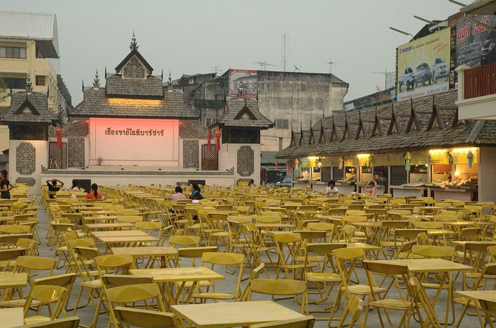

📷 Jpatokalร้านอาหาร-ของกิน · Food & Eats (4,153)
อาหารไทย · Thai (1,609) · ตามสั่ง-ผัดกะเพรา · Made-to-order (9) · ข้าวซอย-ก๋วยเตี๋ยว · Khao Soi & Noodles (32) · นานาชาติ · International (463) · อาหารทะเล · Seafood (24) · มังสวิรัติ-เจ · Vegetarian & Vegan (35) · สตรีทฟู้ด-ฟาสต์ฟู้ด · Street Food & Fast Food (181) · เบเกอรี่-ของหวาน · Bakery & Dessert (110) · บาร์-ผับ · Bars & Pubs (398) · กาแฟ-คาเฟ่ · Coffee & Cafés (1,301) · ร้านริมน้ำ · Riverside 🐜
— ผู้สนับสนุน · sponsor —Skip DJT — บินฟลอริดาให้ถูกลง เทียบสนามบินก่อนจอง · Skip DJT — fly Florida for less: compare the airports before you bookลงโฆษณาที่นี่ · advertise here
🐜 = ข้อมูลที่มีแล้ว เต็มที่ ๙ ตัว — ชื่อไทย ชื่ออังกฤษ เบอร์ LINE เวลาเปิด เว็บ รูป เจ้าของยืนยัน และมดเพิ่งไปเดิน · ข้อมูลคืออำนาจ เติมให้ครบได้ฟรี · 🐜 = one ant per fact we hold, nine when a listing is complete — Thai name, English name, phone, LINE, hours, a live website, a photo, owner-confirmed, recently walked. Information is power; filling it in is free.
- "ะ" · The ITs🐜2
- (วัน)ชัยโยเกิร์ตสดปั่น🐜1
- 1🐜1
- 1 Way Bar🐜1
- 100 Flavors: Chiang Mai Craft Ice Cream🐜3
- 102/1 อาหารตามสั่ง🐜2
- 108 Cafe🐜1
- 111หมี่-เกี๊ยว🐜1
- 11เย็นตาโฟ · 11 Yentafo🐜2
- 12 Feb Homey Cafe🐜1
- 1678 Cafe🐜3📶 ไวไฟ · Wi-Fi
- 16th Space🐜1
- 18มหาชัย จิ้มจุ่ม🐜1
- 2 C’s Sons🐜1
- 200 Pigs Power Noodle Café🐜1
- 202 Restaurant🐜1
- i-Fresh🐜1
- 22 Mini Cocktail Bar🐜1
- 248 Roof Top Bar and Pool Bar🐜2
- 273 Brew House🐜1
- 29 Coffties🐜3❄️ แอร์เย็น · Air-conditioned
- 2Gether Bar🐜4
- 2StreetCoffeeCrew🐜1
- ป็อป แอม · 3 Dot🐜2
- 3ดี🐜1
- 4 soup🐜2
- 48 Garage🐜1📶 ไวไฟ · Wi-Fi
- 49 Garden Cafe' & Bistro🐜1
- ไก่ย่างห้าดาว · 5 Star Chicken🐜2
- 5 Star Chicken🐜1
- 5 Star Chicken🐜1
- 555🐜1
- 69 Cafe🐜1
- 6ixcret Show🐜1
- 7 Heaven🐜1
- 7 Pounds🐜1📶 ไวไฟ · Wi-Fi
- 7 Senses Gelato🐜4
- 7-🐜1
- 72 Café🐜1
- 74 Coffee🐜1📶 ไวไฟ · Wi-Fi
- 7up🐜1
- 8-inch Pizza🐜1
- 81 Bar🐜1
- 88 Rustic Jungle Café🐜1
- 89 Food Street🐜1
- 9 Moo 9 Cafe & Gallery🐜3
- 9 Siblings🐜1📶 ไวไฟ · Wi-Fi
- 9 ส · 9 Gao Cafe🐜2
- 92 ราชดำเนิน · 92 Rachadamnoen🐜2
- 99 Villa & Cafe🐜1
- 9P Coffee Cuisine Garden🐜3📶 ไวไฟ · Wi-Fi
- 9kao Coffee🐜1
- 9th Level Cafe🐜1
- 9th Street🐜1
- @ Maerim Chiangmai🐜2
- @ The Bar🐜1
- @Ratchapruek🐜2
- แอทเดอะทีค บ้านสักทอง · @The Teak🐜2
- @me🐜1
- @suan dok gate chiangmai🐜2
- @wall🐜1📶 ไวไฟ · Wi-Fi
- @ก๋วยเตี๋ยว🐜1
- @ริมน้ำ · Rim Nam🐜2
- A Day In Chiang Mai🐜1📶 ไวไฟ · Wi-Fi
- โจ๊กต้มเลือดหมู ประตูเชียงใหม่ · A ROI🐜2📶 ไวไฟ · Wi-Fi
- A-One🐜1
- A.B.C.D.🐜2📶 ไวไฟ · Wi-Fi
- AIKU bar & restaurant🐜1
- AMM (Aung Myint Mo Kyay Oh)🐜3📶 ไวไฟ · Wi-Fi
- ASMR Cafe & Wellness🐜2❄️ แอร์เย็น · Air-conditioned📶 ไวไฟ · Wi-Fi
- Aba Kitchen🐜1
- Abacus Coffee🐜1
- Accha Indian Restaurant🐜1
- Accha Indian cuisine🐜1📶 ไวไฟ · Wi-Fi
- Adirak Pizza🐜1
- Adirak Pizza🐜1
- Adirak Pizza🐜2
- Ae's Place🐜1
- Agri Chapter : Art Farmer🐜2
- Aileen Coffee CNX🐜3📶 ไวไฟ · Wi-Fi
- Ailegro🐜2
- Air's Kitchen and Cafe🐜2📶 ไวไฟ · Wi-Fi
- Airniversary Camp & Cafe🐜3
- Aiya Cafe🐜3
- Aji Yakiniku🐜1
- Papa's Cup🐜2
- กาแฟอาข่าอามา · Akha Ama🐜4📶 ไวไฟ · Wi-Fi
- Akha Ama (The New Original)🐜1📶 ไวไฟ · Wi-Fi
- Akha Ama Coffee (The New Original)🐜1📶 ไวไฟ · Wi-Fi
- กาแฟอาข่าอามา (สาขา 2) · Akha Ama Phrasingh🐜4❄️ แอร์เย็น · Air-conditioned📶 ไวไฟ · Wi-Fi
- Aki Choux Cream🐜1
- Akma Ama Living Factory🐜1
- Al Osman🐜1
- Al Reem Restaurant (UAE)🐜1
- Al-Hussain🐜1
- Alchemy Vegan🐜3❄️ แอร์เย็น · Air-conditioned📶 ไวไฟ · Wi-Fi
- Aleenta Coffea🐜1
- Alice's Restaurant🐜2
- Alieno Pizza🐜3
- All About Coffee🐜3
- All Seasons Travel Cafe🐜1
- All about Coffee🐜1
- All about beef - Yakiniku🐜1
- All about yoghurt🐜1
- Allee's Rotee🐜1
- Allegria🐜1
- Allway🐜1
- Allway Café🐜1📶 ไวไฟ · Wi-Fi
- Am Pm Restaurant🐜3
- Am. Tony Antique Shop & Coffee🐜1
- Amalgamate🐜1
- Amazing Sandwich🐜1
- Amazing alleyway🐜1
- Analog🐜1
- Anatolia Old Town🐜1
- Anchan🐜2
- Angel Bar🐜1
- Angel's Secrets🐜3📶 ไวไฟ · Wi-Fi
- Angie's place🐜1
- Anila Gelato🐜1
- Ann and Coffee🐜1
- Ann&Mom🐜2❄️ แอร์เย็น · Air-conditioned
- Annies Restaurant🐜1
- Antique Europe🐜1
- Anusarn Market Food Court🐜2
- Aob-Sook🐜2📶 ไวไฟ · Wi-Fi
- Aom Am🐜1
- Aom Coffe House🐜2📶 ไวไฟ · Wi-Fi
- Aom Tarn Garden Restaurant🐜1
- App Cafe🐜1
- Aquarium Food Court🐜1
- Arabusta Coffee🐜1
- Arbusto🐜2
- Arbusto Italian House🐜1
- Archers🐜3📶 ไวไฟ · Wi-Fi
- Arcobaleno Italian Restaurant🐜2
- Area 41 Coffee&Cafe🐜2
- Areemitr🐜1
- Areeya Garden Home🐜2
- Arno's🐜1📶 ไวไฟ · Wi-Fi
- Arom D Shop🐜1
- Aroma🐜1
- Around 18 Grams🐜2
- Aroy Dee🐜1
- Aroy Garden🐜2
- Art Bosang Coffee House🐜1
- Art Cafe🐜2
- Art Cafe🐜2📶 ไวไฟ · Wi-Fi
- Art Roastery Huay Kaew🐜2
- Artisan🐜1
- Artisan🐜1📶 ไวไฟ · Wi-Fi
- Artisan🐜1📶 ไวไฟ · Wi-Fi
- Artisan sourdough by apple fahey🐜2
- Araksa cafe🐜1
- Asama🐜2
- Asma🐜1
- Assara Cafe & Restaurant🐜2
- At Fifteen🐜2
- At Nine Restaurant🐜1
- At Ta Rote Cafe🐜2
- At ขัวเหล็ก · At Khualek Cafe & Restaurant🐜4
- Atelier 36🐜1📶 ไวไฟ · Wi-Fi
- Au Choix Coffee🐜2📶 ไวไฟ · Wi-Fi
- Au La La Restaurant🐜3
- Au choix🐜1📶 ไวไฟ · Wi-Fi
- Auf der Au Garden🐜1
- Auf der Au Garden (new location)🐜1
- Auf der Au Garden Restaurant & Bistro🐜4
- Aum Vegetarian Restaurant🐜2📶 ไวไฟ · Wi-Fi♿ เข้าด้วยรถเข็นได้ · Step-free entry
- Aunt Aoy Kitchen🐜2🍽 อยู่ในมิชลินไกด์ 2569 · in the MICHELIN Guide 2026
- Aunt Nee🐜1
- Aunty's Corner🐜3📶 ไวไฟ · Wi-Fi
- Ausaa🐜1
- Authentic Thai Restaurant🐜1
- B Home BBQ🐜1
- B Samcook Home16🐜3
- B-waff Belgian specialities🐜3
- B.o.5. Bar🐜1
- BB Burger🐜1
- BBQ Pork Buffet🐜1
- BM DIARY coffee🐜3
- BN Club🐜1
- BOB Coffee🐜1
- BS Bar🐜1
- BUS Coffee🐜1
- Ba Rung Cafe🐜1
- Baa Baa Black Cafe🐜1
- Baan 104 Coffee and Bakery🐜2📶 ไวไฟ · Wi-Fi
- Baan Bakery🐜2
- Baan Buri Cafe & Restaurant🐜2📶 ไวไฟ · Wi-Fi♿ เข้าด้วยรถเข็นได้ · Step-free entry
- Baan Doi🐜1
- Baan Dong View Doi🐜1
- Baan Gong Kham Restaurant🐜1
- Baan Jangarpor🐜3
- Baan Landai🐜1
- บ้านแม่ คาเฟ่ แอนด์ เรสเทอรองท์ เชียงใหม่ · Baan Mae Café & Restaurant Chiang Mai🐜5📶 ไวไฟ · Wi-Fi
- Baan Na Coffee and Restaurant🐜2
- Baan Nok Cafe🐜1📶 ไวไฟ · Wi-Fi
- Baan Prachan🐜2
- Baan Suan🐜1
- Baan Suan Ping Phak🐜2
- Baan Ta-Min🐜1
- Baan a Din French Restaurant🐜3
- Baan landai fine thaï cuisine🐜2
- Baanrai Steak House🐜1
- Baansuanhimdoi🐜1
- บ้านสวนภูรจิตร · Baansuanpurajit🐜2
- Baba Bobo🐜1
- Baby Sprouts Chiang Mai🐜1
- Pentatonic Rock Bar · Babylon Bar🐜2
- Babylonian🐜1
- Babylonian Iraqi🐜1
- Backin Coffee & Bar🐜1
- Bad Boys Cafe🐜1
- Baguayoa Cafe🐜1
- Bai Orchid Cafe🐜1
- ใบตอง · Baitong🐜2
- Bake & Bite🐜1
- Bake & Bite Bakery and Restaurant🐜1
- Bakery🐜1
- Bakery by Dang🐜2
- Ball Bar🐜1
- BamBerry🐜1
- Bamboo🐜2
- Bamboo Bar🐜1
- Bamboo Bee🐜2
- Bamboo cofe co🐜1📶 ไวไฟ · Wi-Fi
- Ban Bon Doi🐜1📶 ไวไฟ · Wi-Fi
- Ban Coffee🐜1
- Ban Ngam Sang Deuan🐜1
- Ban Panfa Cafe & Bakery🐜2
- Ban Rommai Restaurant🐜1
- Ban Suwan Panwa🐜1
- Banana Bar🐜1
- Bangkok Airways Lounge🐜1
- Bangpun coffee bar🐜2
- Banh Mi🐜1
- Bannom🐜2❄️ แอร์เย็น · Air-conditioned📶 ไวไฟ · Wi-Fi♿ เข้าด้วยรถเข็นได้ · Step-free entry
- Bantunglom Resort🐜3
- Banviang Coffee🐜1
- Bar Beer Ruamchok🐜1
- Bar Fry🐜1
- Bar-B-Q Plaza🐜1
- Barc.cnx🐜1
- Barefoot Café🐜2
- Barneo Dessert Bar🐜1
- Bart🐜1
- Bart Coffe🐜2
- Base Lab🐜1
- Basecamp trail cafe🐜2📶 ไวไฟ · Wi-Fi
- Basic Bar🐜1
- Batch : Baked & Brew🐜3
- Bavarian Garden Restaurant🐜1
- Bays Coffee & Food for Thought🐜3📶 ไวไฟ · Wi-Fi
- Bays Coffee Company @113 Compound🐜3📶 ไวไฟ · Wi-Fi
- Beam🐜1
- Beam & Col Cafe🐜1
- Beans + Liquor🐜2📶 ไวไฟ · Wi-Fi
- Bear Hug Cafe🐜1
- Beast Burger🐜3
- Beast Burger🐜2
- Beatles Station🐜1
- Bebibee Woodfire Pizza🐜1
- Beccofino🐜1
- Bee Bar🐜1
- Fora Bee Healthy Shop🐜1📶 ไวไฟ · Wi-Fi
- Beef Land Steakhouse🐜3
- Beer Balance🐜1
- Beer House🐜1
- Beer Lab🐜1
- Beer Republic🐜1
- Beer Terminals🐜1
- Beer Time🐜1
- Before Kick Off🐜1
- Begin Again🐜1
- Bella Goose Cafe on the Pond🐜2♿ เข้าด้วยรถเข็นได้ · Step-free entry
- Bella Goose Coffee🐜2📶 ไวไฟ · Wi-Fi
- Bella Madre Pizza🐜2📶 ไวไฟ · Wi-Fi
- Bellinee's🐜1
- Beloved Shop🐜1
- Ben Cocktail🐜2
- Beppu🐜2
- Bertini🐜1
- Bes & Boom🐜1
- Best Khao Soi🐜1
- Best Kitchen🐜2
- Between Cafe🐜1
- Big Brother Restaurant🐜1
- Big Daddy's Diner🐜1
- Big Duck🐜1
- BigCminimarket🐜1
- Bike Cafe🐜1
- Billy's Restaurant🐜2📶 ไวไฟ · Wi-Fi
- Bird Forest Tea Gallery🐜1
- Bird's Nest Cafe🐜3📶 ไวไฟ · Wi-Fi
- Biscotti House🐜3
- Biscuit Shop🐜1
- Bistro Terrace🐜1📶 ไวไฟ · Wi-Fi
- Bistro1🐜1
- Bistrot Nid🐜1
- Bitter Truth Bar🐜1
- Bitter and Sweet🐜1
- Black Biscuit🐜1
- Black Canyon🐜2❄️ แอร์เย็น · Air-conditioned♿ เข้าด้วยรถเข็นได้ · Step-free entry
- Black Canyon🐜1
- Black Canyon🐜2
- Black Canyon Coffee🐜2❄️ แอร์เย็น · Air-conditioned♿ เข้าด้วยรถเข็นได้ · Step-free entry
- Black Canyon Coffee🐜2
- Black Canyon Coffee🐜1
- Black Canyon Coffee🐜1
- Black Canyon Coffee🐜1
- Black Door🐜1
- Black Elephant Garden Bistro🐜1
- Black Ground🐜1
- Black canyon🐜1
- Black coffee smile🐜2📶 ไวไฟ · Wi-Fi
- Blackitch🐜4
- Blending Room Coffee🐜1
- Blessed Food🐜3
- Bloomin' Moon🐜2❄️ แอร์เย็น · Air-conditioned
- Blooming Flower and Picnic🐜1
- Blue Cafe🐜3📶 ไวไฟ · Wi-Fi
- Blue Coffee🐜1
- Blue Coffee🐜1
- Blue Coffee🐜1📶 ไวไฟ · Wi-Fi
- Blue Diamond The Breakfast Club🐜3📶 ไวไฟ · Wi-Fi
- Blue Hut Cafe🐜2
- Blue Noodle Shop🐜2
- Bluedog Cafe🐜2
- Board game cafe🐜1
- Bodhi Tree 1 Café🐜1📶 ไวไฟ · Wi-Fi
- Bodhi Tree Cafe🐜1📶 ไวไฟ · Wi-Fi
- Bok Bok Cafe🐜1
- Bombay🐜1
- Bon Bon Cafe🐜3
- Bon Kitchen🐜1
- Bonbon Cafe🐜1
- Boo Bar x Chill Spot🐜1
- Boon Cafe🐜1
- Boon Raksa🐜2📶 ไวไฟ · Wi-Fi
- Born 2🐜1
- Boss Ramen🐜1
- Botan🐜2
- Bowls & Breads🐜2❄️ แอร์เย็น · Air-conditioned📶 ไวไฟ · Wi-Fi
- Box Coffee🐜1
- Boy Blues Bar🐜1
- Brain awake coworking space🐜1
- Brasserie🐜1
- Bread 'n Cake🐜1
- Breakfast World🐜1
- Breakfast and Bar🐜1
- Brewginning Coffee🐜1📶 ไวไฟ · Wi-Fi
- Brewing Room🐜1
- Brewing Room🐜2📶 ไวไฟ · Wi-Fi
- Brewology 89 Coffee🐜3
- Brick Bistro🐜1📶 ไวไฟ · Wi-Fi
- Bridge Bar (closed)🐜1
- Broken Dreams🐜1
- Brown Rice Organic Cafe🐜1
- Brownie Steak & Bakery🐜1
- Bualuang Studio Coffee&Arts🐜2
- Bualuang Terasse🐜2
- Bubbles Live organic Restaurant🐜1
- Buck Bar🐜1
- Buckets🐜1
- Bucoliq🐜1
- Bud's Ice Cream🐜1
- Buddy🐜1
- Buddy Bar🐜1
- Buff Cafe🐜3
- Buffet Lovers🐜1
- Bumrungburi BRB Cafe🐜1
- Bun Song🐜1
- Buncha's slow bar🐜2
- Bunny Bites🐜1
- Bunny Buns🐜1
- Buono Italian Restaurant🐜1
- Burger Box🐜1
- Burger King🐜2
- Burger King🐜2
- Burger King🐜2
- Burger King🐜1
- Burger King🐜2
- Burger King🐜1
- Burger King🐜2
- Burgers & Springrolls🐜2♿ เข้าด้วยรถเข็นได้ · Step-free entry
- Burkta Cafe🐜1
- Burma Kitchen🐜2📶 ไวไฟ · Wi-Fi
- Bus Bar🐜1
- Bus Cafè🐜1
- Butter is Better🐜2❄️ แอร์เย็น · Air-conditioned📶 ไวไฟ · Wi-Fi
- เนยสด อาหารอร่อย · Butter is Better Too🐜3❄️ แอร์เย็น · Air-conditioned📶 ไวไฟ · Wi-Fi
- Butterfly Conection Cafe🐜1
- Buzz Bar Anusarn🐜1
- Buzz Bar Anusarn🐜1
- By Hand Pizza Cafe🐜2
- By'N🐜1📶 ไวไฟ · Wi-Fi
- C U Corner🐜1
- C-Fa🐜1
- C.M.U Bookstore Coffee🐜1
- C.U. Bar🐜1
- CHINCHA🐜1
- CHUM Lanna Restaurant (Good local Food)🐜3
- CM Smoothie House🐜1
- CNX Bar🐜1
- CU Goodday🐜1
- CUBE cafe🐜1
- Cafe 17🐜1
- Cafe Amazon🐜1
- Cafe Amazon🐜1
- Cafe Amazon🐜2
- Cafe Amazon🐜1
- Cafe Amazon🐜1
- Cafe Amazon🐜1
- Cafe Amazon🐜2♿ เข้าด้วยรถเข็นได้ · Step-free entry
- Cafe Arte🐜1
- Cafe Baan Piemsuk🐜1
- Cafe Blanco🐜1
- Cafe Caliente🐜2📶 ไวไฟ · Wi-Fi
- Cafe De JJ🐜1
- Cafe De Maross🐜1📶 ไวไฟ · Wi-Fi
- Cafe Depu Coffee & Ice Cream🐜1
- Cafe Factory🐜1
- Cafe Kantary🐜1
- Cafe Long Do🐜1
- Cafe Mong Pearl🐜1
- Cafe Reste🐜1
- Cafe Waan🐜1
- Cafe de Kemrex🐜1
- Cafe de Krabi🐜1
- Cafe de L'Amour🐜2❄️ แอร์เย็น · Air-conditioned📶 ไวไฟ · Wi-Fi
- Cafe de Oasis🐜4📶 ไวไฟ · Wi-Fi
- Cafe de Paris🐜1
- Cafe de Sirin🐜1
- Cafe de Sot🐜3📶 ไวไฟ · Wi-Fi
- Cafe de Thaan Aoan🐜2❄️ แอร์เย็น · Air-conditioned📶 ไวไฟ · Wi-Fi♿ เข้าด้วยรถเข็นได้ · Step-free entry
- Cafe de la Flora🐜1
- Cafe' de Siam🐜2
- Cafeteria@Riverside🐜1
- Caffe Ritazza🐜1
- Caffeine🐜1📶 ไวไฟ · Wi-Fi
- Caffeine No. 5 Coffee🐜1
- Caffè B{e}arista🐜1📶 ไวไฟ · Wi-Fi
- Café Amazon🐜1
- Café Amazon🐜1
- Café Amazon🐜1
- Café Amazon🐜1
- Café Amazon🐜2📶 ไวไฟ · Wi-Fi♿ เข้าด้วยรถเข็นได้ · Step-free entry
- Café Amazon🐜1
- คาเฟ่ อเมซอน · Café Amazon🐜2
- คาเฟ่ อเมซอน · Café Amazon🐜2
- คาเฟ่ อเมซอน · Café Amazon🐜2
- คาเฟ่ อเมซอน · Café Amazon🐜2
- คาเฟ่ อเมซอน · Café Amazon🐜3
- คาเฟ่ อเมซอน · Café Amazon🐜2
- คาเฟ่ อเมซอน · Café Amazon🐜2
- คาเฟ่ อเมซอน · Café Amazon🐜2📶 ไวไฟ · Wi-Fi
- คาเฟ่ อเมซอน · Café Amazon🐜2
- Café Amazon🐜1
- คาเฟ่ อเมซอน · Café Amazon🐜3
- Café Amazon🐜1
- คาเฟ่ อเมซอน · Café Amazon🐜2📶 ไวไฟ · Wi-Fi
- Café Der Ray🐜1
- Café Rom-D🐜2
- Café de Museum🐜1
- Café de Nimman🐜1📶 ไวไฟ · Wi-Fi
- Café de Nimman🐜2
- Cainito🐜1
- Cake & Cafe🐜3
- Cake Cottage🐜1
- Caliente Coffee Roasters🐜2
- Camellia & Co.🐜2🕓 เปิด 24 ชม. · Open 24h
- Camp Meating🐜1
- Caramellow🐜3📶 ไวไฟ · Wi-Fi
- Caravan🐜1
- คาร์พ คาเฟ่ · Carp Cafe🐜4
- Carstreet Bistro🐜1
- Casa🐜2
- Casa Diverso🐜3
- Casa Shadé🐜1
- Cat Brothers Cafe🐜1📶 ไวไฟ · Wi-Fi
- Cat Cafe🐜2
- Cat house🐜1📶 ไวไฟ · Wi-Fi
- Cat House🐜1📶 ไวไฟ · Wi-Fi
- Cat Me🐜2
- Cat's Coffee🐜1♿ เข้าด้วยรถเข็นได้ · Step-free entry
- แคทโมสเฟียร์ แคท คาเฟ่ · Catmosphere Cat Café🐜3📶 ไวไฟ · Wi-Fi
- Cats Station Cafe🐜2
- Celapot Café🐜2
- Center Bar🐜1
- Cha Cha Sports Bar🐜1
- Cha Malay - Café @ Garage🐜3
- Cha ta yom🐜2
- Cha-Cha🐜2
- Chada Restaurant🐜1
- Chada Steak House🐜3
- Chada Vegetarian🐜2❄️ แอร์เย็น · Air-conditioned♿ เข้าด้วยรถเข็นได้ · Step-free entry
- Chai n Thai🐜1
- Chala no6🐜1
- Chalupin🐜1
- Cham Cha @Doi Kham🐜3
- Cham Chaa Coffee🐜3
- Chanctonbury Tea & Garden🐜1📶 ไวไฟ · Wi-Fi
- Chang Phueak Mu Kratha🐜3
- Chang cooking & restaurant🐜1
- Changklan Steak🐜1
- Chantra Khiri Chalet🐜1
- Chantra khiri Chalet🐜1
- Chanya’s🐜1♿ เข้าด้วยรถเข็นได้ · Step-free entry
- Chaochau🐜3📶 ไวไฟ · Wi-Fi
- Chaosua cafe🐜1
- Chapter 1🐜1
- Chapter One🐜3❄️ แอร์เย็น · Air-conditioned📶 ไวไฟ · Wi-Fi
- Charoen Cafe🐜1
- Charoen Suan Aek🐜3
- Cheap Food Stalls 40baht🐜1
- Cheap Thai food🐜1
- Cheesetober🐜1
- Chef Clint Bistro🐜1
- Chef Nut🐜2📶 ไวไฟ · Wi-Fi
- Chef Steak🐜2
- Chef Tao’s Thai Cuisine🐜2
- Chef's Together🐜2
- Cherry Blossom🐜1
- Cherry Burmese🐜1
- Chester's🐜1
- Chester's Grill🐜1
- Chez 15🐜3📶 ไวไฟ · Wi-Fi
- Chez Daniel le Normand🐜1
- Chez Marco / Kenji Gyoza🐜2
- Chez Nous🐜2
- Chez Philippe🐜2
- Chez Phillippe🐜1
- Chiang Cafe🐜1
- Chiang Mai Coffee🐜1
- Chiang Mai Entertainment Complex🐜1
- Chiang Mai Horumon🐜3
- Chiang Mai Pub Crawl🐜2
- Chiang Mai Reunpae 2🐜2
- Chiang Mai Saloon🐜1
- Chiang Mai Smoke House🐜3
- Chiang Mai Tea House🐜1📶 ไวไฟ · Wi-Fi
- Chiang chang🐜1
- ChiangMai Breakfast World🐜2📶 ไวไฟ · Wi-Fi
- Chiangdao Valley🐜1
- Chiangmai Horumon Nong Hoi🐜2
- Chic Ka Ra Karaoke🐜1
- Chicken Embassy🐜2
- Gai Yang Wichian🐜1
- Chili Bowl🐜1
- Chill & Grill🐜2
- Chill & Grill Steak Bar🐜1
- Chill Chill Cup🐜1
- Chill HOUSE🐜2
- Chill House🐜2
- Chill Out Bar🐜1
- Chill Station🐜1
- Chillan Coffee🐜1
- Chillax🐜2
- Chilli Bell🐜2
- Chinda Hotpot🐜2♿ เข้าด้วยรถเข็นได้ · Step-free entry
- Chinese noodle🐜3
- Chit Chai🐜3
- Chit Hole CNX🐜4
- Choc Coffee🐜1
- Chocolate🐜1
- Choei🐜1
- Cholly Cafe🐜1
- Chom Cafe and Restaurant🐜2❄️ แอร์เย็น · Air-conditioned
- Chomdao Cafe🐜1
- Chomna Mountain View🐜2
- Chomphoo Fah🐜1
- Chouquette Bakery and Café🐜2
- Chow Chow🐜1
- Chuan Chom🐜1
- Chuan Chom Bar🐜1
- Chuan Chuan Xiang🐜1
- Chuen🐜1
- Chuen Chawee🐜1
- Chuen Klai Doi🐜1
- Chuen-Jit Coffee🐜1📶 ไวไฟ · Wi-Fi
- ชม · Chum northern cuisine🐜3
- Churn🐜1
- Churro Churro🐜1
- Cieste - Cafe and Hotel🐜1
- City Cafe🐜2
- Classic Burger🐜1
- Clay Studio Café🐜2📶 ไวไฟ · Wi-Fi
- Cloud Nine🐜1
- Clove&Co🐜1
- Club 51🐜1
- Club Cafe🐜1
- Club Diva🐜1📶 ไวไฟ · Wi-Fi
- Co-co Shop🐜2
- Coach's Pizza🐜1
- Coco Cafe🐜1
- Coco Corner Coconut🐜1
- Coco Salad🐜1
- Cocoa 6🐜1
- Coconut Shell, los mejores batidos del mundo · Coconut Shell🐜2📶 ไวไฟ · Wi-Fi
- Cof & Fur🐜3
- กาแฟโรงงาน · Coffactry🐜2
- Coffee & Bakery🐜1
- Coffee & Bakery🐜1
- Coffee & Me🐜1
- Coffee & Relax🐜1
- Coffee & Tea🐜1
- Coffee 2 Days🐜1
- Coffee Addict🐜1
- Coffee And More🐜1
- North Mountain Coffee🐜1
- Coffee Bee🐜2
- Coffee Bug🐜1📶 ไวไฟ · Wi-Fi
- Coffee Bull🐜2
- Coffee Champ🐜1📶 ไวไฟ · Wi-Fi
- Coffee Cop🐜1📶 ไวไฟ · Wi-Fi
- Coffee Corner🐜1
- Coffee Culture🐜1
- Coffee Deve Roaster🐜1
- Coffee Fangun🐜1📶 ไวไฟ · Wi-Fi
- Coffee Garden🐜1
- Coffee House🐜1
- Coffee House @ Khaomao-Khaofang🐜1
- Coffee INC. Nicohub🐜3❄️ แอร์เย็น · Air-conditioned📶 ไวไฟ · Wi-Fi♿ เข้าด้วยรถเข็นได้ · Step-free entry
- Coffee Journey🐜1
- Coffee Love🐜2
- Coffee Lover Chiang Mai🐜1
- Coffee Lovers🐜2📶 ไวไฟ · Wi-Fi
- Coffee Munao🐜2
- Coffee Payap🐜1
- Coffee Plus🐜2📶 ไวไฟ · Wi-Fi
- Coffee Point Changmai🐜1📶 ไวไฟ · Wi-Fi
- Coffee Pooh🐜1
- Coffee Shop🐜2📶 ไวไฟ · Wi-Fi
- Coffee Station🐜1
- Coffee Telling🐜1
- Coffee Time🐜1
- Coffee Time🐜1
- Coffee Times🐜1
- Coffee Villa🐜1
- Coffee Waf🐜3
- Coffee World🐜1
- Coffee World🐜2
- Coffee de Trains🐜1
- Coffee in Love🐜1
- Coffee in Narrow🐜1
- Coffee or Me🐜3📶 ไวไฟ · Wi-Fi
- Coffee shop🐜1
- Coffee-Y🐜1
- Coffeebooz🐜2📶 ไวไฟ · Wi-Fi
- Cofésta🐜1
- Collina🐜1
- Colour Bistro🐜1
- Come on coffe🐜1📶 ไวไฟ · Wi-Fi
- Compass🐜1
- Congee-Noodles-Chinese soup🐜1
- Cook with Love🐜1
- Cooking Love🐜1📶 ไวไฟ · Wi-Fi
- Cooking love🐜1
- Cool Cafe🐜1
- CoolMuang🐜2❄️ แอร์เย็น · Air-conditioned📶 ไวไฟ · Wi-Fi♿ เข้าด้วยรถเข็นได้ · Step-free entry
- Coolly Chef Restaurant🐜1
- Corner Bar🐜3
- Corner Coff🐜2📶 ไวไฟ · Wi-Fi
- Corner kitchen cafe🐜1
- Cornerhouse Fifteen🐜1📶 ไวไฟ · Wi-Fi
- Cosmos Cafe🐜1
- Cottontree🐜2📶 ไวไฟ · Wi-Fi
- Country Home🐜1
- Country House🐜1
- Cowboy Coffee🐜1
- Cowboy Corner🐜1
- Cozy Cafe Chiangmai🐜3📶 ไวไฟ · Wi-Fi
- Craffity🐜2📶 ไวไฟ · Wi-Fi
- Crazy Curry🐜1
- Crazy Noodle🐜1
- Crazy german🐜1
- Creativitea🐜3❄️ แอร์เย็น · Air-conditioned📶 ไวไฟ · Wi-Fi
- Creek Cafe🐜1
- Crema Cafe🐜1
- Crepes and Pad Thai🐜1
- Croco pizza🐜1
- Croissant Mellow Café🐜2
- Crystal Waterside Resort & Restaurant🐜1
- Cuisine de Garden🐜1🍽 อยู่ในมิชลินไกด์ 2569 · in the MICHELIN Guide 2026
- Cult Caffeine🐜2
- Cup & Cake🐜1
- Cup Fine Day🐜2
- Cup coffee house🐜2
- Curry Express🐜1
- Curry Puff Coffee🐜1
- Curry Scoop🐜1
- Cypress Lanes🐜2
- D Bistro🐜1
- D Cafe Coffee🐜1
- D-Milk ไมโลดิบ🐜2
- D-fine🐜1
- Eplus Bspase (EB)🐜2
- DOM cafe🐜1📶 ไวไฟ · Wi-Fi
- Da's Home Bakery🐜2
- Da's Home Bakery🐜1
- Dada Cafe🐜1📶 ไวไฟ · Wi-Fi
- Dadam K Bistro Café🐜2
- Daddy🐜2
- Daddy Dough🐜1
- Daddy Lion🐜2
- Daddy's🐜2
- Daddy's Antique🐜1
- Daddy’s Antique🐜1
- Dae Jang Geum🐜1
- Daifa garden🐜1📶 ไวไฟ · Wi-Fi
- Daily Donuts🐜1
- Dailycious🐜1
- Dairy Queen🐜1
- Dairy Queen🐜2
- Dairy Queen🐜1
- Dairy Queen🐜1
- Dakgalbi🐜1
- Dakgalbi House🐜1
- Dan Chicken Rice🐜1🍽 อยู่ในมิชลินไกด์ 2569 · in the MICHELIN Guide 2026
- Dan chicken rice by max (khao man gai)🐜1
- Dang Bakery🐜1
- Dang Bakery🐜1
- Dang Bakery🐜1
- Dang Bakery🐜1
- Dang Bakery🐜2
- Danissa Bakery & Cafe🐜1
- Dark roast🐜1
- Darling Bar🐜1
- Dash🐜3📶 ไวไฟ · Wi-Fi♿ เข้าด้วยรถเข็นได้ · Step-free entry
- David's Place🐜1
- Day Cafe🐜1
- Dayli🐜1
- De Cassowary🐜2📶 ไวไฟ · Wi-Fi
- De Ngua by All About Beef🐜2
- DeLish Kafe🐜1📶 ไวไฟ · Wi-Fi
- Deck 1🐜1
- Deco Coffee & Tea🐜1📶 ไวไฟ · Wi-Fi
- Deep Green🐜2
- Dejavu Cafe🐜1
- Dek-Cha บ่อสร้าง🐜1
- Delicafe🐜1
- Delicieux Fondu and Pizza🐜1
- Derm Derm🐜1
- Design Coffee🐜1
- Dewnoon🐜1
- Di Bosco🐜3
- Diary Queen🐜1
- Diciotto🐜2
- Differ.,Inc🐜1
- DinDin Cafe🐜1
- Dinky BBQ🐜1
- Doai Ji🐜1
- Doggy Monster Bar🐜1
- Doi Cafe & Roasting🐜1
- Doi Caffe🐜1
- Doi Chaang🐜1
- Doi Chaang🐜1
- Doi Chaang🐜1
- Doi Chaang🐜1
- Doi Chaang🐜1
- Doi Chaang🐜1
- Doi Chaang🐜1
- Doi Chaang🐜1
- Doi Chaang🐜1
- Doi Chaang Coffee🐜2📶 ไวไฟ · Wi-Fi
- Doi Chaang Coffee🐜1
- Doi Chaang Resort Cafe🐜1
- Doi Chang🐜1
- Doi Chang🐜2📶 ไวไฟ · Wi-Fi♿ เข้าด้วยรถเข็นได้ · Step-free entry
- Doi Chang🐜1♿ เข้าด้วยรถเข็นได้ · Step-free entry
- Doi Luang Coffee🐜1
- Doi Saket Coffee🐜1
- Doi Saket Coffee Green🐜1
- Doi Taeng Coffee🐜1
- Doi Taeng Coffee🐜1
- Doi Tung🐜1
- Doi Tung Coffee🐜1
- Dolcetto' Cafe🐜1
- Dollar Coffee🐜2
- Dominic Bread🐜1
- Dominique’s Bread🐜3
- Donna Donna🐜1
- Donut Canyon Party Barge🐜2
- Doo Dee Pub & Restaurant🐜1📶 ไวไฟ · Wi-Fi
- Door bell ice cream🐜1
- Doppio🐜1
- Doqaholic Cafe🐜1
- Dorle Bakery🐜2❄️ แอร์เย็น · Air-conditioned
- Double Click Cafe🐜1♿ เข้าด้วยรถเข็นได้ · Step-free entry
- Downunder🐜1
- Dr. Manny Cafe🐜1📶 ไวไฟ · Wi-Fi
- Drink & Drunk🐜1
- Drinksmith🐜2
- Drop in Restaurant & Bar🐜1📶 ไวไฟ · Wi-Fi
- Drunken Bar🐜1
- Dtaa's Restaurant🐜2
- Duck Nooddle night stall🐜1
- Ducky Coffee🐜1
- Dude Bar🐜1
- Dude Cafe🐜2
- Duke's🐜1
- Duke's Ruamchok🐜1
- Dumplings🐜1
- Dunkin'🐜1
- Dunkin'🐜1
- Dunkin' Donuts🐜1
- Dunkin' Donuts🐜1
- Durianism Café🐜1
- E-Go House🐜1
- E-ly Café🐜1
- EM16🐜1
- ENTHEOS Coffee House🐜3📶 ไวไฟ · Wi-Fi
- Eakkanak Kitchen🐜1
- Early Bird🐜1
- Early Bird 626🐜2
- Early Owls🐜2
- กาแฟอีส · Ease🐜3
- East Bar🐜2
- East Coffee🐜1
- Easy Corner🐜2
- Eat 8 Eaten Food Court🐜1
- Eat Me🐜1
- Eat On Earth🐜2
- Eat Sense🐜1
- Eat is Life🐜2
- Eat@🐜1
- Eat@Lanna🐜1📶 ไวไฟ · Wi-Fi
- Echo Cafe🐜1
- Eden Restaurant🐜1
- Eden Restaurant🐜1
- Eight Cafe Chiangmai🐜1
- Eighty-six Ramen🐜1
- El Diablo's Burrito🐜1📶 ไวไฟ · Wi-Fi
- Elefant Coffe shop🐜1
- Elliebum🐜2
- Elysa🐜1
- Ember🐜1♿ เข้าด้วยรถเข็นได้ · Step-free entry
- Eme-san🐜1
- Enjoy Café🐜1
- Enoteca Great Fine Wine🐜3📶 ไวไฟ · Wi-Fi
- Erotic Garden & Teahouse🐜3
- Es'satto Coffee🐜2
- Euang Kam Sai Northern Thai Cuisine🐜1
- Euro Diner🐜2
- Everest 8848🐜1❄️ แอร์เย็น · Air-conditioned♿ เข้าด้วยรถเข็นได้ · Step-free entry
- Everyday Vegan🐜1
- Ewa Sushi🐜1
- FIVE STAR MIX🐜1
- Fact Café🐜1
- Fah Ta Nee🐜2
- Fahtara🐜1♿ เข้าด้วยรถเข็นได้ · Step-free entry
- ฝ้าย เบเกอรี · Fai Bakery🐜4
- Fai Bakery🐜1
- Fai Bakery🐜1
- Fai Bakery🐜1
- ฝ้าย เบเกอรี · Fai Bakery & Restaurant🐜4
- Fai Bakery and Restaurant🐜1
- Fajitas Family Tex Mex🐜3
- Falafel and Salad🐜2📶 ไวไฟ · Wi-Fi
- Fang Coffee🐜1
- Fang Coffee🐜2
- Farango Cafe & Restaurant🐜2
- Farm Cafe🐜1
- Farm Hug Cafe🐜1
- Farm Kid Cafe🐜1📶 ไวไฟ · Wi-Fi
- Farm Story House🐜3
- Farm Story House Room & Restaurant🐜1📶 ไวไฟ · Wi-Fi
- Fat Cat🐜1
- Fat Elvis🐜1
- Fatimah Burger House🐜1
- Favola🐜2
- Favour Art Cafe🐜1
- Feast Society🐜1
- Feb Garden🐜1
- Feel Bar🐜1
- Feel Friday🐜1
- Fellowship Cafe & Co-working🐜3📶 ไวไฟ · Wi-Fi
- Fern Forest Cafe🐜3📶 ไวไฟ · Wi-Fi♿ เข้าด้วยรถเข็นได้ · Step-free entry
- Fernpresso🐜2
- Fernpresso🐜3📶 ไวไฟ · Wi-Fi
- Fernpresso🐜1
- Fernpresso At Lake🐜1
- Field Good🐜1
- Fieow Coffee Room🐜2📶 ไวไฟ · Wi-Fi
- Fin Bar🐜1
- Find Coffee🐜1
- Find Wood Chiangmai🐜1
- Finland Deer🐜1
- Fiore Rosa🐜3
- First Officer Coffee Roasters🐜2
- Five Star🐜1
- Five Star Chicken🐜2
- Five Star Chicken🐜1
- Five Star Chicken🐜1
- Five Star Chicken🐜2
- Fixie Koff🐜1
- Flapping Duck🐜1
- Fleur Cafe and Eatery🐜3📶 ไวไฟ · Wi-Fi
- Fleur Café & Eatery🐜1
- Fleur de Mai🐜2📶 ไวไฟ · Wi-Fi
- Flips and Flips donuts🐜2📶 ไวไฟ · Wi-Fi
- Flo Coffee Brewers🐜1
- Flour Flour🐜1📶 ไวไฟ · Wi-Fi
- Flower Coffee🐜1
- Flying Draco🐜1
- Fohhide🐜1
- Follow Me🐜1
- Fondcome Village🐜1
- Fondue House🐜2
- Fongnom Fongnom🐜1
- Food & Love Restaurant🐜1
- Food 4 thought🐜1📶 ไวไฟ · Wi-Fi
- Food And Drink cafe🐜1
- Food Court🐜1
- Food Park🐜1
- Food Stall (night)🐜1
- Food Stall (night)🐜1
- Food Stall (night)🐜1
- Food Stall (night)🐜1
- Food Stalls🐜1
- Food Station Hashery🐜1
- Food stalls🐜1
- Food4Thought East🐜3📶 ไวไฟ · Wi-Fi
- Foodpark🐜1
- Forest Bake🐜1
- Forte Coffee🐜1
- Foucault🐜3
- Four Corners🐜1
- Four Heavens Cafe & Bistro🐜1
- Francesca Italian Restaurant🐜1
- Franco Thai🐜1
- Free bird café🐜1
- Frenchie Cafe🐜1
- Fresh & Mild🐜1
- Fresh & Mild🐜1
- Fresh Break Cafe🐜1
- Fresh Time Vegetarian🐜2📶 ไวไฟ · Wi-Fi
- Fresh Wrap🐜1
- เฟรชแอนด์ไมลด์ · Fresh& Mild🐜2📶 ไวไฟ · Wi-Fi
- Fresher Juice Bar🐜1
- Freshy's Baking Club🐜4
- Fried Chicken🐜1
- Friend Coffee🐜2
- Friendly Cafe🐜1
- Friendly Coffee🐜1
- Friends Corner🐜1
- Fruit Smoothie Cafe🐜1
- Fruit shake and fruit stand🐜1
- Fruiturday🐜1
- Fruiturday🐜1♿ เข้าด้วยรถเข็นได้ · Step-free entry
- Fuel Coffee🐜1
- Fueng Fah🐜1
- Fuji🐜1♿ เข้าด้วยรถเข็นได้ · Step-free entry
- Fuji🐜2
- Fujian🐜2
- Fukuro🐜3
- Full Moon Bar🐜1
- Fumei Coffee🐜1
- Fumi🐜1
- Funan Garden🐜1
- Funky Dog🐜2📶 ไวไฟ · Wi-Fi
- Funky Monkey🐜1📶 ไวไฟ · Wi-Fi
- Funkydog🐜1
- Fusion Village🐜2
- G&M Sausage🐜1
- GAAD Coffee/Bar & Conversation🐜1
- GJ Bar & Restaurant🐜1
- GOKAKU (โก กา กุ)🐜2
- GRASP 1981 Espresso Bar🐜3
- Gagaga Sakaba🐜2
- Gai🐜1
- Gallery Drip Coffee Chiang Mai🐜2📶 ไวไฟ · Wi-Fi
- Game Mezz🐜2
- Game Online & Internet🐜2📶 ไวไฟ · Wi-Fi
- Ganesh Cafe🐜1
- Ganesha Kaffee🐜1📶 ไวไฟ · Wi-Fi
- Gapple🐜1
- Garden Island🐜1
- Garden Restaurant🐜2
- Garden Seafood🐜1
- Gate 5 Cafe & Bar🐜1
- Gateaux House🐜1
- Gateaux House🐜1
- Gateway🐜1📶 ไวไฟ · Wi-Fi
- Gedhawa🐜1
- Gekko Garden🐜1
- Gelabar🐜1
- Gelate🐜1
- Gelato World🐜1
- Gelato World🐜1
- Genocafe🐜1
- Ghia Kitchen🐜1
- Gigie Steak🐜1
- Ging Grai🐜2📶 ไวไฟ · Wi-Fi
- Ginger & Kafe🐜2
- Ginger Farm🐜1🍽 บิบ กูร์มองด์ 2565 · Bib Gourmand 2022♿ เข้าด้วยรถเข็นได้ · Step-free entry
- Ginger Farm Chiang Mai🐜3
- Ginny Cafe🐜1
- Gioia🐜1
- Giorgio🐜1
- Gip's🐜1
- Girasole🐜1
- Gladwell Cocktail Bar🐜1
- Gloria Jean's Coffee🐜1
- Glur🐜1
- Glyn Chiangmai🐜1
- Glyn Chiangmai Cuisine🐜2
- Goat Coffee🐜1📶 ไวไฟ · Wi-Fi
- Godzaa🐜2
- Gohan🐜2
- Gohanya🐜2
- Going up🐜2📶 ไวไฟ · Wi-Fi
- Goiwa Coffee & Garden🐜1
- Gold land coffe🐜1♿ เข้าด้วยรถเข็นได้ · Step-free entry
- Golden Bee🐜1♿ เข้าด้วยรถเข็นได้ · Step-free entry
- Golden Cake🐜1
- Golden Elephant🐜1
- Good & Cheap🐜1
- Good Corner🐜1
- Good Day Steak🐜2
- Good Friends🐜1
- lert ros · Good Morning🐜2
- Good Restaurant🐜1
- Good Smooth🐜1
- Good Vibes Cafe🐜1
- Good day Farm to Table🐜1
- Good luck bar🐜1
- Goodbar🐜1
- Goodsouls Kitchen🐜3❄️ แอร์เย็น · Air-conditioned📶 ไวไฟ · Wi-Fi
- Goodsouls Kitchen - Chang Moi🐜3
- Gord Chiangmai Kitchen🐜3
- Goro🐜1
- Grace Bakery🐜1
- Grandmas Kitchen🐜1
- Grape Wine Bar🐜1
- Graph🐜1
- Graph Coffee🐜3📶 ไวไฟ · Wi-Fi
- Star Coffee🐜1📶 ไวไฟ · Wi-Fi
- Gravity Cafe & Bistro🐜2❄️ แอร์เย็น · Air-conditioned📶 ไวไฟ · Wi-Fi
- Grazie Thai Local Food🐜1
- Greedy Beast Bakery🐜1
- Green Chille🐜1
- Green Cup🐜1
- Green Days🐜2
- Green Fox🐜1
- Green Mai🐜1📶 ไวไฟ · Wi-Fi
- Green O’Clock🐜1📶 ไวไฟ · Wi-Fi
- Greenies & Co🐜2
- Grill & Token Steak House🐜1
- Grill Jung🐜1
- Grill Of India🐜1📶 ไวไฟ · Wi-Fi
- Grill of Punjab🐜1
- Ground Burger🐜2
- Grumpy Old Men🐜2
- Gu Style Gu🐜1
- Guld Restaurant🐜1
- Gusto Site🐜2
- Guy fusión roti & tea · Guy fusión roto & tea🐜2
- H365 Coffee & Bistro🐜2
- HO Cafe & Restaurant🐜3
- HOT POT Buffet🐜2
- HP House Cafe🐜2📶 ไวไฟ · Wi-Fi
- Hachi🐜1
- Hachiban Ramen 8🐜1
- Haiya Ta-bur Experience Space🐜2📶 ไวไฟ · Wi-Fi
- Halal Food Street (daytime)🐜1
- Halo Coffee🐜1
- Hamoy Ha Moy🐜1
- Hana Zono🐜1📶 ไวไฟ · Wi-Fi
- Hang Out Bar & Cafe🐜1
- Hang Tueng Farm🐜1
- Hangdong Family Minigolf + German Rrestaurant🐜4❄️ แอร์เย็น · Air-conditioned📶 ไวไฟ · Wi-Fi
- Hanging Garden Cafe🐜1
- Happy Cup🐜1📶 ไวไฟ · Wi-Fi
- Happy Drink🐜1
- Happy Espresso🐜2
- Happy Green🐜1
- Happy Munich🐜2
- Happy Mushroom Vegan & Vegetarian Jae Restaurant🐜1
- Happy Soi 1🐜1
- Happy Time - Vegan Foods & Salad bar🐜3📶 ไวไฟ · Wi-Fi
- HappyBlue🐜1
- Hard Cocktail Bar🐜1
- Hard Rock Cafe🐜1
- Hard Rock Cafe🐜1
- Hard Rock Café🐜1
- Harem🐜1
- Harinezumi Hedgehog Cafe🐜1
- Harmony Retreat Chiang Mai🐜2
- Harrads🐜1
- Hashery🐜1
- Hatena🐜1
- ฮาวาอิ ยากินิกุ · Havaii Yakiniku🐜2
- Have a Nice Cup🐜2📶 ไวไฟ · Wi-Fi
- Hawa Halal Kitchen🐜1
- Hawaiian Son🐜1
- Hazz cafe - Hallal (A/C)🐜1📶 ไวไฟ · Wi-Fi
- Healthy B🐜1
- Healthy Junk🐜2
- Hear Tong🐜2
- Heartwork the Sharing Space🐜2📶 ไวไฟ · Wi-Fi
- โรงอาหารเฮเลน · Helen's Canteen🐜2
- Hello Chiengmai🐜1
- Hello Shabu🐜1
- Hello Teddy Bar🐜1
- Hendrix Restaurant & Jazz Club🐜1
- Henry🐜1
- Hern Lhin🐜1📶 ไวไฟ · Wi-Fi
- Hi Restaurant🐜1
- Hideaway Cafe🐜1
- Highland Agricultural Research Stn. Coffee Shop🐜1
- Hikari. Zen Cafe🐜1
- Hill Coffee🐜3
- Hillkoff Coffee Sales & Service🐜1
- Him Restaurant🐜2
- Him Tang🐜1♿ เข้าด้วยรถเข็นได้ · Step-free entry
- Hinlay Curry House🐜2
- Hmong doi family coffee🐜1
- Hobab Korean Restaurant🐜1
- Holland Pancake House🐜1
- Hom Doi Coffee🐜1📶 ไวไฟ · Wi-Fi
- Hom Groon Coffee🐜1
- Homboon🐜1
- Home Sit🐜2
- Home station by kokodrip🐜1
- Home@29🐜2📶 ไวไฟ · Wi-Fi
- Homemade Corner Bake and Slowbar🐜3📶 ไวไฟ · Wi-Fi
- Homglai🐜2
- Homglai🐜5📶 ไวไฟ · Wi-Fi
- Homie Mookrata🐜1
- Homm🐜1
- Honey Bar🐜1
- Honey Bee Coffee & Meal🐜3📶 ไวไฟ · Wi-Fi♿ เข้าด้วยรถเข็นได้ · Step-free entry
- Honey Box Coffee🐜1
- Honey Hill🐜2
- Honey House🐜1
- Hong Kong Day🐜2
- Hong Kong Lucky Restaurant🐜1📶 ไวไฟ · Wi-Fi
- Hong Tauw Inn🐜1
- Hoomin boardgame house🐜1📶 ไวไฟ · Wi-Fi
- Hop Cafe & Restaurant🐜2
- Hop Chafe🐜2
- Hopefully cafe🐜3📶 ไวไฟ · Wi-Fi
- Hopf Coffee🐜1
- Hoppipolla🐜3
- Hoshi Cake Shop🐜2
- Hoshi Tsuki🐜2
- Hot Chili🐜1
- House Kitchen🐜3♿ เข้าด้วยรถเข็นได้ · Step-free entry
- House No.33🐜2
- House of Paella🐜3
- How Home🐜1
- Hualin Inn🐜1
- Huan Chao Bua Tip🐜1
- Huan Kung Hun🐜1
- Huan Kung Kum🐜2
- Huan Soontaree Vechanont🐜4🍽 บิบ กูร์มองด์ 2565 · Bib Gourmand 2022
- Huang Fu Long Chinese Antique Gallery and Tea House🐜1
- Huean Hug Coffee🐜2📶 ไวไฟ · Wi-Fi
- Hug🐜1
- Hug Smoothie🐜1
- Hug a Cup🐜1
- Hugs Coffee🐜1
- Hummus Chiang Mai🐜1
- Hungry Crust🐜1
- I love Tom Yam Kung🐜1📶 ไวไฟ · Wi-Fi
- I Am Pizza🐜1
- I Am Virgin bar🐜2
- I Din Klin Krok🐜1
- I Like Ice-cream🐜1📶 ไวไฟ · Wi-Fi
- I Love Ice Cream🐜1
- I'P Burger🐜1📶 ไวไฟ · Wi-Fi
- I'm Shy Bar🐜1📶 ไวไฟ · Wi-Fi
- I'm Your Vegan🐜1
- IBAKI🐜1
- Ice Manias🐜2
- Ice Skate’s Crepe - เครปไอติมหลัง มช.🐜3
- Ice cream and coffee🐜1
- Ice-Cream Homemade🐜1
- Ickady🐜1
- Icy Grant Bar🐜1
- Im Cafe🐜1
- Im Kitchen🐜1
- Imjai Vegan🐜1
- Imjai Vegan🐜1❄️ แอร์เย็น · Air-conditioned♿ เข้าด้วยรถเข็นได้ · Step-free entry
- Imm Aim vegetarian restaurant🐜1📶 ไวไฟ · Wi-Fi
- อิมเพรสโซ เอสเพรสโซ บาร์ · Impresso Espresso Bar🐜4📶 ไวไฟ · Wi-Fi
- Impresso Coffee & Etcetera🐜1
- Improvise🐜1
- In Sa Dong🐜1
- In Town🐜2
- Inbox Coffee🐜1
- Inchala🐜2📶 ไวไฟ · Wi-Fi
- Indian Bites Cafe & Vegetarian and Vegan Restaurant🐜1
- Indish🐜2📶 ไวไฟ · Wi-Fi
- Indish Indian Restaurant🐜3
- Indoi Cafe🐜1
- Indy Coffee🐜2
- Indy's🐜3
- Innocent Cafe🐜2
- Inside Park🐜1
- Int Sense Coffee🐜1
- Inter Bar🐜1
- Internet Café🐜1
- Inthanin🐜2
- Inthanin Coffee🐜2📶 ไวไฟ · Wi-Fi
- Inthanin Coffee🐜1
- Inthanin Coffee🐜1
- Inthanin Coffee🐜1
- Inthanin Coffee🐜2
- Inthanin Coffee🐜1
- Inthanin Coffee🐜1
- Inthanon Coffee🐜2
- Into the Woods🐜3📶 ไวไฟ · Wi-Fi
- Iris Café🐜2
- Iron Bridge🐜1
- Iruri🐜1
- Isaan Classic🐜1
- Isaan Food Restaurant🐜1
- Isaan Ros Sab Restaurant🐜1
- Its Good Kitchen🐜2📶 ไวไฟ · Wi-Fi
- Italics Restaurant & Rise Bar🐜3
- Ittetsu Ya🐜1
- J & L🐜1
- เจคิทเช่น · J Kitchen🐜2
- J Noys🐜1
- J Restaurant🐜1
- J&M Happy Bar🐜1
- J. Ju Coffee🐜1
- JADDEE COFFEE🐜2
- JAEB🐜1
- JJ's trattoria🐜1
- JP Cafe🐜1
- JP บะหมี่เกี้ยว🐜1
- Jack Coconut🐜1
- Jacky Show Restaurant🐜2
- Jack‘s Kitchen🐜1📶 ไวไฟ · Wi-Fi
- Jade Bar & Restaurant🐜3🕓 เปิด 24 ชม. · Open 24h
- Jade Garden🐜1
- jae noodled · Jae noodles🐜2
- Jaeb🐜1📶 ไวไฟ · Wi-Fi
- Jai Tong Heng🐜2
- Jaidee Bamboo Huts🐜1📶 ไวไฟ · Wi-Fi
- Jaidee Restaurant Bar🐜1📶 ไวไฟ · Wi-Fi
- Jammer's Delight Bar🐜1
- Jandi Korean fried chicken🐜1
- Jang Kub Coffee🐜2📶 ไวไฟ · Wi-Fi
- Jangapor Cafe🐜1
- Janie Scoop🐜1
- Japan food stall (night)🐜1
- Jardin d'été Gelato and Dessert Cafe🐜1
- Jarid Thai Food & Fine Wines🐜1
- Jario Coffee🐜1
- Java Coffee🐜1
- Jazz Cafe🐜1
- Jazz Me🐜3📶 ไวไฟ · Wi-Fi
- Je Hua🐜1
- Je Pa Phon Vegetarian Restaurant🐜2
- Jeap's Restaurant🐜1
- Jed Yod Home & Garden🐜2
- Jeffer Steak🐜1
- Jeffer Steak🐜1♿ เข้าด้วยรถเข็นได้ · Step-free entry
- Jeffer Steak🐜2
- Jenny's Bar🐜1
- Jenny's Happy Bar🐜1
- Jeong Atmosphere🐜1
- Jethro's Bar🐜1
- Jiatong Hen Restaurant🐜1
- Jim's restaurant (local Street restaurant)🐜1
- JimBee Cafe🐜1
- Jing Jing🐜1
- Jinmi Korean Restaurant🐜1
- Jo's Bakery🐜2
- JoKo🐜2
- Johns Place: Daughter and Son🐜1
- Johoney🐜1📶 ไวไฟ · Wi-Fi
- Jojo Smoothies and Thai Food🐜2📶 ไวไฟ · Wi-Fi
- Joost🐜1
- Joy Bar🐜1
- Judy's Kitchen🐜2
- Juice🐜1
- Juice @ Joe's🐜1
- Juice Box🐜1
- Juice Hub🐜1♿ เข้าด้วยรถเข็นได้ · Step-free entry
- Juice Hub🐜1
- Juice's Me by Waasu🐜2
- Juicy🐜1
- Juicy4U🐜2📶 ไวไฟ · Wi-Fi
- Jungle de Cafe🐜1
- Just Khao Soy🐜1
- Jyubey Japanese Restaurant🐜1
- K Cuizine🐜1
- K Power of Nature🐜1
- K-Coffee🐜1
- K.Pop Tteokbokki🐜1
- KB bar🐜1
- KFC🐜1
- เค เอฟ ซี · KFC🐜3
- KFC🐜1
- เค เอฟ ซี · KFC🐜3
- เค เอฟ ซี · KFC🐜3
- เค เอฟ ซี · KFC🐜3
- เค เอฟ ซี · KFC🐜3
- KFC🐜1
- เค เอฟ ซี · KFC🐜3
- เค เอฟ ซี · KFC🐜3
- เค เอฟ ซี · KFC🐜2
- เค เอฟ ซี · KFC🐜4
- เค เอฟ ซี · KFC🐜3
- เค เอฟ ซี · KFC🐜3
- เค เอฟ ซี · KFC🐜3
- KFC🐜1
- KFC🐜2
- KFC🐜1
- KFC🐜1
- KFC🐜1
- KFC🐜1
- KFC🐜1
- KLAY🐜1
- KOBQ Korean BBQ🐜1
- KRISP Café🐜3
- KS Lanna Home Co., Ltd🐜2📶 ไวไฟ · Wi-Fi
- Kabuki Grill🐜1
- Kad-Luang Robinson (food variety)🐜2
- Kaeng-Ron Baan Suan Restaurant🐜1
- Kaffe 151🐜1♿ เข้าด้วยรถเข็นได้ · Step-free entry
- Kaffee Bitte🐜1
- Kaffee Bitte🐜1
- Kafé 1985🐜1
- Kai Ka Ta Lert Rot Breakfast🐜1
- Kakashi🐜2
- Orion Bar🐜1
- Kalapela Tea House🐜3♿ เข้าด้วยรถเข็นได้ · Step-free entry
- KalareNightBazaar🐜1
- Kaldi Coffee House🐜1📶 ไวไฟ · Wi-Fi♿ เข้าด้วยรถเข็นได้ · Step-free entry
- Kalm Coffee🐜1❄️ แอร์เย็น · Air-conditioned
- Kalm Kitchen🐜1
- Kan Toke🐜1
- Kangaroo Bar🐜2
- Kanomwan Chang Moi🐜1
- Kantoke Dinner🐜2
- Kao Soi🐜2
- Kao Some Por🐜1
- Kapor Indy🐜2
- Karaoke Bar🐜1
- Karin & Shor's Dining & Ice Cream House🐜2
- Karn Bakery🐜1
- Karn Bakery🐜1
- Kasalong Cuisine🐜3
- Kat's Kitchen🐜1📶 ไวไฟ · Wi-Fi
- Kati breakfast & brunch🐜1📶 ไวไฟ · Wi-Fi
- Kazokutei Japanese Restaurant🐜1
- Keane Coffee🐜2
- Kebab House🐜2♿ เข้าด้วยรถเข็นได้ · Step-free entry
- Kellys Bistro🐜1
- Kemex Coffee🐜1
- Khagee🐜1📶 ไวไฟ · Wi-Fi
- Khang Wat🐜1
- Khanom Sen🐜1
- Khao Soi🐜1
- Khao Soi 107 Café🐜1
- Khao Soi Arak🐜2
- Khao Soi Doinang 3🐜1
- Khao Soi Khun Yai🐜2
- Khao Soi Lamduan🐜1
- Khao Soi Lung Prakit Kaat Form🐜1
- Khao Soy Hunnan Style🐜1
- Khao Soy Mae Sai🐜2
- Khao Tom Kon Saphan🐜1
- Khao soi Panai🐜1
- Khao soi Restaurant🐜1
- Khao-So-i🐜1
- Khaokhaeng Muang Chon🐜1
- Khaosoi House🐜1
- Khaotok cuisine🐜1📶 ไวไฟ · Wi-Fi
- Khaw Glong🐜1
- Khim's Kitchen🐜1📶 ไวไฟ · Wi-Fi
- Khoei Yuan🐜1
- Khum Hmon Somm🐜2
- Khum Hom Cafe🐜2📶 ไวไฟ · Wi-Fi
- Khum Khantoke🐜3
- Khun Churn🐜1
- Khun Kae's Juice Bar🐜3📶 ไวไฟ · Wi-Fi
- Khun Mae Coffee🐜2
- คุณหมอคูซีน · Khun Mor Cuisine🐜3
- Khun Prem Restaurant🐜1
- Kiat O Cha🐜1
- Kiat Seng🐜1
- Kiki bar🐜3
- Kimdu🐜1
- Kimsart Coffee🐜1
- Kin Dee🐜1
- Kin Kin Steak🐜1
- Kin Lum Vegetarian🐜2📶 ไวไฟ · Wi-Fi
- Kin Studio Cafe🐜1
- Kindee🐜2
- King Kong🐜1
- King Kongs Bar🐜1
- King Lio🐜3
- Kinlum Kindee Sansai🐜1🍽 มิชลินแนะนำ 2565 · MICHELIN recommended 2022
- Kinphak Cafe (Cmu vegan Food)🐜2📶 ไวไฟ · Wi-Fi
- Kinphak Cafe Shan Vegetarian🐜1
- Kinto Buffet🐜2
- คีรีธารา บูติค รีสอร์ท · Kiree Thara Boutique Resort🐜2
- Kissa Cafe🐜1
- Surfers Paradise Bar🐜1
- Outside In🐜1📶 ไวไฟ · Wi-Fi
- Kitchen Hush🐜1
- Kitchen Plus🐜1
- Kitchen Plus🐜1
- Kitipong🐜1📶 ไวไฟ · Wi-Fi
- Klom Klaum🐜3
- Klua Donpim🐜3
- Kobe king🐜1
- Thai breakfast buffet🐜1
- Koff & Things🐜2📶 ไวไฟ · Wi-Fi
- Koh Lanta Pizzeria @ Chiang Mai🐜1
- Kola's Honeymoon🐜1
- Koobkhum🐜2
- Kook Breakfast🐜1
- Kopi Gusto🐜1📶 ไวไฟ · Wi-Fi♿ เข้าด้วยรถเข็นได้ · Step-free entry
- Kopi-O Cafe🐜1
- Kopy Nimman🐜1
- Korean Restaurant🐜1
- Korean restaurant🐜1
- Koyi Chicken Rice🐜1
- Kpop Tteokbokki Korean Restaurant🐜1
- Krabi Muang🐜1
- Kradas cafe🐜2📶 ไวไฟ · Wi-Fi
- Kristi House Restaurant🐜1
- Krong Place🐜1
- Krua Ban Chan🐜3📶 ไวไฟ · Wi-Fi
- Krua Chanthaboon Restaurant🐜2
- Krua Lawng Khao🐜1🍽 บิบ กูร์มองด์ 2565 · Bib Gourmand 2022
- Krua Phech Doi Ngam🐜3🍽 มิชลินแนะนำ 2565 · MICHELIN recommended 2022
- Krua dabb lob🐜1
- Krusty's Bar & Grill🐜3📶 ไวไฟ · Wi-Fi
- Kuakai🐜1
- Kuatonkao🐜1
- Kuaytiew Delivery🐜1
- Kum Sang Dao🐜1
- Kumamon🐜2
- Kumpa Steakhouse🐜1
- Kura Daab Nom🐜1
- Kyo🐜1
- LAW COFF & CO🐜3
- La Bor Larb and Grill🐜1
- La Boutique della Pasta🐜1📶 ไวไฟ · Wi-Fi
- La Casita🐜1
- La Cucina🐜1
- La Factoria🐜2
- La Fontana🐜3📶 ไวไฟ · Wi-Fi
- La Fourchette🐜1
- La Fringale🐜1
- La Genoise🐜1
- La Lanterna Di Genova🐜1
- La Mango🐜1
- La Mango🐜1
- La Pizza🐜1
- La Terrasse🐜2
- Laab Gai🐜1
- Laab Khwan Wieng🐜1
- Laab Pa Yod🐜1
- Laab Ton Koi🐜3
- Lada Veggies🐜1
- LadyBake🐜1📶 ไวไฟ · Wi-Fi
- Laem Charoen Seafood🐜1
- Laila Chicken Biryani🐜1
- Lake House CNX (Wakeboarding park)🐜4
- ร้านกาแฟผ่อห้วย · Lake View Cafe🐜2
- Lakeside🐜1
- Lalala Chiang Mai🐜2
- Lam Teng Lu Liang Noodle Shop🐜1
- Lamchang🐜2
- Lamchang Homemade Burger🐜1
- Lamdee Cafe🐜3📶 ไวไฟ · Wi-Fi
- Lamoon Dee Coffe expresso bar🐜1📶 ไวไฟ · Wi-Fi
- Lamoon Lamom🐜1
- Lamour To-Go Coffee🐜1
- L’Amour Café🐜1
- Lana Coffee🐜1
- Land Mark🐜1
- Landin🐜3
- Lanna Cafe🐜2
- Lanna Restaurant & Coffee🐜1
- Lanna Rock Garden🐜1
- ลานนา สแควร์ · Lanna Square Market🐜3
- Lanna Terra🐜2
- Lanzhou Noodles🐜2🕓 เปิด 24 ชม. · Open 24h
- Lapin🐜1
- ลาแปง คาเฟ่ · Lapin Cafe🐜4❄️ แอร์เย็น · Air-conditioned
- Last Bar🐜1
- Later On Cafe🐜3📶 ไวไฟ · Wi-Fi
- Latte Delight🐜2
- Lava🐜1
- Law Coffee Club🐜1
- Le Barfly🐜1
- Le Bateau Ivre🐜1
- Le Bistrot de Chiang Mai🐜3
- Le Bistrot Aroy🐜1
- Le Brunch🐜1
- Le Cafe Doisaket🐜2📶 ไวไฟ · Wi-Fi
- Le Coq d'Or🐜1
- Le Crystal Restaurant🐜2
- Le Frenchie🐜3📶 ไวไฟ · Wi-Fi
- Le Gong Kum🐜2
- Le Jitt🐜1
- Le Kaa🐜1📶 ไวไฟ · Wi-Fi
- Le Leezu Farm & Cafe🐜1
- Le Spice🐜2
- Le Terrace Bar🐜1
- Le Zinc🐜1
- Lee Cafe🐜3❄️ แอร์เย็น · Air-conditioned📶 ไวไฟ · Wi-Fi
- Lee Cafe Chiangmai🐜2📶 ไวไฟ · Wi-Fi
- Lee Hua Hotplate Restaurant🐜1
- Lemongrass🐜3
- ร้านเลม่อนทรี · Lemontree🐜4📶 ไวไฟ · Wi-Fi
- Leng Doi Pui🐜1
- Leon de nimman🐜2
- Lert Rot Seafood Restaurant🐜1
- Let It Be🐜1
- Let it be cafe🐜1
- Levain🐜1
- Lew & Xavier Artisan French Bakery🐜3
- Liberated Seed Roasters🐜1
- Liberty Coffee and More🐜1
- Yellow🐜2📶 ไวไฟ · Wi-Fi
- กาแฟห้องสมุด (ชั้น 5) · Library Coffee (5F)🐜2
- Life Happens Coffee🐜1
- Life coffee🐜3📶 ไวไฟ · Wi-Fi
- Light Up Cafe🐜2📶 ไวไฟ · Wi-Fi
- Great and Cheap coffee! · Light Up Cafe x Rabbit Hole🐜3📶 ไวไฟ · Wi-Fi
- Light Up Cafe🐜1
- Lim's coffee🐜1📶 ไวไฟ · Wi-Fi
- Limeleaf Kitchen🐜1
- Limoncello🐜2
- Linedsen Thai Noodles🐜1
- Lism Cafe🐜1
- Lism Cafe🐜2
- ลิตเติ้ลคุ๊กคาเฟ่ · Little Cook Cafe🐜3
- Little Istanbul🐜1📶 ไวไฟ · Wi-Fi
- Little Italy Pizza Garden🐜2
- Little Red Oven🐜1
- Little Rose🐜1
- Little Seoul🐜1
- Little Story Cafe🐜1
- Little Village🐜1
- Living Machine🐜1
- Living a Dream🐜1📶 ไวไฟ · Wi-Fi♿ เข้าด้วยรถเข็นได้ · Step-free entry
- Living the Dream - Chilling Cafe & Playground🐜1
- Livingroom🐜2
- Loaf & Fish Chiangmai🐜1
- Local Cafe🐜2
- Local Cheap Thai Food🐜1
- Local Restaurant🐜1
- Local Thai restaurant🐜1
- Local and friendly restaurant🐜1
- Local family run restaurant 1 table🐜1
- Local restaurant🐜2
- Locanda🐜2
- Locker🐜3
- Loco Elvis🐜1♿ เข้าด้วยรถเข็นได้ · Step-free entry
- Loft Restaurant🐜1
- London.CNX Bakery🐜3
- London.CNX Bakery🐜3
- London.CNX Bakery🐜3
- Lone Star BBQ🐜2
- Longdo🐜1
- Loong Oad🐜1
- Loong Wat🐜1
- Looper Co.🐜1
- Love Café🐜1
- Love Coffee🐜1
- Love Me Cafe🐜1
- Love Sushi🐜3
- Love at First Bite🐜2
- Love98🐜1
- Love@Rimrin🐜1
- Lovin' Sweets🐜1
- Lucky Coffee🐜1
- Lucky Too🐜2
- Lucky Tree Kafe🐜1
- 18 Cottage🐜1📶 ไวไฟ · Wi-Fi
- Lucky's vietnamiese🐜2📶 ไวไฟ · Wi-Fi
- Lung Khajohn Wat Ket🐜1
- L'Opera French Bakery🐜2📶 ไวไฟ · Wi-Fi
- L’éléphant🐜1
- M One Bar🐜1
- MARS.cnx🐜3
- MEMENTO.cnx🐜2
- MIND Villa Bar🐜1
- ภัตตาคารเอ็มเค · MK Restaurants🐜4
- MK Restaurants🐜3
- MK Restaurants🐜3
- MK Restaurants🐜3
- MK Restaurants🐜3♿ เข้าด้วยรถเข็นได้ · Step-free entry
- MK Restaurants🐜4
- MK Restaurants🐜3
- MK Restaurants🐜1
- MK Restaurants🐜3
- MOKA CAFE CHIANGMAI🐜1
- MOO TOD Ama🐜1
- MR. KAI🐜1
- MU AI THA PHAE🐜1
- MYYS HOME🐜1
- Ma Che're🐜1📶 ไวไฟ · Wi-Fi
- Ma Ma Thai Food🐜1
- Ma-Chill🐜3📶 ไวไฟ · Wi-Fi
- Maadae Slow Fish Kitchen🐜1
- Mabel Cort Cafe🐜2
- Mac Cafe🐜1
- Mac Cafe🐜1📶 ไวไฟ · Wi-Fi
- Maceelon Coffee🐜1
- Mad🐜1
- Mad Dog🐜3
- Mad? Cafe🐜1❄️ แอร์เย็น · Air-conditioned📶 ไวไฟ · Wi-Fi
- Madam Koh🐜3❄️ แอร์เย็น · Air-conditioned
- Madang🐜1
- Madbar🐜1
- Mae Kuang Cafe🐜1
- Maepen Seafood🐜2
- Maepen Seafood🐜1
- Maepen Seafood Rimping 2 Branch🐜2
- Magenta🐜1
- Magic Beans Coffee (Specialty coffee & Roastery)🐜3
- Magnolia Café🐜1
- Mahasamut Library and Cafe🐜1
- Mai Saigon🐜1
- Mai Saigon🐜2
- Maison Maison🐜4
- Maison de Café🐜1
- Maled🐜1📶 ไวไฟ · Wi-Fi
- Malee Kitchen🐜1
- MaliPai🐜2
- Malin Sky🐜1
- Country Road🐜1
- Mama Cho's🐜1
- Mama's Kitchen🐜2
- Mama's Kitchen🐜2
- Mama's Kitchen🐜1
- Mamas meals🐜1
- Mamma Mia Pizza🐜1
- Mammia Coffee🐜1
- Mamory Delicious🐜1
- Mam’s Cake Coffee Breakfast🐜2
- Man Wonton Noodle🐜1
- Mana Bar & Restaurant🐜1
- Mana Café🐜1
- Mango Mania🐜1
- Mango Paradise🐜1
- Mango Stick Rice🐜1
- Mango Tango🐜3
- Mango Terrace🐜1
- Mango sticky rice 50baht🐜2
- Manifreshto🐜1
- Manna Food Center🐜1
- Manual Coffee🐜1
- MarChill Cafe🐜1
- Marble Arch🐜2
- Marche Dome🐜1
- Margaret🐜2❄️ แอร์เย็น · Air-conditioned
- Marina Ladyboy Bar🐜1
- Mark Burger & Steak🐜3
- Market🐜1
- Marlboro House🐜1📶 ไวไฟ · Wi-Fi
- Marocchino🐜1📶 ไวไฟ · Wi-Fi
- Mary's Restaurant🐜1
- Masa Cafe🐜1
- Mashitta🐜1
- Mashitta🐜1
- Masscotte🐜1
- Mat Day Cafe🐜3
- Mata Coffee🐜1
- Mataba Rotee🐜1
- Matane Café🐜1
- มัทสึ · Matsu🐜3
- Matsuri🐜1
- Max🐜1
- Maxim · Maxim Bar🐜3
- May Kaidee vegan cooking classes🐜2
- May Kaidee's Restaurant & Cooking School (Thai Vegetarian, Vegan Food)🐜4📶 ไวไฟ · Wi-Fi
- Maya Burger Queen🐜1
- Maya Burger Queen🐜1
- มายะไดราเมน · Mayadai Ramen🐜3
- Mayflower🐜1
- Mazz🐜3
- แมคโดนัลด์ · McDonald's🐜5
- แมคโดนัลด์ · McDonald's🐜4
- แมคโดนัลด์ · McDonald's🐜4
- แมคโดนัลด์ · McDonald's🐜5
- แมคโดนัลด์ · McDonald's🐜5
- แมคโดนัลด์ · McDonald's🐜5
- แมคโดนัลด์ · McDonald's🐜5
- Macdonald's · McDonald's🐜2
- McDonald's🐜1
- แมคโดนัลด์ · McDonald's🐜5
- แมคโดนัลด์ · McDonald's🐜5
- แมคโดนัลด์ · McDonald's🐜4
- Meddee Coffee🐜1
- Meditrrantan🐜1
- Medium Rare Restaurant🐜2
- Mee Gin Thai Food🐜1
- Mee Mee🐜1
- Meedee Cafe in the Jungle🐜2
- Meena rice based cuisine🐜2
- Meerka Cafe🐜1
- Meerkatto Cafe🐜2
- Meet Point Mookata & Shabu Buffet🐜3
- Meeting Bar🐜1
- Megumi🐜1
- Mei Jiang🐜3📶 ไวไฟ · Wi-Fi
- Memento Cafe🐜1
- Memorize Buffet🐜3
- Menu 49🐜1
- Merkaba Coffee🐜1
- Merlion Cafe🐜1
- Mhongdoi🐜1
- Mickey Cafe🐜1📶 ไวไฟ · Wi-Fi
- Mickey and Bunny café🐜1
- Middle 11🐜2
- Midnight Bar🐜1
- Midnight Sticky Rice🐜1
- Miguel's🐜2
- Mike Pizza🐜1📶 ไวไฟ · Wi-Fi
- Mild🐜1
- Milk Huay Kaew🐜1
- Milk on the rock🐜2📶 ไวไฟ · Wi-Fi
- Million Like Salad🐜1
- Minato Sushi Bar🐜1
- Mine Pizza🐜1
- Ming Kwan Vegetarian🐜1
- Ming Kwan Vegetarian Food🐜1
- Ming Muang🐜1
- Ming Zhen🐜2
- Mingmitr🐜1
- Mingmitr Coffee🐜1
- Mingmitr Coffee🐜1
- Mingmitr Coffee🐜1
- Mingmitr Coffee🐜3📶 ไวไฟ · Wi-Fi
- Mingmitr Coffee🐜1
- Mingmitr Coffee🐜2
- Minimal🐜1
- Minimal Coffee Maker🐜2
- Minimal Coffee Maker🐜4
- Minimal Coffee Maker🐜1
- Minimal Coffee Maker🐜2📶 ไวไฟ · Wi-Fi
- Ministry of Roasters🐜1
- Minna Matcha🐜2
- Miracle Coffee🐜1
- Miracle Coffee🐜1
- Miracle Coffee Shop🐜2
- Miracle coffee🐜1
- Miranda's café🐜1📶 ไวไฟ · Wi-Fi
- Misae🐜1
- Miss Cafe🐜1
- Miss E-san🐜1
- Miss Juicie🐜3
- Mister Donut🐜2
- Mister Donut🐜1
- Mitte Mitte🐜1
- Mitte Mitte Cafe & Brunch🐜1
- Mix🐜1♿ เข้าด้วยรถเข็นได้ · Step-free entry
- Mix Kaffee🐜2
- Mixology🐜2
- Mixue🐜1
- Miyabi🐜1
- Mo Restaurant & Bar🐜1❄️ แอร์เย็น · Air-conditioned📶 ไวไฟ · Wi-Fi
- Moat Moments Cafe🐜1
- Mob Bar🐜1
- Moc Mol🐜1
- Mojo Cafe & Gallery🐜2
- Mon Cham🐜1
- Mon Doi Luang Coffee🐜1
- Monfai's Cafe🐜1📶 ไวไฟ · Wi-Fi
- Monkey kitchen🐜1
- Monsoon Tea🐜1
- Mont Blanc🐜3📶 ไวไฟ · Wi-Fi
- Mont Jo🐜1
- Moo Coffee🐜1
- Mood of Spirits🐜2
- Mood:D🐜1📶 ไวไฟ · Wi-Fi
- Moody Cafe and Hostel🐜1
- Mook Bakery🐜1
- มมุ ละมนุคาเฟ่ · Moom la Moon Café🐜3📶 ไวไฟ · Wi-Fi
- Moon Tong🐜1
- Moon pie🐜1♿ เข้าด้วยรถเข็นได้ · Step-free entry
- Moowhan Coffee🐜1📶 ไวไฟ · Wi-Fi
- More Craft🐜3📶 ไวไฟ · Wi-Fi
- More Fresh🐜1
- Morestto🐜1📶 ไวไฟ · Wi-Fi
- Morning Glory🐜1
- Morradoke Thai Restaurant🐜1
- Moto Bistro🐜1
- Motto Motto Hide Land🐜2
- Mountain Green🐜1
- Mountain view garden restaurant🐜4❄️ แอร์เย็น · Air-conditioned📶 ไวไฟ · Wi-Fi
- Mouth to Mouth🐜1
- Moxxie Mixxba🐜1
- Mr. Chan & Miss Pauline🐜1
- Mr. Coffee🐜1
- Mr. Green Restaurant🐜2
- Mr. Kai 2 & K.Mango🐜1📶 ไวไฟ · Wi-Fi
- Mr. Kai Restaurant🐜1
- Mu toon 9🐜1📶 ไวไฟ · Wi-Fi
- Mu's Katsu🐜2📶 ไวไฟ · Wi-Fi
- Muanchon🐜2📶 ไวไฟ · Wi-Fi
- Muchmore cafe'🐜1
- Mug Cafe And Bistro🐜2
- Munch🐜1
- Munchies🐜1
- Munchies Café🐜2📶 ไวไฟ · Wi-Fi
- Murka Russian food Cafe🐜2
- Mush Room Café🐜1
- Music School Coffee House🐜1
- My Backyard🐜2
- My Bar🐜1
- My Beer Friend🐜2
- My Forest Cafe🐜1
- My Kitchen🐜3
- My Place Lounge Chiang Mai - Sports Bar & Restaurant🐜5
- My Secret Cafe🐜2
- My Secret Cafe🐜1❄️ แอร์เย็น · Air-conditioned📶 ไวไฟ · Wi-Fi
- My Vietnam🐜1
- My Vietnam🐜1
- My Vietnam🐜5📶 ไวไฟ · Wi-Fi
- My Vietnamese Food🐜2
- My Vietnamese Food🐜2
- My Way🐜1
- My Wife🐜1
- Myst🐜1♿ เข้าด้วยรถเข็นได้ · Step-free entry
- NAP'S Coffee Roaster🐜2📶 ไวไฟ · Wi-Fi
- เอ็น เค คาเฟ่ · NK Cafe🐜4❄️ แอร์เย็น · Air-conditioned📶 ไวไฟ · Wi-Fi
- NOWHERE COFFEE BREWERS🐜3📶 ไวไฟ · Wi-Fi
- NSP Food hall🐜1
- Na Non Restaurant, Pool & Gym🐜2
- Na Sookjai🐜1
- Na Tea Time Food & Beveridge🐜1
- Nai To Congee Shop🐜2
- Nakara Garden🐜1
- Nam Ngeaw Pa’Roon🐜1
- Nam Ngiaw Loong Pong🐜1
- Namtan's Coffee Shop🐜1
- Namton's House Bar🐜2
- Nan Coffee House🐜1
- Nana Bakery🐜1
- Nana Bakery🐜2
- Nana Bakery🐜1
- Nana Bakery🐜1
- Nana Bakery🐜3
- Nana Bakery🐜1
- นานาเบเกอรี่รวมโชค · Nana Bakery Ruamchok🐜4
- Nana Jungle🐜2
- Nantawatsa🐜1
- Nara🐜1
- Naree Coffee De'Klangwaing🐜1📶 ไวไฟ · Wi-Fi
- Naruto🐜1
- Nat Wat Home Cafe🐜2
- Natang Coffeehouse🐜1
- Nate Coffee🐜1
- เส้นทางสู่ธรรมชาติ · Nature's Way Restaurant🐜3
- Naychang🐜2
- Near Mom Cafe🐜1
- Nebaker Cafe🐜2
- Neighborhood🐜1
- Nekoemon Cafe🐜1📶 ไวไฟ · Wi-Fi
- Neng Roast Pork Leg🐜1
- Neno Coffee🐜3📶 ไวไฟ · Wi-Fi
- Neo Café🐜1
- Neo Shokudou Aeeen Japanese Vegan🐜3🍽 อยู่ในมิชลินไกด์ 2569 · in the MICHELIN Guide 2026
- Nern Noom Cafe🐜1
- Nest Garden home & Cafe (closed)🐜3
- New Boomerang🐜1
- New Car Care🐜1
- New Delhi🐜1
- New Delhi🐜1📶 ไวไฟ · Wi-Fi♿ เข้าด้วยรถเข็นได้ · Step-free entry
- New Delhi Indian Restaurant🐜1
- New Hamaru Shabu🐜3
- New Star Bar🐜1
- New York Pizza🐜1
- New town🐜2
- Newtonzang Return🐜1
- Ngao Mai🐜1
- Nic's Restaurant & Playground🐜4
- Nice Kitchen🐜1
- Nice Sweet Place🐜1
- Nick & Nont's Friends table🐜2
- Night Life🐜1
- Night restaurant good court🐜2
- Nimman Grill & Bar🐜1
- Nimman social🐜1
- Nine Cafe'🐜1
- Nine One Coffee🐜2📶 ไวไฟ · Wi-Fi
- Nine coffee🐜1
- Nine's Kitchen🐜1
- Ninety🐜1
- Ninety-Four Coffee🐜1
- Ninety-Four Coffee🐜1
- Nini🐜1
- Ninja Ramen🐜1
- Nitroffee🐜1
- Niyom Coffee🐜2
- Niyomtum Yumbar🐜1
- No Bar🐜1
- No Name Now🐜1
- No.39 Coffee🐜1
- Nobi Cha🐜1
- Noi's Cuisine🐜1
- Nok Kafe🐜1📶 ไวไฟ · Wi-Fi
- Nok Lae Sukhothai Noodle🐜3
- Nok Smoothie bar🐜2📶 ไวไฟ · Wi-Fi
- Nok's🐜1
- Nombalen🐜1
- Nong Bee's Burmese Restaurant🐜1
- Nong Fook 2🐜1
- Nongnut Gardens🐜1
- Nooddle stall (night)🐜1
- Noodle Express🐜1
- Noodle Restaurant🐜1
- Noodles & Foods🐜2
- Noodles & Restaurant🐜1
- Nophaburi Bar🐜1📶 ไวไฟ · Wi-Fi
- Nordells Restaurant🐜2
- Norden🐜3
- Nori🐜2
- North Hill City Lounge🐜1
- Not Spicy Not Fun🐜1
- Nou Cafe🐜1
- Nou Cafe🐜1
- Now & Then Hi-Fi Cafe🐜1
- Nowhere🐜1
- Nuan Bakery🐜1
- Num Sha🐜2📶 ไวไฟ · Wi-Fi
- Number 1 Cafe Bistro🐜2
- Number 9🐜1📶 ไวไฟ · Wi-Fi
- Nuson Vegetarian Cafe🐜1
- Nut Steak House🐜2
- Nut's Place🐜1
- O R B Cafe🐜3📶 ไวไฟ · Wi-Fi
- O'Malley's Irish Pub🐜4📶 ไวไฟ · Wi-Fi
- O-B-One Coffee & Juice🐜1
- O.T. Cafe🐜1
- OMA CAFÉ🐜2
- OT Overtime Bar🐜1
- Oasis Café🐜1
- Oasis Rooftop Garden Bar🐜1
- Obchoei Original Homemade🐜2♿ เข้าด้วยรถเข็นได้ · Step-free entry
- Ocha Coffee🐜1📶 ไวไฟ · Wi-Fi
- October🐜1
- October Flavor Coffee🐜2📶 ไวไฟ · Wi-Fi
- Océan🐜1
- Oishi🐜2
- Oishi Ramen🐜2
- Okada Izakaya🐜2
- Okasan🐜3
- Okay Shabu🐜1
- Olarn House🐜2
- Olarn House🐜1
- Old Teak House🐜1
- Oldies🐜1📶 ไวไฟ · Wi-Fi
- Olio Restaurant🐜2
- Olé Gourmet Mexican🐜2
- Ombra Cafe🐜2📶 ไวไฟ · Wi-Fi
- Ombra the garden🐜1
- Omelette Bakery Cafe🐜1
- Omnia🐜2📶 ไวไฟ · Wi-Fi
- On On🐜1
- On the Bread🐜2📶 ไวไฟ · Wi-Fi
- Once (coffee)🐜1
- Once in a Blue Moon🐜1
- Ong Thiparot🐜3
- Onsen Noodle🐜3
- Orange House Burger🐜3
- Organic Coffee🐜1
- Organic Vegetables🐜1
- Origin🐜2
- Our House Coffee Shop🐜1
- Our Place Restaurant🐜1
- Our Wine Club🐜1
- Outlaws Bar & Grill🐜1
- Overcup🐜1
- Overstand🐜2
- Overstand🐜1
- Owl brasserie🐜2
- Oxygen Dining Room🐜3🍽 อยู่ในมิชลินไกด์ 2569 · in the MICHELIN Guide 2026
- Ozark🐜2
- P&P Coffee🐜1
- P.J. หมูกะทะชาบู🐜1
- PAK Cafe🐜2📶 ไวไฟ · Wi-Fi♿ เข้าด้วยรถเข็นได้ · Step-free entry
- PDD Bar🐜2
- PJ Catering Service🐜1
- PK หมูกะทะ🐜1
- PLUTO🐜3📶 ไวไฟ · Wi-Fi
- POHSOP local-rice eatery vegetarian🐜3📶 ไวไฟ · Wi-Fi
- PR tiny Coffee and Glass🐜2
- PUNTHAI COFFEE🐜1
- Pa Ploen🐜1
- Pa Rang Cafe & Art Stay🐜1📶 ไวไฟ · Wi-Fi
- บ้านริมปิง · Paak Dang🐜2
- Pac Mor Yon Yook Vegetarian Tradtitional Food🐜1
- พาคามารา · Pacamara🐜2📶 ไวไฟ · Wi-Fi
- Pad Thai🐜1
- Eat Pad Thai🐜1
- Pad Thai Rachadumnoen🐜1
- Pad thai🐜1
- Padasso Cafe🐜1
- Paddy & Rose🐜1
- Padthai @Doisaket🐜3📶 ไวไฟ · Wi-Fi
- Padthai Mustache Style🐜1
- Pai Doi Coffee🐜1📶 ไวไฟ · Wi-Fi
- Pai Fah Noodles🐜2
- Pai Yan Yai Coffee🐜1
- Painter Artist Cafe🐜1
- Pakbai Vegetarian and Vegan Food🐜3
- Pakorns Kitchen🐜1
- Pakorn‘s Kitchen🐜1
- Pakorn’s Kitchen🐜2📶 ไวไฟ · Wi-Fi
- Paleo Cuisine🐜1
- Palit🐜1
- Pals Cafe🐜2
- Pamayea🐜2📶 ไวไฟ · Wi-Fi
- PanLaMun 700ปี ปั่นละมุน🐜1
- Pancake House🐜2📶 ไวไฟ · Wi-Fi
- Panda Food Court🐜1
- Panda Shabu & BBQ🐜2
- Pang Noo🐜1
- Pang Ping Café🐜1
- PangNa Cafe-ปังนา คาเฟ่🐜2
- Pangkhon Coffee🐜1📶 ไวไฟ · Wi-Fi
- Pangkhon Coffee🐜2📶 ไวไฟ · Wi-Fi
- Pankled Coffee🐜2📶 ไวไฟ · Wi-Fi
- Panmai Coffee🐜1
- Panmai Coffee Botanic Bistro🐜3
- Pansawan Boutique Restaurant🐜2
- Pantawan Cooking🐜3
- Papa Curry🐜1
- Papa's Garden🐜3
- Paper Plane CNX🐜3📶 ไวไฟ · Wi-Fi
- Paper Spoon🐜1
- Paradise🐜1
- Paradornparp Cafeteria🐜1
- Parallel Universe of Lunar 2 on the Hidden Moon🐜2
- Parichart🐜1
- Parichart Cafe & Restaurant🐜3
- Paris🐜3
- Paris Chiang Mai🐜2
- Party bufet🐜1
- Passion Project The Café🐜1📶 ไวไฟ · Wi-Fi
- Pasta Corner🐜2
- Pastry House🐜1
- Pastó🐜1
- Patan🐜1
- Patchawan Garden🐜1
- Patchawan's Kitchen🐜1
- Patty Potatoes🐜1
- Patus Pasta🐜3
- Pause🐜1
- Paws Cafe🐜1
- Payod Shanfood Chiangmai🐜3
- Pearly Tea🐜1
- Pee Yai🐜3📶 ไวไฟ · Wi-Fi
- Penguin Ghetto🐜1
- Penny's🐜1
- Pentatonic Rock Bar🐜1
- Pentatonic Rock Bar🐜1
- Pepino Pizza Pasta🐜1
- Peppa🐜1
- peppermint coffee house🐜1📶 ไวไฟ · Wi-Fi
- Per la Mer🐜1
- Pern's Restaurant🐜2
- Persimmon Cafe🐜1
- Pete café🐜3📶 ไวไฟ · Wi-Fi
- Pha Keaw Kitchen🐜1
- Phaen Din Vegan🐜1
- Pheonix Bar🐜1
- Pheromones🐜1
- Phetphet Yummy🐜1
- Phin&Feta🐜1
- Phitsanulok Currry Rice🐜1
- Pho Anh🐜1
- Pho Saigon🐜1
- Phoenix Coffee Factory🐜1
- Phon-Non Cafe🐜1
- Phoon Coffee🐜1📶 ไวไฟ · Wi-Fi
- Phoong Kang Food & Drink🐜1
- Phu Thai Boat noodles🐜1
- Phufinn Terrace🐜2
- Phuket Seafoods🐜2
- Phuphiang Coffee🐜2
- Phuping Coffee🐜2📶 ไวไฟ · Wi-Fi
- Piano Bar🐜1
- Piccola Roma Palace🐜1
- Pii On Noodle Shop🐜1
- Ping Ping 2 Seafood Restaurant🐜1
- Ping Yang Buffet🐜1
- Ping-Ping Seafood🐜1
- Ping-nan Coffee🐜1
- Pink Rabbit🐜1
- Pinocchio the grill🐜1
- Pizza & Bar🐜1
- Pizza Hut🐜1
- Pizza Hut🐜2
- Pizza Hut🐜1
- เดอะ พิซซ่า ฮัช · The Pizza hut🐜4
- Pizza Hut🐜1
- Pizza Hut🐜1
- Pizza Lover🐜1
- Pizza Phoenix🐜1
- Pizza Plus🐜2
- Pizza Zapp & Cafe for life🐜3
- Pizzamania🐜1
- Pizzeria Giotto🐜1
- Place Pause Peace🐜1
- Plane House Coffee🐜1
- Plearn Coffee🐜2📶 ไวไฟ · Wi-Fi♿ เข้าด้วยรถเข็นได้ · Step-free entry
- Plewtip Bakery🐜2
- Ploen Ruedee Night Bazaar🐜1
- Ploy Café Slow Bar🐜1
- Plum Coffee & Smoothies🐜1
- Point Cafe🐜2📶 ไวไฟ · Wi-Fi
- Pok Cafe🐜1
- Pong Yana🐜1
- Pookies Bar & Restaurant🐜1
- Pop Coffee and Restaurant🐜1
- Poppy🐜1
- Poppy Bar🐜1
- Por Dee Cafe & Bistro🐜2📶 ไวไฟ · Wi-Fi
- Pork Soup (Dinner only)🐜1
- Posh in Cup🐜1
- Posrest🐜2📶 ไวไฟ · Wi-Fi
- Prego🐜1
- Premium🐜1
- Pret Bar🐜1
- Primary🐜3❄️ แอร์เย็น · Air-conditioned
- Private Dining🐜1
- Pronto Café🐜2
- Proudfa Pizzeria🐜1
- Prova Cafe & Pizza🐜1
- Pu Yong Meatball Noodle🐜2
- Puang Thong🐜1
- Puccini🐜1
- Puen Play🐜1
- Puff & Pie🐜1
- Pulcinella de Stefano🐜1♿ เข้าด้วยรถเข็นได้ · Step-free entry
- Pun Pun🐜3
- Pun Pun Market & Food🐜1
- Pun Pun Salapao and Coffee House🐜2
- Pun Pun Wat Suandok🐜2
- Punn Toh Cafe & Bakery🐜2📶 ไวไฟ · Wi-Fi
- Punnee's Lisu Kitchen🐜3
- Punsanook Healthy Juice🐜2
- Punthai🐜2❄️ แอร์เย็น · Air-conditioned📶 ไวไฟ · Wi-Fi
- Pure O-Cha Restaurant🐜2
- Pure Vegan Heaven🐜1
- Pure vegan heaven🐜1
- Qin Kitchen🐜1
- Queen Bakery🐜1
- R&A🐜1
- R-Ree-DOI Cafe🐜1
- RAD RABBIT VEGAN PIZZERIA🐜4
- RASIK LOCAL KITCHEN🐜1
- RAWtruckr🐜1
- ROOF 69🐜3
- RaadNah Bangkok🐜2📶 ไวไฟ · Wi-Fi
- Raadnah Bangkok🐜2📶 ไวไฟ · Wi-Fi
- Rab-a-bit🐜1
- RabBrits café🐜2
- Rabiang na Mae Rim🐜1
- Rabika Coffee🐜1📶 ไวไฟ · Wi-Fi
- Rabita Coffee🐜1
- Racha🐜3
- Rachadamneon Kitchen🐜1
- Radost Cafe🐜1
- Radost café🐜1
- Rainbow Bar🐜1
- Rainbownoodle ก๋วยเตี๋ยวรุ้งเสวย🐜3
- Rajdamnoen Coffee🐜1📶 ไวไฟ · Wi-Fi
- Rajdarbar🐜3
- Raksaa🐜2
- Ponganes Coffee Roasters🐜3📶 ไวไฟ · Wi-Fi
- Rally Smoothie & Coffee Bar🐜3
- Ram Bar🐜1
- Ram Bar🐜1📶 ไวไฟ · Wi-Fi
- Ram Poeng Cafe🐜1
- Ramen🐜2
- Ramen🐜1
- Ramen Bar🐜1
- Ramen Ozawa🐜1
- Raming Tea House🐜3📶 ไวไฟ · Wi-Fi
- Ramino🐜1
- Ramino de Cafe🐜1
- Rao photo coffee🐜1
- RareFinds Bookstore and Cafe🐜1
- Rasta Cafe🐜1
- ครัวรัตนา · Ratana's Kitchen🐜2
- Ratree Club🐜1
- Raya Cafe🐜1♿ เข้าด้วยรถเข็นได้ · Step-free entry
- Red panda cafe🐜1
- Refine Coffee Roaster🐜2
- Reform Kafé🐜3
- Regina🐜1
- Reissuppe & Nudelsuppe🐜1
- Renegade🐜2
- Republic Coffee🐜1
- Nomads Restopub🐜4
- Restaurant🐜1
- Restaurant bord de route🐜1
- Retro Cafe Chiagmai🐜2
- Retro Steak Cafe🐜2
- Revolution Bar🐜1
- Rice Barn Bar🐜1📶 ไวไฟ · Wi-Fi
- Rice Life🐜1
- Rich🐜1
- Rich Coffee🐜1📶 ไวไฟ · Wi-Fi
- Rich Thai Restaurant🐜1
- Riders Corner Bar & Restaurant🐜4📶 ไวไฟ · Wi-Fi♿ เข้าด้วยรถเข็นได้ · Step-free entry
- Riflesso Artisan Gelato🐜2
- Rim fam🐜3📶 ไวไฟ · Wi-Fi
- Rimbar🐜1
- Rimm Phi Romm🐜2
- Rimnara Cafe🐜1📶 ไวไฟ · Wi-Fi
- Rimping Boat Noodle🐜3
- Rio🐜1
- Rioja II🐜1
- ด็อปปิโอ ริสเทรสโต้ · Ristr8to🐜3📶 ไวไฟ · Wi-Fi♿ เข้าด้วยรถเข็นได้ · Step-free entry
- River Side Cafe🐜1
- Riverside Bar & Restaurant🐜4
- Roadside 89🐜1
- Roamer Burger🐜2
- Roast8ry Coffee🐜1
- Roast8ry Lab🐜3
- Roastniyom🐜1
- Roastniyom Coffee🐜1
- Roastniyom Coffee🐜2
- Roastniyom Coffee🐜1
- Roasto🐜1
- Rock Me Burger🐜1
- Rock Me Burgers & Bar🐜1
- Rodlamun🐜1
- Roessli🐜1♿ เข้าด้วยรถเข็นได้ · Step-free entry
- Rogu Roti🐜2📶 ไวไฟ · Wi-Fi♿ เข้าด้วยรถเข็นได้ · Step-free entry
- Rolf Coffee🐜2📶 ไวไฟ · Wi-Fi
- Romano Coffee Studio🐜1
- Romano Coffee Studio🐜1
- Rong Than Jeh Chinese Vegetarian & Temple🐜2📶 ไวไฟ · Wi-Fi
- Roo Bar🐜1
- Rood House Restaurant & Bar🐜1
- Roof Bar🐜1
- Roots Rock Reggae🐜1
- Rose Restaurant🐜1
- Rose Restaurant🐜1
- Rose's Roadhouse🐜3
- Rosemary🐜3❄️ แอร์เย็น · Air-conditioned📶 ไวไฟ · Wi-Fi
- Roslamoon Coffee🐜1
- Rosniyem Chom Chop🐜1
- Rosy Cheeks🐜1
- Rote yiam🐜1
- Rotee Pa Day🐜1
- Roti🐜1
- Route 1 Bar & Grill🐜3
- Route 66 Diner Chiang Mai🐜4📶 ไวไฟ · Wi-Fi♿ เข้าด้วยรถเข็นได้ · Step-free entry
- Roxpresso🐜2📶 ไวไฟ · Wi-Fi
- Roxpresso Coffee Craft🐜1
- Royal Project Coffee Shop🐜1
- Royal Project Tea House🐜2📶 ไวไฟ · Wi-Fi
- Royal Train Garden Restaurant🐜1
- ร้านอาหารรวมมิตรฮาลาล · Ruammit Halal Restaurant🐜5
- Ruen Come In🐜1
- Ruen Tai Yai Mai🐜3
- Ruen Tamarind🐜4
- Rumours🐜1
- Run In Cafe & Bistro🐜1
- Rune Coffee🐜2📶 ไวไฟ · Wi-Fi
- Rush Bar🐜1
- Rush Bar🐜1
- Rx Cafe🐜2📶 ไวไฟ · Wi-Fi
- Ryota🐜1
- Ryota Shabu🐜1
- S Wine🐜1
- S&P🐜1
- S&P🐜1
- S&P🐜1
- S&P🐜1
- S&P🐜2
- S&P🐜1
- S&P🐜1
- S&P🐜1❄️ แอร์เย็น · Air-conditioned
- S&P Coffee & Bakery🐜2
- S-rong coffee🐜1
- Secret Learning Italian Pasta🐜2📶 ไวไฟ · Wi-Fi
- SOMPHET GOLD PLACE🐜1
- ไก่ย่าง เอสพี · SP Chicken🐜3
- SP Coffee🐜1
- SPV🐜1
- SS1254372 Cafe🐜2📶 ไวไฟ · Wi-Fi
- SS1254372 Cafe🐜1
- Sa Bai Bar🐜1
- Saap Saap🐜1
- Sababa🐜1
- Sababa Chiang Mai🐜3
- Sababa Chiang Mai🐜4
- Sabai🐜1
- Sabai Sabai Thai Restaurant🐜1
- Saenkham Terrace🐜1
- Safe House Bar & Restaurant🐜1
- Safe House Cafe Maejo🐜2
- Saha Coffee🐜1
- Sai Gon Oi Vietnamese Cuisine🐜3
- Sai Krok Isaan🐜1
- Sai Ping Bar & Restarant🐜2📶 ไวไฟ · Wi-Fi
- Sailomjoy🐜1
- Saiyut‘s Kitchen🐜2
- Sakae Sushi🐜1
- Sakura🐜1
- Sala Cafe🐜3
- Sala Eatery & Bar🐜1
- Sala Jasmine🐜1
- Salad Khunnai🐜3
- Salad Terrace🐜1
- Salad Terrace🐜1
- Salad so Good🐜1
- Salada🐜1
- Salah Khalai Coffee🐜2
- Sally’s Cafe🐜3📶 ไวไฟ · Wi-Fi
- Salotto Coffee🐜1
- Salsa Kitchen🐜2❄️ แอร์เย็น · Air-conditioned📶 ไวไฟ · Wi-Fi
- Salsa Kitchen🐜2
- Salt & Light🐜1
- Sameong Coffee🐜1
- Samtam🐜2
- Samurai Kitchen🐜1
- Samurai Kitchen🐜1❄️ แอร์เย็น · Air-conditioned
- Samyan Seafood🐜3
- SanPeNong, Dry suki🐜2
- Sana Chicken Rice🐜2📶 ไวไฟ · Wi-Fi
- Sandwich Bar🐜3
- Sang San Coffee🐜1
- Sangdee🐜1
- แสงสุมา · Sangsuma🐜4
- Sanguan🐜1📶 ไวไฟ · Wi-Fi
- Sanjan Indonesian Cafe🐜3
- Sansuk cafe🐜1
- Santa Fe🐜1
- Santa Fé🐜2
- Santi Bar & Bistro🐜2📶 ไวไฟ · Wi-Fi
- Santitham Breakfast🐜1
- Sapphic Riot🐜1
- Sara's Kitchen🐜1
- Sarah House CM🐜1
- Sarangchae Restaurant🐜1
- Sarita Kithen🐜1
- Sarita’s Indian Restaurant🐜1
- Saroji Kushikatsu🐜2📶 ไวไฟ · Wi-Fi
- Saturday market food court🐜1
- Sausage King🐜4
- Sax Music Pub🐜1
- Say Hi🐜1
- School Canteen🐜2
- Scorpion Bar🐜1
- Scratching🐜1
- Season's ice cream🐜1
- Seasons Ice Cream🐜2
- Seasons Premium Homemade Ice-cream🐜1
- Second Bar Cafe🐜2
- Secret Garden (cafe and massage)🐜1
- See You Soon🐜1
- See ya SomTam, papaya salad🐜1
- Seoul Garden🐜1
- Sep Sep🐜1
- September🐜1
- Serene back yard🐜1
- Seven Slash Two🐜2❄️ แอร์เย็น · Air-conditioned📶 ไวไฟ · Wi-Fi
- Sha La La Coffee🐜1
- Shabu House 99🐜2
- Shabu Indy🐜1
- Shabu Shabu🐜1
- Shabu Thep🐜1
- Shabu shabu🐜1
- Shabu-Chan🐜1
- Shabu-Shabu🐜1
- Shabugu🐜1
- Shabugu🐜1
- Shabushi🐜1
- Shabushi🐜1
- Shaka Laka Bar & Restaurant🐜1
- Shaker House🐜1
- Shan Tou Hao Chi - Vegetarian & Vegan🐜3
- Shaun Hotpot🐜1
- Sheep Cafe / Cowboy Farm🐜2
- Shewe Cafe🐜2📶 ไวไฟ · Wi-Fi
- Shiga Dea🐜3
- Shiok about Food🐜1
- Shogun🐜1
- Shogun Bar🐜1
- Shong Cha🐜1
- Shop Jui (Smoothies)🐜2
- Shum-Pla-Pao-Kung-Sod🐜1
- Sigma Food Center🐜1
- Signature coffee🐜2
- Sila-aat🐜1
- Silk Road🐜1
- Silver Wolf Shrimp Catch & Eat🐜3
- Simple Cafe🐜2
- Simple Pleasures Café🐜2
- Simple Space🐜1📶 ไวไฟ · Wi-Fi
- Simply Happy🐜2📶 ไวไฟ · Wi-Fi
- Sip Bar🐜1
- SipSpot🐜1
- Sipolle by Chef Dan🐜3
- Sirichai Chicken Rice🐜1
- Sis & Me Coffee🐜1
- Sit Up🐜2
- Sitive🐜1
- Six Seats Bar🐜1
- Sixflowers🐜2
- Sizzler🐜1
- Sizzler🐜2
- Ska Party🐜1
- Sky Cafe🐜1
- Slee Banyan🐜1
- Sleepless🐜1
- Slope motion🐜1
- Slow Bar Cafe🐜1
- Slow Bar Coffee🐜3
- Slow Bar Coffee Shop🐜1
- Smash Daddy's🐜2
- Smile Coffee🐜1
- Smile House🐜1
- Smile Kitchen Japanese🐜2
- Smile Milk Uniserv CMU🐜1
- Smoke Everyday🐜2
- Smoothie Blues🐜2
- Smoothie Blues🐜1
- Smoothie shop🐜1
- Smoothies & Yoghurt🐜1
- Snooze Chiangmai🐜3
- SnoozeChaingmai🐜2📶 ไวไฟ · Wi-Fi
- Snowbuff Coffee🐜1
- So Cafe🐜1
- So Good Thai Restaurant🐜2📶 ไวไฟ · Wi-Fi
- Soho🐜1📶 ไวไฟ · Wi-Fi
- Soi 1 Bar🐜1
- Soi 7 Espresso🐜2
- Soi Cafe🐜2📶 ไวไฟ · Wi-Fi
- Sojo's🐜1
- Solao local food,,somtam🐜1
- Solao Restaurant🐜1
- Soldier Bar🐜1
- Som Petch🐜1
- Som Tam · Nun’s Restaurant - Som Tam🐜4📶 ไวไฟ · Wi-Fi
- Som Tam So Lao🐜1
- Som Tam Udon🐜1
- Som Tum Udon🐜1
- Som's Place🐜1
- Some name🐜1
- Something Like Cat & Daughters Bag🐜3📶 ไวไฟ · Wi-Fi
- Somewhere Espresso🐜2📶 ไวไฟ · Wi-Fi
- Somhiat🐜1
- Somkiat Cafe🐜1
- Somtum Udon🐜1
- Son Of A Brew🐜3♿ เข้าด้วยรถเข็นได้ · Step-free entry
- Songtam Songkrak🐜1
- Sonnencafé🐜1
- Sopa Cafe🐜1
- Sorn's🐜2
- Southern Curry🐜1
- Sowin🐜2
- Soy milk coffee🐜1
- Space Cafe🐜1📶 ไวไฟ · Wi-Fi
- Spades🐜1
- Spices🐜2📶 ไวไฟ · Wi-Fi
- Spicy & Lucky Bar🐜1
- Spicy Bollywood🐜1
- Sri Chang Yeun🐜1
- Srifaa’s Thai Food🐜2
- Srisombat Farm Restaurant🐜3
- Stand By Me🐜1
- Star Coffee🐜1
- สตาร์บัคส์ · Starbucks Coffee🐜4
- สตาร์บัคส์ · Starbucks Coffee🐜3
- สตาร์บัคส์ · Starbucks Coffee🐜3
- Starbucks🐜1
- สตาร์บัคส์ · Starbucks Coffee🐜3📶 ไวไฟ · Wi-Fi♿ เข้าด้วยรถเข็นได้ · Step-free entry
- Starbucks🐜2
- สตาร์บัคส์ · Starbucks Coffee🐜3♿ เข้าด้วยรถเข็นได้ · Step-free entry
- Starbucks🐜1
- สตาร์บัคส์ · Starbucks Coffee🐜3
- Starbucks Coffee🐜1♿ เข้าด้วยรถเข็นได้ · Step-free entry
- Starlight🐜1
- Steak Bar🐜2
- Steak Chef Peak🐜1
- Steak Doctor🐜1
- Steak It's Me🐜1
- Steak Kam-To (night stall)🐜1
- Steak Mr. Nu🐜2
- Steak Somjai🐜1
- Steak Up🐜1
- Steak Woei Hoei🐜3📶 ไวไฟ · Wi-Fi
- Steak of the day🐜3
- Steaké🐜3📶 ไวไฟ · Wi-Fi
- Stevan's Music Restaurant🐜1
- Stories🐜2
- Stories🐜1
- Street Coffee Crew🐜2📶 ไวไฟ · Wi-Fi
- Street Pizza & The Wine House🐜2📶 ไวไฟ · Wi-Fi
- Streetfood Market with sit down area!🐜1
- Su Food🐜1
- Suanpaak🐜1
- Suapa Coffee & Buddy Shop🐜1
- SubWorld🐜1
- ซับเวย์ · Subway🐜4
- Subway🐜3
- Subway🐜3
- Subway🐜3
- Subway🐜3
- Subway🐜3
- Success Italian Food🐜3
- Sucking Stones Brewing Co.🐜2
- Sudsanan🐜1
- Sugar Shack🐜2
- สุขุม คาฟเฟ่ สารภี · Sukhum Caffe' Saraphi🐜4❄️ แอร์เย็น · Air-conditioned📶 ไวไฟ · Wi-Fi
- Suki Hang and Suki Nam🐜1
- Suki Hotpot🐜1
- Sukina Sukiyaki Restaurant🐜1
- Sukjai by Pata Obasan🐜2📶 ไวไฟ · Wi-Fi
- Sumo Sushi🐜1
- Sumrub Gubkao🐜1
- Sun Tori🐜3
- Sun to the Moon cafe🐜2
- Sunday Coffee Brew🐜2📶 ไวไฟ · Wi-Fi
- Sunee Juice Cafe🐜2
- Sunflower Smoothie & Coffee🐜4
- Sunisa’s Coffee House🐜1
- Sunny Shrimp🐜3
- กุ้งกะทะ สาขากาดทรัพย์ทองคำ · Sunny Shrimp🐜4
- Sunshine Tacos🐜1
- Superhotpot🐜2
- Sushi Akagi🐜3
- Sushi Ichiban🐜2
- Sushi Jiro🐜3
- Sushi Ninja🐜1
- Sushi Umai🐜1
- Sushi Umai🐜3
- Suspecy🐜1
- Suthasinee Kitchen🐜1
- Sweet Garden🐜1
- Sweet Home Coffee🐜2
- Sweet Sarapee🐜1
- Sweet Tree🐜3📶 ไวไฟ · Wi-Fi
- Sweet a Bit Cake🐜1
- Swensen's🐜2
- Swensen's🐜2
- Swensen's🐜1
- Swensen's🐜2
- Swensens🐜1
- Swensens🐜1
- Swenson's🐜1
- T & TT Coffee Corner🐜1📶 ไวไฟ · Wi-Fi
- T@31 Coffee🐜2📶 ไวไฟ · Wi-Fi
- TA Silver Shop🐜1
- TEDA.cafe&studio cake🐜2
- THC Roof top bar🐜1
- TJ Coffee Roaster🐜1
- TORA BAKE トラ•ベイク🐜2📶 ไวไฟ · Wi-Fi
- TOT Cup Fine Day🐜1📶 ไวไฟ · Wi-Fi
- Ta Ta Steak House🐜1
- Ta Ta Ta - Café de Flure🐜2📶 ไวไฟ · Wi-Fi
- Taa Peng Cat🐜2📶 ไวไฟ · Wi-Fi
- Taberu Zapp🐜1
- Taco Bell🐜1
- Taco Bell🐜1
- Taiton Cafe🐜1
- Taiwan Steakhouse🐜1
- Taj Mahal Indian Restaurant🐜2📶 ไวไฟ · Wi-Fi
- Take Care🐜1
- Take a Sip🐜1
- Takeshi Japanese Restaurant🐜1
- Takiab Noodles🐜3
- Tamarind Garden🐜2
- Tang Nueng🐜2
- Tanya🐜1♿ เข้าด้วยรถเข็นได้ · Step-free entry
- Tara Bar🐜2
- Tara Cafe🐜2
- Tarn Café🐜1
- ทาโร่ราเมงฮอนเตง · TaroRamen Honten🐜2
- Tartar Bistro🐜2
- Tassaneeya🐜1📶 ไวไฟ · Wi-Fi
- Taste Cafe🐜2📶 ไวไฟ · Wi-Fi
- เทสฟรอมเฮเว่น · Taste From Heaven🐜4📶 ไวไฟ · Wi-Fi
- Taste of Art🐜3📶 ไวไฟ · Wi-Fi
- Tawan's Corner Bar and Bistro🐜3
- Tawansy Restaurant & Cafe🐜4
- Tawii Sourdough Bakehouse🐜2
- Tea Inn🐜1♿ เข้าด้วยรถเข็นได้ · Step-free entry
- Tea Tales🐜1
- Teacher's canteen🐜1
- Teak Coffee House🐜1
- Teak Table🐜1
- Tein Sieng🐜2
- Telling Café🐜1
- Tender Valley🐜1
- Tengoku🐜3
- Tengoku de Cuisine🐜1
- Tenten🐜2📶 ไวไฟ · Wi-Fi
- Tenyuu🐜1
- Teochew Fish Steamboat🐜3
- Terra🐜2
- Terrace🐜1📶 ไวไฟ · Wi-Fi
- Terroir Roasters🐜2📶 ไวไฟ · Wi-Fi
- Terroir.cnx🐜1
- Tey Tea House🐜1
- Thachang Hill🐜1
- Thai 1 On🐜1
- Thai Akha Cooking School🐜1
- Thai Birds Nest🐜2
- Thai Biza Rocks🐜1
- Thai Buffet🐜1
- Thai Country Bar🐜1
- Thai Craft beer & coffee🐜1
- Thai Cuisine🐜3
- Thai Food Court🐜1
- Thai Kiwi🐜1
- Thai Restaurant🐜1
- Thai Streetfood🐜1
- Thai food🐜2
- Thai food Resto🐜2
- Thai food restaurant🐜1
- Thai food restaurant🐜2
- Thai style noodles and rice🐜1
- Thailand Yes Coffee🐜1
- Thaiwa Coffee🐜2
- Thakwang Café🐜1
- Thamel Coffee🐜2
- Thank God It‘s Fry Day🐜2📶 ไวไฟ · Wi-Fi
- Thapae Chill Garden🐜1
- Thapae Gallery🐜1
- Thats it Schnitzel🐜1
- Thaï Street food restaurant🐜2
- The 9 Beef Hotpot🐜1
- The Arrow Rest🐜1📶 ไวไฟ · Wi-Fi
- The Backyard🐜1
- The Bagel House🐜1
- The Baker's🐜1
- The Barisotel🐜1
- The Barisotel by The Baristro🐜1
- The Baristro🐜1📶 ไวไฟ · Wi-Fi
- The Baristro🐜2
- The Baristro Asian Style🐜1
- The Baristro At Train Station🐜2❄️ แอร์เย็น · Air-conditioned📶 ไวไฟ · Wi-Fi
- The Baristro Coffee Roaster🐜3❄️ แอร์เย็น · Air-conditioned📶 ไวไฟ · Wi-Fi
- The Baristro at Ping River🐜1
- The Barn🐜1
- The Barn🐜1
- The Barn Steak House🐜1
- The Beer🐜3
- The Bingsoo🐜1
- The Boat Chiangmai🐜1
- The Bowl Spot🐜1
- The Brotherhood🐜2
- The Buffet🐜1
- The Burgerholic Gourmet cafe🐜1
- The Chalatte🐜1
- The Chang Cafe🐜1
- The Chef🐜1
- The Chiang Mai Cream Tea House🐜1
- The Coffee Bar Nimman🐜2
- The Coffee Club🐜1♿ เข้าด้วยรถเข็นได้ · Step-free entry
- The Coffee House🐜1📶 ไวไฟ · Wi-Fi
- The Coffee Ritch🐜2📶 ไวไฟ · Wi-Fi
- The Coffee Station🐜2
- The Coffee Work🐜1
- The Consul's Garden Restaurant🐜3
- The Continental Bar🐜1
- The Corner🐜1
- The Corner🐜1
- The Corner🐜1
- The Cozy Cafe🐜1
- The Curry Pot🐜1
- The Curve🐜1
- The Donut Cafe🐜3
- The Drunken Flower Bar & Restaurant🐜1
- The Duke's Maya🐜3📶 ไวไฟ · Wi-Fi♿ เข้าด้วยรถเข็นได้ · Step-free entry
- The Duke's Ping River🐜3
- The Explorer Coffe Roaster🐜2
- The Extraction🐜2
- The Extraction Sansai🐜3
- The Faces - Gallery & Gastrobar🐜3📶 ไวไฟ · Wi-Fi
- The First Bar🐜1
- The Flash Bar🐜1
- The Food Trust CNX🐜3📶 ไวไฟ · Wi-Fi
- The Gallery🐜2
- The Garden🐜1
- The Garden🐜3📶 ไวไฟ · Wi-Fi
- The Goodcery🐜2
- The Grill of Punjab🐜1
- The Groove Yard Bistro🐜3
- The Half Moon🐜2
- The Hangout🐜1
- The Heart Coffee🐜3📶 ไวไฟ · Wi-Fi
- The Hide Away🐜1
- เดอะไฮดเอาท์ · The Hideout🐜3📶 ไวไฟ · Wi-Fi
- The Horse Barn🐜1
- The House🐜2
- The House Restaurant🐜1
- The Ironwood🐜1
- Jungle Cowork Café🐜2📶 ไวไฟ · Wi-Fi
- The Kitchen🐜1📶 ไวไฟ · Wi-Fi
- The Little Sunday🐜2
- The Living Room Bar🐜1
- The Localist🐜1
- The Lost Hut🐜1
- The Lotus Pub🐜1
- The Mellowship Jazz Club🐜1
- The Moat House🐜2
- The Moat House🐜2
- The Moon Cafe & Eatery🐜2
- The Oak Tree🐜1
- The Old City🐜1
- The Old Inn🐜1
- The Old Man🐜2
- The Olive Tree🐜1
- The One🐜1
- The Peaberry Cafe & Coworking🐜2📶 ไวไฟ · Wi-Fi
- The Peppermint🐜1♿ เข้าด้วยรถเข็นได้ · Step-free entry
- The Phoenix CNX🐜1
- The Pizza Co.🐜1
- The Pizza Company🐜1
- เดอะ พิซซ่า คอมปะนี · The Pizza Company🐜4
- เดอะ พิซซ่า คอมปะนี · The Pizza Company🐜4
- เดอะ พิซซ่า คอมปะนี · The Pizza Company🐜4
- เดอะ พิซซ่า คอมปะนี · The Pizza Company🐜5
- เดอะ พิซซ่า คอมปะนี · The Pizza Company🐜4
- เดอะ พิซซ่า คอมปะนี · The Pizza Company🐜4
- The Pizza Company🐜1
- The Pizza Company🐜2
- The Pizza Company🐜1
- The Playhouse🐜2
- The Plaza Food Court🐜2
- The Post Bar🐜1
- The Red Lion🐜1
- The Red Tree🐜1
- The Rich🐜1
- The Riverside (outside area)🐜1
- The Rooftop Chiang Mai🐜1
- The Salad Concept🐜3📶 ไวไฟ · Wi-Fi
- The Salad Concept🐜2
- The Scale House🐜1
- The Scoope🐜1
- The Score🐜1
- The Secret Garden🐜2
- The Service 1921 Restaurant & Bar🐜2
- The Shamrock🐜1
- The Show Food Truck🐜1
- The Simple Man🐜1📶 ไวไฟ · Wi-Fi
- The South African🐜1
- The Story 106 Cafe and Coworking🐜1
- The Success Bar& Restaurant🐜1
- The Sun🐜2
- The Swan Burmese Cuisine🐜3📶 ไวไฟ · Wi-Fi
- The Terracotta Garden Restaurant🐜1
- The Terracotta Garden at Lamphun Cafe🐜1
- The Tree Space🐜1
- The Triplets🐜2📶 ไวไฟ · Wi-Fi
- The Twin🐜2
- The View Bar & Restaurant🐜1
- The View Bar Stereo🐜1
- The View Village🐜2
- The Volcano🐜1
- The Volcano🐜1
- The Volcano🐜1♿ เข้าด้วยรถเข็นได้ · Step-free entry
- The Wall🐜3
- The White Elephant🐜1
- The Wood Park Steak Bar🐜2
- The Wooden Door Cafe🐜3📶 ไวไฟ · Wi-Fi
- The Writers Club & Wine Bar🐜1
- The XYM Cafe🐜1📶 ไวไฟ · Wi-Fi
- The Yellow Pug Bar and Bottle Shop🐜3
- The Zest🐜1
- The beach🐜1
- เดอะคาเฟ่ · The Café🐜2📶 ไวไฟ · Wi-Fi
- The root🐜1📶 ไวไฟ · Wi-Fi
- Theakston🐜1
- Thin Thin Pizza🐜1
- Thin Thin Pizza🐜3
- This is🐜2📶 ไวไฟ · Wi-Fi
- Thon🐜1
- Thong Na Coffee & John Art Garden🐜2📶 ไวไฟ · Wi-Fi
- Thongsuk Cafe🐜1
- ทอฝัน · Thor Phan🐜3📶 ไวไฟ · Wi-Fi
- Three🐜1
- Three Little Pigs🐜1
- Three The art of Coffee🐜2📶 ไวไฟ · Wi-Fi
- Thyme🐜2
- Tianzi Restaurant🐜3
- Tiger🐜1
- Tiger TED Cafe🐜1
- Tiger Travel🐜1
- Tikky coffee🐜1📶 ไวไฟ · Wi-Fi
- Tikkys cafe🐜2📶 ไวไฟ · Wi-Fi
- Tim's Beer Bar🐜1
- Time Out🐜1
- Time to Table Board Game a Café🐜1
- Timely Cafe🐜2
- Tintin Bistro🐜1
- Tiny Corner🐜1
- Tip Cafe🐜1
- Tip Tom Café🐜1📶 ไวไฟ · Wi-Fi
- Tip Top Bar🐜1
- Tip Top Bar🐜1📶 ไวไฟ · Wi-Fi
- Tiramisu House🐜1
- Tironui🐜1
- โทอี้ ริชเนส · Toey richness🐜3📶 ไวไฟ · Wi-Fi
- Toffee Coffee🐜1
- Together Bar🐜1
- Jiang's Healthy Fish Balls🐜1
- Tom N Toms🐜2🕓 เปิด 24 ชม. · Open 24h
- Tomodachi Ramen🐜2
- Tomoni🐜1
- Tomyumkung🐜2
- Ton Wah Restaurant🐜3
- Tong Heng🐜1
- Tongkla🐜1
- Toong's🐜1
- Torifuku🐜1
- ToyatHome🐜1📶 ไวไฟ · Wi-Fi
- Trailer Coffee🐜1
- Trailhead Café & Outdoor Shop🐜1
- Transit Number 8🐜1
- Travellers Arms🐜1
- ทรีซิสคอฟฟี่ · Tree Sis Coffee🐜3📶 ไวไฟ · Wi-Fi
- Treehouse🐜1📶 ไวไฟ · Wi-Fi
- Trial Not Error🐜4❄️ แอร์เย็น · Air-conditioned
- Triplets Eat & Play🐜4♿ เข้าด้วยรถเข็นได้ · Step-free entry
- Try Umm🐜1
- Tub-USA🐜1
- Tung Luang Royal Project Rose Garden Cafe🐜1📶 ไวไฟ · Wi-Fi
- Tuu's Kitchen🐜1
- Twenty Mar Cafe🐜2
- Twin Cafe🐜1
- Two Fingers🐜1
- Two Sisters Pizza🐜3
- U🐜1
- U & I Bar🐜1
- U Bowl🐜1
- UFM Bakery House🐜1
- UN Irish Pub🐜1
- Udom Bar🐜1
- Ugo Restaurant🐜1
- Un-named Bar🐜1
- Uncle Coffee🐜1
- Uncle Home🐜3❄️ แอร์เย็น · Air-conditioned📶 ไวไฟ · Wi-Fi
- Uncle Kai🐜1
- Uncle Panda🐜2
- Uncle Soy and Auntie Herb🐜1
- Uncle Steak🐜1
- Uncle Steak House🐜1
- Uncle moustache steak restaurant🐜2♿ เข้าด้วยรถเข็นได้ · Step-free entry
- University Office Canteen🐜2
- Unlimit Coffee🐜1
- Uno Pizza Italy🐜1
- Uno Pizza🐜1📶 ไวไฟ · Wi-Fi
- Uno's Cucina Filipino🐜1
- Up to Coffee🐜1📶 ไวไฟ · Wi-Fi
- Update🐜1
- Update🐜1
- Upper Crust Cafe🐜3📶 ไวไฟ · Wi-Fi
- Upper Deck🐜2
- Urban Coffee🐜1
- V Heritage Coffee🐜1
- V's Secret Street Food🐜1
- VAVA Frozen Yogurt🐜1
- VAVA Frozen Yogurt🐜1
- VT แหนมเนือง · VT Nam Neung🐜3
- Vac Scene🐜1
- Valentan café🐜3📶 ไวไฟ · Wi-Fi
- Valley🐜1
- Valley Coffee Lanna Resort🐜3📶 ไวไฟ · Wi-Fi
- Vanessa Donut Chiang Mai🐜2
- Vanilla Chiang Mai🐜1
- Vans Coffee🐜1
- Vartika Cafe🐜1
- Vassana🐜1
- Vegan Heaven 2🐜1
- Vegan Heaven Restaurant🐜3📶 ไวไฟ · Wi-Fi
- Vegan Kitchen🐜3📶 ไวไฟ · Wi-Fi
- Vegan Meals🐜1
- Vegan Restaurant🐜1
- Vegan society🐜1📶 ไวไฟ · Wi-Fi
- Vegetables market🐜1
- Vegetarian Restaurant🐜1
- Vegetarian Society🐜3
- Vegetarian food🐜1
- Vegetarian mountain🐜1
- Vegetarian restaurant🐜1
- Vegetarian restaurant🐜1
- Vegetarian restaurant🐜1
- Vegeterian Thai Orchid🐜3
- Veggie First Cafe🐜2
- Veranda Chiang Mai🐜1
- Very tasty thai food, cheap🐜1
- Vet Med Cafeteria🐜1
- Victor French Bistro🐜1
- Vienna Coffee🐜1
- View Doi Restaurant🐜2
- View Suai Coffee🐜3
- Vigie Sist Cafe🐜2📶 ไวไฟ · Wi-Fi
- Vintage Café & Restaurant🐜1
- Vintage Road🐜1
- Vintage Wings🐜1
- Vipuya Bowls & Juice🐜2
- Viva Pizza🐜1
- Viva Pizza & Coffee🐜3
- Viya🐜1
- Volks Bagels🐜2
- W by Wanlanun🐜3📶 ไวไฟ · Wi-Fi
- WEDRINK🐜2
- WYB House🐜1
- Waan Cafe🐜1
- Waan Cafe🐜1
- Waan Weaw Bakery🐜1
- Wagaya🐜1
- Wake Cafe🐜1
- Wake Up🐜1
- Wake Up Coffee🐜1
- WakeUp24Hrs🐜3📶 ไวไฟ · Wi-Fi🕓 เปิด 24 ชม. · Open 24h
- WakeUp24Hrs🐜3📶 ไวไฟ · Wi-Fi🕓 เปิด 24 ชม. · Open 24h
- Wake You Up🐜1
- Wake n' Bake🐜1
- Wako Bake🐜1
- Walk In🐜2
- Walk In Bar🐜1
- Walk Street Café🐜1
- Walk the walk🐜2
- Wan Wela Cafe🐜3📶 ไวไฟ · Wi-Fi
- Wang Joom On Teahouse🐜1
- Wang Wela🐜2
- Wanglala sour & Spicy Vermicelli🐜1
- Wangsing Duck Noodle🐜1
- วังตาลคาเฟ่ · Wangtan Cafe🐜3📶 ไวไฟ · Wi-Fi
- Wangtarn🐜1
- Wanlamun Rim Nam🐜3
- Wareepana🐜1
- Warm Up🐜1
- Wasabi🐜1
- Wasabi🐜2
- Wasp🐜1
- Wat Pasat Temple local food🐜1
- Wawee🐜2📶 ไวไฟ · Wi-Fi
- Wawee Coffee🐜1♿ เข้าด้วยรถเข็นได้ · Step-free entry
- Wawee Coffee🐜1
- Wawee Coffee🐜1
- Wawee Coffee🐜1
- Wawee Coffee🐜1
- Wawee Coffee🐜1
- Wawee Coffee🐜1
- We Didn’t Land On The Moon Since 1987🐜2
- Weasel Coffee & Bakery🐜1
- Weekday🐜1
- Welcome 2 Gether🐜1
- Welcome Home cafe and Pet Hotel🐜2
- Welcome Inn🐜1
- Well Coffee Station🐜3
- Wetherspoon's BBQ🐜3📶 ไวไฟ · Wi-Fi🕓 เปิด 24 ชม. · Open 24h
- White Bar🐜1
- White House🐜1
- White Jungle🐜1
- White elephant🐜2
- Why Not🐜1
- Why Not House of Music🐜1
- Why Not?🐜2
- Why We Dont Go Back To Bangkok🐜1
- Wi-thee🐜1
- Wide-awake 24 hours🐜2📶 ไวไฟ · Wi-Fi🕓 เปิด 24 ชม. · Open 24h
- Wikunpanich Steamed Bun🐜3
- Wild Boar🐜2📶 ไวไฟ · Wi-Fi
- Wild Grill Cafe' Chiangmai🐜1
- Wild Hog Saloon🐜3
- Win Rockstyle Bar🐜1
- Wine Connection🐜1
- Wine Terminal🐜1
- Wing 26 Bistro & Bar🐜1
- Wiset Beer & Pizza🐜1
- Wish and Whisk🐜1
- Wishbeer🐜1
- Wonder Bar🐜1
- Wong Sa Korn Acres🐜1📶 ไวไฟ · Wi-Fi
- Woo Café & Art Gallery🐜1
- Woodhouse🐜1📶 ไวไฟ · Wi-Fi
- Woods Bar Rooftop🐜1
- Woodstock Café & Bar🐜1
- Woody's🐜1
- Woori🐜1
- Work End🐜1
- Wow Shabu🐜1
- Writer‘s Club & Wine Bar🐜1📶 ไวไฟ · Wi-Fi
- X-Centre restuarant🐜1
- XOXO Cafe🐜1📶 ไวไฟ · Wi-Fi
- Xaviernimman5🐜2🕓 เปิด 24 ชม. · Open 24h
- Xinfuli Cafe🐜1📶 ไวไฟ · Wi-Fi
- Y-Zone Club🐜1
- YND A Drink & Coffee🐜3
- Ya & Da halal food🐜2
- Yamato🐜1
- Yammy Coffee🐜1
- Yarring Royal Southern Cuisine🐜2
- Yashokudo🐜2
- Yayoi🐜2
- Yeepua Tapas & Jam Bar🐜2
- Yelloo🐜1📶 ไวไฟ · Wi-Fi
- Yellow Bear Coffee🐜1
- Yellow Crafts🐜3📶 ไวไฟ · Wi-Fi
- Yellow Duck Cafe🐜1
- Yellow House Cafe🐜1
- Yellow Iron Bar🐜1
- Yesterday🐜2♿ เข้าด้วยรถเข็นได้ · Step-free entry
- Yin Dee🐜1
- Ying Yang 2🐜1
- Yodaroy🐜1
- Yody Coffee🐜1
- Yoh🐜1
- Yok Coffee n Bar🐜1📶 ไวไฟ · Wi-Fi
- Yok Vegetarian Restaurant🐜3
- Yokka Dok🐜1
- Yoko Jung Homemade Yogurt🐜2
- Your Bar🐜1
- Youta🐜1
- Yui's Restaurant🐜3
- Yummy India🐜3📶 ไวไฟ · Wi-Fi
- Yummy Pizza🐜1
- Yumpumajedyod🐜2
- Yun Artisan🐜2
- Yunnan Restaurant🐜1
- Yuzu House Central Chiangmai🐜4📶 ไวไฟ · Wi-Fi
- ศรีมอยคาเฟ่ · ZMOY🐜3📶 ไวไฟ · Wi-Fi
- Zaab Nimman🐜1
- Zaap C U Cafe🐜1
- Zabb-E-Lee Thai Cooking School🐜2
- Zalux Coffee🐜1
- ZeZe🐜1
- Zen🐜2
- แซ่บ นัวร์ ครัว พนมไพร · Zep Nua Krua Phanom Phrai Kitchen🐜2
- Zest Petit🐜2
- Zimple Resto & Cafe🐜2📶 ไวไฟ · Wi-Fi
- Zoe in Yellow Garden🐜1♿ เข้าด้วยรถเข็นได้ · Step-free entry
- Havana Bar🐜1
- Zohng Coffee🐜2📶 ไวไฟ · Wi-Fi
- always Caf🐜1📶 ไวไฟ · Wi-Fi
- art du café🐜1
- asa vegan kitchen🐜2📶 ไวไฟ · Wi-Fi♿ เข้าด้วยรถเข็นได้ · Step-free entry
- บ้านบอลกาแฟ · baan bond cafe🐜3
- baan khao tork🐜1📶 ไวไฟ · Wi-Fi
- ban mee man🐜1
- beef noodle🐜1
- big big Shabu🐜1
- box box Chiang Mai dog cafe🐜1
- breakfast🐜1♿ เข้าด้วยรถเข็นได้ · Step-free entry
- brown cafe🐜1
- burger box🐜1
- cafe in nature🐜1
- cannabis cafe🐜1
- carrot.🐜3
- cheevit cheeva🐜1
- cool bar🐜1
- dangbussaba🐜1
- เดลี่คาเฟ่ ทองธนพล สาขาสนามบิน · delicafé Thongthanaphon - Airport🐜4📶 ไวไฟ · Wi-Fi
- di Bosco Coffee Home🐜1
- esan-cafe🐜1
- fresh and mild🐜1
- frose🐜1
- grill chicken🐜1
- hello cocoo🐜1
- iCoffee Studio🐜1📶 ไวไฟ · Wi-Fi
- jasmine restaurant🐜2📶 ไวไฟ · Wi-Fi
- khna coffee brewers🐜2📶 ไวไฟ · Wi-Fi♿ เข้าด้วยรถเข็นได้ · Step-free entry
- kts bar sport🐜1
- little pork🐜1
- little stove kitchen🐜3
- local food🐜1
- long ma dí🐜1
- market🐜1
- minibar🐜1
- nThree🐜2
- padthai & seefood🐜1📶 ไวไฟ · Wi-Fi♿ เข้าด้วยรถเข็นได้ · Step-free entry
- pickles restaurant🐜2📶 ไวไฟ · Wi-Fi♿ เข้าด้วยรถเข็นได้ · Step-free entry
- sAMo🐜1
- sand Test🐜1
- sweet milk🐜1
- the butterfly effect🐜1
- tong tem tob🐜2
- traditional thai vegetarian🐜2
- trail cafe🐜1
- vsecret🐜1
- wawee coffee🐜2📶 ไวไฟ · Wi-Fi
- zoom bar🐜1
- ก.การย่าง · Go Kan Yang🐜2
- กขค🐜2
- กระหรี่ปั๊ป🐜1
- กฤษโอชา🐜1
- กลางสวน · The Garden🐜4
- กลิ่นละมุน · Kinlamoon Coffee🐜2
- กลิ่นไม้ป่า · The Smell of the Forest Café🐜2
- กล่อง · Half time Cafe🐜2
- กะหรี่หมี่เตี๋ยว🐜1
- กันเองซีฟู้ด · Kan-Eang Seafood🐜4📶 ไวไฟ · Wi-Fi
- กาญจนาอาหารไทย · Kanjana Restaurant🐜3
- กาด บะป๊าว · Kad Ba Pa market🐜2
- กาดทิพเนตร · Tippanet Food Court🐜2
- กาดหน้ามอ · Kad Na Mor (Market in front if the University)🐜2
- กาเเพลด ดอยหลาง · Doiluang Coffee🐜2♿ เข้าด้วยรถเข็นได้ · Step-free entry
- กาแฟ ยูเทิร์น · Café Yu Thoen🐜2
- กาแฟ รสนิยม · Rotniyom Café🐜3📶 ไวไฟ · Wi-Fi
- กาแฟขุนช่างเคี่ยน · Formula Hmong coffee🐜4📶 ไวไฟ · Wi-Fi
- กาแฟดอยช้าง · Doi Chaang Coffee🐜3
- กาแฟดีนาน🐜1
- กาแฟปางขอน · Pangkhon Coffee🐜3
- กาแฟยิ้มยิ้ม · Smile Smile Coffee🐜2
- กาแฟรสนิยม · Roastniyom🐜3📶 ไวไฟ · Wi-Fi
- กาแฟรสนิยม · Cafe Rotniyom🐜2
- กาแฟรสนิยม · Roastniyom Coffee🐜3
- กาแฟรัฐศาสตร์🐜1♿ เข้าด้วยรถเข็นได้ · Step-free entry
- กาแฟสด · Kafae Sot🐜2📶 ไวไฟ · Wi-Fi
- กาแฟสด อาหาร · The Gaefa🐜2
- กาแฟสดกาน้ำ · Ganum Coffee🐜2
- กาแฟสดภูพิงค์🐜1📶 ไวไฟ · Wi-Fi
- กาแฟสดสังคม🐜1
- กาแฟสร้างสรรค์ · Sangsan Coffee🐜2
- กาแฟสร้างสรรค์ · Roast Brew🐜2
- กาแฟหน้าวัด🐜1
- กาแฟหน้าวัดสวนดอก🐜1📶 ไวไฟ · Wi-Fi
- กาแฟอุดมสุข แม่ริม · Udomsuk Coffee🐜4📶 ไวไฟ · Wi-Fi
- กาแฟเชิงพร้าว🐜2
- กาแฟโบราณ · Boran Café🐜2
- กาแฟโอชา · Café Ocha🐜4
- กำแปงเมือง🐜1
- กิติพานิช · Kiti Panit🐜4🍽 มิชลินแนะนำ 2565 · MICHELIN recommended 2022
- กิน-เต็ก-กัน · Steak & Salad🐜3📶 ไวไฟ · Wi-Fi
- กินพุงกาง สวรรค์ของคนชอบย่าง🐜1
- กินรมย์ · Kin Rom🐜2
- โบนัส หมูกะทะ · Bonat Mu Katha🐜3
- กิ๊ก ก๋วยเตี๋ยวไทย🐜1
- กุ้งคลุก · Cooked Shrimp🐜2
- กุ้งยโสแซ๊บ🐜1
- กุ้งเต้น ไฮเวย์ · Gung Ten Highway🐜2
- กุ้งเผาสุพรรณบุรี · Kung Phao Suphanburi🐜2
- กุ๊กไก่ อาหารพื้นเมือง · Kuk Kai Ahan Phuenmueang🐜2
- กูดมอนิ่งเชียงใหม่ · Good Morning Chiangmai🐜2📶 ไวไฟ · Wi-Fi
- กูโรตี🐜1
- ก้อม🐜1
- ก้าว อลูมิเนียม กระจก🐜1
- ก้าวย่าง ปิ้งย่างทะเลเผา · Kao Yang Ping Yang Thale Phao🐜2
- ก๋วยจั๊บ · Le Bon Temps Cafe🐜2
- ก๋วยจั๊บ🐜1
- ก๋วยจั๊บ · Crispy Pork Rice🐜2
- ก๋วยจั๊บญวน🐜1
- ก๋วยจั๊บอากง · Kuai Chap A Kong🐜2
- ก๋วยเตียวเรือครูใหญ่ อนุบาลสันทราย🐜3
- ก๋วยเตี่ยวเนื้อเชียงใหม่ · Kuai Tiao Nuea Chiang Mai🐜2
- ก๋วยเตี่ยวเรือรังสิต🐜1
- ก๋วยเตี๋ยว เย็นตาโฟ ข้าวซอย ลุงเทือง🐜1
- ก๋วยเตี๋ยวกระเหรี่ยง · Kuaitiao Krariang🐜2
- ก๋วยเตี๋ยวขัวเหล็ก · Khulek Noodles🐜4
- ก๋วยเตี๋ยวคำหวาน🐜1
- ก๋วยเตี๋ยวคุ้มเจ้า · Koom Jao Noodle & Steak House🐜2
- ก๋วยเตี๋ยวจ่าบ้าน🐜1
- ก๋วยเตี๋ยวซอยตันป้าแมว🐜2
- ก๋วยเตี๋ยวตำลึง · Tamlueng Noodle🐜2♿ เข้าด้วยรถเข็นได้ · Step-free entry
- ก๋วยเตี๋ยวต้มแซ็บ🐜2
- ก๋วยเตี๋ยวบะซ่อ · Ba So Noodles🐜2
- ก๋วยเตี๋ยวบ้านคุ้ม🐜1
- ก๋วยเตี๋ยวบ้านบึง สาขาแม่คาว🐜1
- ก๋วยเตี๋ยวปลา ด๊อกเตอร์🐜1
- ก๋วยเตี๋ยวปู่โย่ง · Pu Yong Noodles🐜2
- ก๋วยเตี๋ยวป้านภา หอสามชาย · Aunt Napa's Noodle🐜2
- ก๋วยเตี๋ยวมัม🐜1
- ก๋วยเตี๋ยวมาลี · Malee Noodle🐜5
- ก๋วยเตี๋ยวมาลี · Malee Noodle🐜5
- ก๋วยเตี๋ยวมาลี · Malee Noodle🐜5
- ก๋วยเตี๋ยวรสเด็ด กทม.🐜2
- ก๋วยเตี๋ยวรสเด่น🐜1
- ก๋วยเตี๋ยวรสเยี่ยม · Excellent Tasting Noodles🐜2
- ก๋วยเตี๋ยวลุงข่วง🐜1
- ก๋วยเตี๋ยวลูกชิ้นปลาคุณหมอ · Khun Mor Fish Ball Noodle🐜2
- ก๋วยเตี๋ยวลูกชิ้นปู่โย่ง🐜1
- ก๋วยเตี๋ยวลูกชิ้นยักษ์แม่วาง🐜2
- ก๋วยเตี๋ยวศรีบัวเงิน🐜1
- ก๋วยเตี๋ยวสอาด🐜1
- ก๋วยเตี๋ยวสุโขทัย🐜1
- ก๋วยเตี๋ยวสุโขทัย (เจ้าแรก)🐜1
- ก๋วยเตี๋ยวหมู · Kuaitiao Mu🐜2
- ก๋วยเตี๋ยวหมูเด้ง🐜1
- ก๋วยเตี๋ยวหลุดโลก · Crazy Noodle🐜2
- ก๋วยเตี๋ยวหลุดโลก เชียงใหม่ · Crazy Noodle🐜4
- ก๋วยเตี๋ยวอองตอง · Ongtong noodle🐜3
- ก๋วยเตี๋ยวอัญชัน · Anchan Noodle🐜3
- ก๋วยเตี๋ยวเก๊าสะเดา · Kuaitiao Kao Sadao🐜2
- ก๋วยเตี๋ยวเนื้อ🐜1
- ก๋วยเตี๋ยวเนื้อ88🐜1
- ก๋วยเตี๋ยวเนื้อสามย่าน🐜1
- ก๋วยเตี๋ยวเนื้อโคขุน รสเด็ด🐜1
- ก๋วยเตี๋ยวเน้ือสามย่าน · Kuaitiao Nuea Sam Yan🐜2
- ก๋วยเตี๋ยวเป็ด🐜1♿ เข้าด้วยรถเข็นได้ · Step-free entry
- ก๋วยเตี๋ยวเป็ด (กลางคืน)🐜1
- ก๋วยเตี๋ยวเป็ดตุ๋น ฯ · Nooddle duck stall night street market🐜2
- ก๋วยเตี๋ยวเป็ดบ้านทุ่ง · Kuaitiao Pet Ban Thung🐜2
- ก๋วยเตี๋ยวเป็ดเจ้ไร🐜1
- ก๋วยเตี๋ยวเรือ ห้อยขา🐜1
- ก๋วยเตี๋ยวเรือ โกเฮง🐜1
- ก๋วยเตี๋ยวเรือขั้นเทพ · Kuaitiao Ruea Khan Thep🐜2
- ก๋วยเตี๋ยวเรือครูใหญ่ แม่โจ้2🐜2
- ก๋วยเตี๋ยวเรือตี๋น้อย🐜1
- ก๋วยเตี๋ยวเรือบวกหาด🐜1
- ก๋วยเตี๋ยวเรือพี่หมวย🐜1
- ก๋วยเตี๋ยวเรือยกซด สาขา 2 · Kuaitiao Ruea Yok Sot Sakha 2🐜2
- ก๋วยเตี๋ยวไก่ตุ๋นหมูตุ๋น · Chicken and pork soup Noodles🐜3
- ก๋วยเตี๋ยวไทลื้อพี่แมว🐜1
- ก๋วยเต๋ียวไก่ตุ๋นนัองนิสา🐜2
- ก๋๊วยเตี๋ยวหมูตุ๋น ๙🐜2
- ขนมจีน ป้าป้อม · Best Khao Soi - Aunt Pom🐜2
- ขนมจีน4น้ำ ข้าวราดแกง🐜1
- ขนมจีนป้าพินธู์🐜1
- ขนมจีนพี่กุ้ง🐜1
- ขนมจีนสันป่าข่อย🐜1
- ขนมจีนสันป่าข่อย (เจ้าเก่า)🐜1
- ขนมจีนหล่มเก่า · Rom khao🐜2
- ขนมจีนเจ็ดยอด🐜1
- ขนมหวาน · Khanom Wan🐜2
- ขนมหวานสามล้าน · Samlan Thai Desserts🐜3
- ขนมแม่ · Kanom-Mae🐜5
- ของกินเล่น By เฮียบิว🐜2
- ของลุงสมหวัง · Homemade Hamburger🐜2
- ขาสุนัข · dog leg🐜4
- ขาหมู เยาวราษฎร์🐜1
- ขาหมูนครปฐม🐜1
- ขาหมูสีลม🐜1
- ขาหมูเชียงดาว🐜1
- ข่วงม่วน เชียงใหม่ คาเฟ่ · Khuang Muan Chiangmai Cafè🐜3📶 ไวไฟ · Wi-Fi
- ข้าวกับแกง · Kao Kab Kaeng🐜2
- ข้าวขาหมู บ้านแม่ ออเดย์ ดอนปีน ป่าไผ่ สันกำแพง · ฺBAN MAE ALL DAY Braised Pork Leg with Rice🐜4
- ข้าวขาหมูช้างเผือก · Chang Phuak Khao Ka Moo🐜3
- ข้าวซอย กาดก้อม · Khao Soi Lung Prakit Kad Kom🐜3
- ข้าวซอย ครูนา · Na Kitchen Khaosoi🐜2
- ข้าวซอยต้นข่อย🐜1
- ข้าวซอยธนัญชนก · Khaosoi Thanan Chanok🐜2
- ข้าวซอยนิมมาน · Kao Soy Nimman🐜4
- ข้าวซอยบ้านล้านนา(สูตรโบราณ) · Khaosoi Ban Lanna🐜3
- ข้าวซอยป้าหอม · Kao Soy Pa Hom🐜2
- ข้าวซอยฟ้าฮ่าม · Khaosoi Fa Ham🐜3
- ข้าวซอยลำดวน · Khao Soi Lamduan🐜2
- ข้าวซอยลำดวน · Khao Soi Lamduan (2)🐜2
- ข้าวซอยศิริชัย · Khow Soi and Hainan Chicken Rice🐜2
- ข้าวซอยเฟื่องฟ้า · Kao Soi Fueng Fah🐜2
- ข้าวซอยเสมอใจ · Khaosoi Samoechai🐜2
- ข้าวซอยแม่มณี 2 · Khao Soi Mae Manee 2🐜4
- ข้าวต้ม กลางคืน · Kao Dom Klang Kuen🐜2
- ข้าวต้ม บาทเดียว · Khao Tom Baht Diao🐜2📶 ไวไฟ · Wi-Fi♿ เข้าด้วยรถเข็นได้ · Step-free entry
- ข้าวต้มชาววัง🐜1
- ข้าวต้มชาววัง ช้างคลาน · Chaowang Khao Tom🐜2
- ข้าวต้มนายดำ 1958🐜1
- ข้าวต้มนายดำ 2🐜2
- ข้าวต้มบาทเดียว · Khaotom Bat Diao🐜3
- ข้าวต้มบุษบา🐜3
- ข้าวต้มพุ้ย ราชาอาหารตามสั่ง · Khaw Tom Pui Racha Thai Food🐜2
- ข้าวต้มย้ง🐜1
- ข้าวต้มย้ง🐜1
- ข้าวต้มหัวปลาชลบุรี🐜1
- ข้าวต้มอนันต์ สาขาเชียงใหม่🐜2
- ข้าวต้มอุดร🐜1
- ข้าวต้มแดง 2 · Kao-Tom Dang 2🐜2
- ข้าวต้มแม่ข่า🐜1
- ข้าวมันไก่จักรพรรดิ เชียงใหม่ · Chakkrapad Chicken Rice🐜4
- ข้าวมันไก่ตุ้มทอง · Khaomankai Tum Thong🐜2
- ข้าวมันไก่นันทาราม🐜1
- ข้าวมันไก่สามเซียน ราชภัฏ เชียงใหม่🐜3🕓 เปิด 24 ชม. · Open 24h
- ข้าวมันไก่เอื้องคํา🐜1
- ข้าวมันไก่โกโกเฮง🐜1
- ข้าวมันไก่ไหหลำ🐜1
- ข้าวราดแกง 20 บาท🐜1
- ข้าวราดแกง ครัวศรัญญา · local food🐜3
- ข้าวราดแกง พุงโต🐜1
- ข้าวราดแกงบ้านล้านนา · Baanlanna🐜4
- ข้าวหมกไก่ไลล่า🐜2
- ข้าวเม่า-ข้าวฟ่าง ป่าในจินตนาการ · Khaomao Khaofang Imaginary Jungle🐜3
- ข้าวแกงปักษ์ใต้ เมืองคอน🐜2
- ข้าวแกงป้าเครือ · Grandma Kruea Kitchen🐜2
- ข้าวแกงพระนคร · Phra Nakhon Khao Gaeng🐜2
- ข้าวแกงเพชรบุรี · Khaokaeng Phetchaburi🐜2
- ข้าวแรมฟืนป้ายอด · Payod Shan Food🐜3
- คณเชิญ · Khun churn🐜3
- ครัว ร.หน่อย🐜1
- ครัวกรรมการ๑🐜1
- ครัวกลมกล่อม🐜1
- ครัวกุ้งเผา · Gung Phao Kitchen🐜2
- ครัวคนพิจิตร🐜1
- ครัวครูต้อย · Khrua Khru Toi🐜3
- ครัวครูเล็ก · Krua Lek🐜3
- ครัวคุณขวัญ · Kwan's Kitchen🐜3
- ครัวคุณแจ๋ว · Khun Chaeo Kitchen🐜2
- ครัวคุณไซ🐜3
- ครัวฉลอง · Chalong Kitchen🐜2
- ครัวชนบท · Krua Channabot🐜3
- ครัวทรายทอง🐜1
- ครัวบอนไทร · Bonsai Kitchen🐜2
- ครัวปูยิ้ม · Pooyim🐜2
- ครัวป้าน้อย · Krua Panoi🐜2
- ครัวป้าอ้อย · Pa Aoy Kitchen🐜2
- ครัวป้าแดง · Pa Dang Kitchen🐜2
- ครัวป้าแต๋ว · Pa Taeo Kitchen🐜4
- ครัวป้าแต๋ว · Tal restaurant🐜4
- ครัวผู้การ🐜1
- ครัวพริกหวาน🐜2
- ครัวพิกุล · Krua Pikul🐜2
- ครัวพี่หลวง · Phi Luang Kitchen🐜2
- ครัวมะนาวเปรี้ยว🐜1
- ครัวย่า · Grandmother's Kitchen (Krua Ya)🐜3
- ครัวรุท & หลิว · Rut & Lio Kitchen🐜3
- ครัวลุงแซม · Lung Sam Kitchen🐜4
- ครัวลุงแซม @เวียงนิมมาน🐜1
- ครัวลูกจงอาง ร้านเบอร์10🐜1
- ครัววิไล · Wilai🐜2
- ครัวสวนไผ่🐜1
- ครัวสวัสดี · Sawasdee Kitchen🐜2
- ครัวสโมสรวิทยุการบิน🐜1
- ครัวอาจารย์🐜1
- ครัวอาจารย์สายหยุด หมอทราย · Saiyud and Doctor Sai Kitchen🐜3
- ครัวอีสาน · Isan Kitchen🐜2
- ครัวเมล็ดกาแฟ · Maled🐜2
- ครัวเสบียง ตำยำผัด🐜3
- ครัวแม่สาปลาสด · Khrua Mae Sa Pla Sot🐜2
- ครัวโครงการหลวง · Royal Project Kitchen🐜3
- ครัวไม่แพง เบอร์11 · Phaeng Boe New Kitchen 11🐜2
- ครัวไม้หมอน · Khrua Maimon🐜2
- คร้วคำหวาน🐜1
- คันทรี่เฮ้าส์ เชียงใหม่ · Country House Chiang Mai🐜2
- คั่วไก่ นิมมาน · iberry🐜3
- คาเฟ่ อเมซอน · Café Amazon🐜3📶 ไวไฟ · Wi-Fi
- คาเฟ่ อเมซอน · Café Amazon🐜2
- คาเฟ่ อเมซอน · Café Amazon🐜2
- คาเฟ่ อเมซอน · Café Amazon🐜2
- คาเฟ่ อเมซอน · Café Amazon🐜3
- คาเฟ่ อเมซอน · Café Amazon🐜3📶 ไวไฟ · Wi-Fi
- คาเฟ่ อเมซอน · Café Amazon🐜2
- คาเฟ่ อเมซอน · Café Amazon🐜2
- คาเฟ่ อเมซอน · Café Amazon🐜2
- คาเฟ่ อเมซอน · Café Amazon🐜2
- คาเฟ่ อเมซอน · Café Amazon🐜3
- คาเฟ่ อเมซอน · Café Amazon🐜2
- คาเฟ่ อเมซอน · Café Amazon🐜3
- คาเฟ่ อเมซอน · Café Amazon🐜3
- คาเฟ่ อเมซอน · Café Amazon🐜2
- คาเฟ่ อเมซอน · Café Amazon🐜2❄️ แอร์เย็น · Air-conditioned
- คาเฟ่ อเมซอน · Café Amazon🐜2
- คาเฟ่ อเมซอน · Café Amazon🐜2
- คาเฟ่ อเมซอน · Café Amazon🐜2
- คาเฟ่ อเมซอน · Café Amazon🐜2
- คาเฟ่ อเมซอน · Café Amazon🐜3
- คาเฟ่ เม้าท์ฟิวล์ · Cafe Mouthfeel🐜2
- คาเฟ่สวนดอก🐜1
- คำ-ม่อน · Come-On🐜3
- คำดารา · Comedara🐜4
- คิดเองกาแฟสด · KA Coffee🐜4📶 ไวไฟ · Wi-Fi
- คิวบ์ · Cube No. 7🐜3📶 ไวไฟ · Wi-Fi
- คุณนายแม่ · Khun Nai Mae Kitchen🐜2
- คุโมะ ชาบู · Kumo Shbu🐜4❄️ แอร์เย็น · Air-conditioned
- คุ้มเจ้าหลวง🐜1
- คุ้มเวียงยอง🐜1
- คูร์ทอช์ บ้านเค้กปล่องไฟ · Kurtosh🐜2
- คู่อร่อย🐜1
- ค็อฟฟี่เดอแคนเดิล · Coffee De Candle🐜2
- ค่ณนายต่ืนสาย · Khun Nai Teun Sai🐜2
- ฅนขายเป็ด🐜1
- งอน หลำ · Ngon Lam Vietnamese Restaurant🐜3
- จงเฮง ก๋วยเตี๋ยวต้มยำไข่ออนเซ็น🐜3
- จันทร์สม · Chan Som🐜2
- จันทิมา🐜3
- จางเลียงเลียงหมาล่าทั่ง · Zhang Liangling Malatang🐜4
- จิง จู ไฉ่🐜1
- จุ่มขำมอ🐜1
- ชวนชิม🐜1
- ชั้นหนึ่ง · Chan Nueng🐜2♿ เข้าด้วยรถเข็นได้ · Step-free entry
- ชา ชา ชาบู🐜1
- ชาชิมิ · The Volcano🐜2
- ชาตรามือ สาขาตลาดวโรรส · Cha Tra Mue🐜6📶 ไวไฟ · Wi-Fi
- ชาบู กระทะร้อน🐜1
- ชาบู หมูอู๊ด · Cha Bu Mu Ut🐜2
- ชาบูหมูอูด🐜2
- ชายทุ่งกุ้งเต้น · Gung Ten Chai Tung🐜2
- ชาลาวัน · Chalawan🐜2
- ชาวเล · ชาวเล (ลูกสาวสวย)🐜2
- ชิก เนเจอร์ คาเฟ่🐜1
- ชิบูญ่า ซาบู · Chi Bu Ya Sa Bu🐜3
- ชีวิตคนธรรมดา · Shewitkhontammada Coffee House🐜4📶 ไวไฟ · Wi-Fi
- ชุมทางท่าพระจันทร์ · Thaprachan🐜2
- ชุมแพเนื้อกะทะ · Chumphea Nuaekata🐜2
- ช็อกโก ทอส🐜2
- ช้างม่อยกาแฟ🐜1
- ช้างม่อยกาแฟ ๒๔๙๙ · Chang Moi Cafe 2499🐜3
- ซีฟู๊ดนอกเมือง🐜1
- ซุปเปอร์หมูจุ่ม&เบียร์วุ้น🐜2
- ซุ้ม2🐜1
- ซุ้ม2 (สาขา5)🐜1
- ซุ้มสบาย ชาบูกระทะร้อน · Sum Sabai Chabu Hot Pan🐜2
- ซูโก้ย BBQ หลัง มช. · Sugoi BBQ🐜2
- ซูโม่ สเต็ค · Sumo Steak🐜2
- ฐิติรัตน์ คาราโอเกะ · Thitirat Karaoke🐜2
- ณัฐการ อาหารปักษ์ใต้ · Nattha Kan Ahan Paktai🐜2
- ณัฐการอาหารปักษ์ใต้🐜1
- ดงมาดาม🐜1
- ดาราอาหารเวียดนาม · Dara🐜2
- ตลาด🐜2
- ตลาดฝายหิน · Fai Hin Market🐜2
- ตลาดสดทะเลทอง · Talay Thong🐜2📶 ไวไฟ · Wi-Fi
- ตาลน สวนนม อ่างแก้ว · Ta Lon Suan Nom🐜2📶 ไวไฟ · Wi-Fi
- ตาแป๊ะก๋วยเตี๋ยว🐜1
- ตำนัว ครัวอีสาน🐜1
- ตำลำ ยำแซ่บ · Tam Lam🐜2
- ตำหรับใต้🐜3
- ตำแซบ · Tam Saep🐜2
- ติดหวาน · Sweet Addict🐜2
- ติ๋มสุกี้จานร้อน · Tim Suki Chan Ron🐜3
- ตี๋นมสด🐜1
- ตือคาโคประตูเชียงใหม่🐜1
- ตูบน้อย · Tup Noi🐜3
- ตูลู่ · Tulou Restaurant🐜2
- ตู้กดน้ำและขนม🐜1
- ต้นนำ้🐜2
- ต้มเลือดธนาโอชา🐜1
- ต้องลิ้ม สุกี้ชาบู · Tong Lim Suki Chabu🐜2
- ต้าหมิงโอชา · TAMING🐜4
- ต๋อง ลีลา · Tong Lila🐜2
- ถิงถิง Ting Ting บิงซูน้ำขิง เชียงใหม่🐜3📶 ไวไฟ · Wi-Fi
- ถุงเชื่อม ก๋วยเตี๋ยวเรือ🐜1
- ทดสอบ2🐜1
- ทองดี · Thongdee🐜2
- ทับทิมทอง · Taab Thim Thong Restaurant🐜2
- ทิพ ทิพ อาหารตามสั่ง🐜1
- ที บาร์ · Time Club🐜2
- ที-ฮัท สเต็คเบงกอล · T-Hut Steak🐜3
- ที่นี่ ลีลาวดี · Leelawadee Coffee🐜2📶 ไวไฟ · Wi-Fi
- ทุ่งห้าปลาเผา🐜3
- ทุ่งห้าปลาเผา🐜3
- ทุ่งห้าโบทานิค🐜3
- ท่าจีนชมจันทร์ · Thajene Chomchon Seafood Restaurant🐜3
- ท่าช้าง🐜1
- ท่าเรือบ้านชาวนา · Baan Chao Na Farmer House🐜2
- ท่าเรือลุงเจริญ🐜1
- ธงชัย โภชนา · ธงชัย โภชนา ก๋วยเตี๋ยวเป็ด ข้าวหมูกรอบฯ🐜2
- ธัญญวินตรา บูติค แอนด์ สปา · Thanyawintra Boutique & Spa🐜4📶 ไวไฟ · Wi-Fi
- นกกระเรียน อาหารตามสั่ง🐜1
- นครปฐม ข้าวหมูแดง🐜2
- นครหลวง🐜1
- นมเกษตร🐜1
- นานาน้ำผลไม้🐜1
- นานาเบเกอรี่ · Nana Bakery🐜3
- นานาเบเกอรี่ · Nana Bakery🐜4
- นายหมู บะกุ๊ดเต๋ · Nai Moo Bakutteh🐜2📶 ไวไฟ · Wi-Fi
- นิตยา🐜1
- นิรันดร์ มาม่าผัด เชียงใหม่แลนด์ · Nirun Mamapad Chiangmailand village🐜4
- นิลกําแหง · Nilkumheng🐜2
- นิว เพ็ญจันทร์ โภชนา · Nio Phen Chan Phot Na🐜2
- นิวสเต็ก2 · New Steak 2🐜2
- นิวอรุณชัยโภชนา · New Arun Chai Phot Na🐜2
- น้องมายด์ · Nong Mai🐜2
- น้อยลาบขม🐜1
- น้ำต้น เย็นตาโฟ · Namton Yen-Ta-Fo🐜2
- บะหมีแมน🐜1
- บะหมี่เกี๊ยว🐜1
- บะหมี่แมน จูเนียร์🐜1
- บะหมี่แมน จูเนียร์🐜1
- บัานสวนกินเส้น🐜2
- บางขว้างคาเฟ่🐜2
- บางแสน 2 · Bang Saen 2 Karaoke🐜2
- บาร์ท่องโก๋🐜1
- บีซู คาเฟ่ · Bisoux Café🐜3📶 ไวไฟ · Wi-Fi
- บีบี ข้าวซอย · BB Khao Soi🐜2📶 ไวไฟ · Wi-Fi
- บี่เฮียงโภชนา · Bi-Hieng🐜3
- บืเลิฟด์คอทเท็จ · Beloved Cottage🐜2
- บุณยนุช ' หมูสะเต๊ะ ' · Boonynooch ' Moo-Satae '🐜2
- บุตรชาบู หมูจุ่ม & สุกี้🐜1
- บุฟเฟต์ หมูจุ่ม🐜1
- บุฟเฟ่ต์ ติ่มซำ · Tim Sum Buffet🐜2
- บุฟเฟ่ต์หมูกระทะมีมี่ · Mimi Mu Katha Buffet🐜2
- บุษบาร์🐜3
- บ้าน นฤมิตร · Baan Narumit🐜2
- บ้านกาแฟ · Baan Cafe🐜4📶 ไวไฟ · Wi-Fi
- บ้านกาแฟ ณ เชียงใหม่ · Coffee Home🐜2
- บ้านก๋วยเตี๋ยว · The Loft🐜3
- บ้านขนม · Baan Khanom🐜2📶 ไวไฟ · Wi-Fi
- บ้านขาว · Cafe Ban Khao🐜2
- บ้านดอย · Ban Doi🐜2
- บ้านตะวันฉาย · Baan Tawan Shine🐜2♿ เข้าด้วยรถเข็นได้ · Step-free entry
- บ้านต้นปาล์ม · House of Palm🐜4
- บ้านต้นสน · The Pine House🐜3
- บ้านนายวิฑูรย์ ส่องแสง🐜1
- บ้านปลายดอย🐜1
- บ้านฟาง🐜1
- บ้านริมน้ำ · Baan Rim Nam🐜2
- บ้านลุงหมี · Uncle Bear's Home🐜2
- บ้านสวน · Baan Suan🐜4
- บ้านสวนกาแฟ · Baan Suan Cafe🐜3
- บ้านหมูจุ่ม🐜1
- บ้านหลวงตรี ก๋วยเตี๋ยว-ข้าวซอย · Ban Luang Tri Kuaitiao - Khaosoi🐜2
- บ้านเชียงรุ้ง · Ban Chiang Rung Cafe🐜3📶 ไวไฟ · Wi-Fi
- บ้านเดอะปาล์มการ์เด้น🐜1
- บ้านเพื่อน CNX เชียงใหม่ นิมมาน 7🐜2🕓 เปิด 24 ชม. · Open 24h
- บ้านแก้วเฮือนคำ🐜1
- บ้านแยมโรล · Baan Yam Roll🐜2
- บ้านไร่ยามเย็น · Baanrai Yarmyen🐜3
- ป.คั๋วไก่🐜2
- ประตูสวนดอก ไก่ทอดสปัน🐜1
- ปรารถนา กาแฟ · Prathana Coffee🐜3
- ปัญญ์ชลี อาหารเวียดนาม🐜1
- ปันเกย🐜1
- ปัน ปัน ซาลาเปา · Pun Pun Salapao🐜3
- ปั้ม เชียงใหม่🐜1
- ปากะศิลป์ · Pa Ka Sin🐜2
- ปากแดง · Pakdang🐜3
- ปาร์ตี้ บุพเฟ่ต์🐜1
- ปิ้นขวาออริจินัล🐜2
- ปุ๊ย บ้านสวนสลัดแม่โจ้ · Baan Suan Salad Maejo🐜2
- ปู่โย่ง🐜1
- ป้าอ้วน ส้มตำอุดร · Pa Uan Somtam Udon🐜3
- ป้าแดงจิ้นตุบ · Pa Daeng Chin Tup🐜3
- ผักกูด · Pakgood🐜3
- ผัดผัด · Pad Pad🐜3
- ผัดไทย 5 รส · Pad Thai 5 Rot🐜2
- ผัดไทย 5 รส · Phat Thai 5 Rot🐜2
- ผัดไทเจ้หนู · Noo padthai🐜2
- ผาลาดตะวันรอน · Pha Tawan Ron🐜3
- ผึ้งน้อย bakery · pêung noi bakery🐜2
- ฝรั่งปนลาว · Farang Pon Lao Saloon🐜3
- ฝายหิน🐜1
- ฝุ่นตลบ · Fun Talop🐜2
- ฝ้ายเบเกอรี่🐜1
- ฝ้ายเบเกอรี่🐜1
- ฝ้ายเบเกอรี่ · Fai Bakery🐜2
- ฝ้ายเบเกอรี่🐜1
- พรีาว & พลีน · Praw & Plean🐜2
- พฤกษา · Phrueksa🐜2
- พอใจค็อฟฟี่ · Porjai Coffee🐜3
- พิซซ่า จาร์ดิโน่ · Pizza Giardino🐜4
- พิษณุโลกไทยฟูดส์🐜1
- พี กะ จู · P-Ka-Ju🐜3
- พี.พี.หมูจุ่ม🐜1
- พีพีหมูกระทะ🐜1
- พุงกาง🐜1
- ฟลุ๊ค-ฟ้า สลัดฝายหิน · Fluk-Fah| Fai hin Salad🐜2
- ฟองเบียร์ · Fong Beer🐜2
- ฟาร์มฮัก · Fam Hak🐜2
- ฟินปลาจุ่ม🐜1
- พาใสหมูกะทะ · Pha Sai Mu Kata🐜2
- ภคมน · Pakamon🐜3
- ภัชกิจเฮ้าส์🐜2
- ภาควิชาวิศวกรรมอุตสาหการ · Industrial Engineering🐜2
- ภูฟิน ดอย · Phufinn Doi🐜3
- ภูเก็ตลายคราม🐜1
- ภูไพรพรรณ · Pu Pai Pon🐜3
- มนต์ นมสด · Mont Nomsod🐜5♿ เข้าด้วยรถเข็นได้ · Step-free entry
- มนเมืองกาแฟ · Mon Muang Coffee🐜2
- มองดอยบาร์🐜1
- มังสวิรัติ · Vegetarian🐜3
- มาต้งค้หมูสะเต๊🐜1
- มายเวียดนาม · My Vietnam🐜2
- มายเวียดนาม(หนองคายแหนมเนือง)🐜2
- มาลัย · Marai🐜2
- มาลี ก๋วยเตี๋ยวต้มยำสุโขทัย · Mali Kuaitiao Tomyam Sukhothai🐜2
- มาลี ก๋วยเตี๋ยวต้มยำสุโขทัย สูตรไทยโบราณ · Mali Kuaitiao Tomyam Sukhothai Sut Thai Boran🐜2
- มาลี ก๋วยเตี๋ยวสุโขทัย🐜1
- มิกุชา🐜1
- มิราเคิลกาแฟ · Miracle Coffee🐜2
- มิสเตอร์โก · Mr. GO🐜2
- มิ่งขวัญ · Ming Kwan🐜3
- มิ่งมิตร · Mingmitr🐜3📶 ไวไฟ · Wi-Fi
- มิ่งมิตร · Mingmitr Coffee🐜3
- มิ่งมิตร · Mingmitr Coffee🐜3
- มีใจให้มัทฉะ คาเฟ่ · Meejai Hai Matcha Cafe🐜2
- มุม🐜1
- มุมตีท🐜1
- มุมสบายMo · Moon Sabai🐜4
- มุมอร่อย🐜1
- ม่อนอิงดาวคาเฟ่ · Mon Ing Dao Cafe🐜4📶 ไวไฟ · Wi-Fi
- ม้านั่ง · Manung🐜2
- ม้านั่งnimman S.2🐜1
- ยอดแซบ สาขา 2 · Yot Saep Sakha 2🐜2
- ยอดแซ่บ🐜1
- ยุ้งข้าวล้านนา · Lanna Rice Barn🐜3
- ยุ้ยโภชนา · Yui Pochana🐜2
- ยูโซ๊ะ รถเช่า · Rot Chao🐜2
- ย่านก๋วยเตี๋ยวริมทาง (กลางคืน) · Night Nooddle stall street zone🐜2
- รถเสบียง · Rod Sabiang🐜2
- รสทิพย์🐜1
- รสนิยม · Rotniyom🐜2
- รสนิยม คาเฟ่ · Roastniyom Cafe🐜4
- รสมือแจ๋ว · Rod Mue Jaew🐜4
- รสหนึ่ง · Rodnueng🐜2
- รสเยี่ยม แดนเมือง🐜1
- รสเลิศ · Rot Loet🐜2
- รสเสน่ห์ อาหารตามสั่ง🐜1
- รสเสวย ก๋วยเตี๋ยวไก่ตุ๋นยาจีน🐜2
- รออยู่ตรงนี้🐜1
- ระเบียง · Rabiang🐜2
- ระเบียงพาฝัน · Rabiang Pha Fan🐜2
- รักม์ท่านำ · Rak Thanam Restaurant🐜2
- รังนกธรรมชาติ · Bird nest🐜2
- รัมแพ · Rumpair - Thai cocktails & Foods🐜2
- ราชประสงค์ · Somtam Yam Sap🐜2
- ราชาข้าวมันไก่ 24 h. · Hainanese Chicken with rice🐜2
- ราชาหมูทอด - เล้งแซ่บ สาขา 1🐜2
- ราดหน้า · Wiang Suki and Somtum Payalae🐜2
- ราดหน้าข้างแมคคอร์มิค · Rat Na Khang McCormick🐜2
- ราดหน้านำชัย🐜1
- ราดหน้ายอดผัก กวง🐜1
- ริมระเบียง เวียงพิงค์ · Rimrabiang🐜3📶 ไวไฟ · Wi-Fi
- ริเวอร์ร็อคคาเฟ่ฮิลล์ · River Rock Cafe Hill🐜3
- รื่นอารมย์ · Ruen A Rom🐜4📶 ไวไฟ · Wi-Fi
- รุ่งเจริญพลอย🐜1
- ร่มไม้-ชายคา · Rom Mai - Chaikha🐜2
- ร้าน · Big Tree🐜2
- ร้าน · Lets Play Cafe🐜2
- ร้าน ป.ปลาจุ่ม สาขา 2🐜1
- ร้าน โซคูล · So Cool🐜2
- ร้าน ไก่ย่าง ส้มตำ🐜1
- ร้านกรรมการหมู่บ้าน หาดสำราญ🐜1
- ร้านกะเพราระเบิด🐜3
- ร้านกาแฟ🐜1
- ร้านกาแฟ ดูโอโม่ · Duomo coffee house🐜4📶 ไวไฟ · Wi-Fi
- ร้านกาแฟ ฮิมฟาม🐜1
- ร้านกาแฟสวนสองแสน · Song Saen Coffee🐜2📶 ไวไฟ · Wi-Fi
- ร้านกาแฟสังคม🐜1
- ร้านกาแฟสังคม🐜1
- ร้านกาแฟสังคม🐜1
- ร้านกาแฟแม่ริม · D'manita Cafe🐜2
- ร้านกำไร ในสวน · Kam Rai in the Garden🐜4📶 ไวไฟ · Wi-Fi
- ร้านกินไก่🐜1
- ร้านก๋วยจั๊บน้ำข้น🐜1
- ร้านก๋วยเตี๋ยว🐜1
- ร้านก๋วยเตี๋ยว🐜1
- ร้านก๋วยเตี๋ยว🐜1
- ร้านก๋วยเตี๋ยว🐜1
- ร้านก๋วยเตี๋ยว · Noodle Shop🐜2
- ร้านก๋วยเตี๋ยว 3 บาท · 3 Baht Noodles🐜3
- ร้านก๋วยเตี๋ยว โอดะ🐜1
- ร้านก๋วยเตี๋ยวลำพูน🐜1
- ร้านก๋วยเตี๋ยวหมู เต็กกอ🐜1
- ร้านก๋วยเตี๋ยวเนื้อ · Beef Noodle Shop🐜2
- ร้านก๋วยเตี๋ยวไก่ตุ๋น🐜2
- ร้านก๋วยเตี๋ยวไส้หวาน🐜1
- ร้านขนม,น้ำ,ของทอด🐜1
- ร้านขนมจีนอ้อมเวียง · Om Viang🐜2
- ร้านของทอด,ขนม,น้ำ🐜2
- ร้านของทอด-กินเล่น🐜1
- ร้านขายน้ำ-ขนม🐜1
- ร้านข้าวซอยอาหารตามสั่ง ป้าน่อย🐜1
- ร้านข้าวซอยอิสลาม · Khao Soi Islam🐜2
- ร้านข้าวซอยเสมอใจ สาขา2 (วัดฟ้าฮ่าม)🐜1
- ร้านข้าวต้มปลา ลิ้มฮานง้วน🐜3
- ร้านข้าวต้มสวนดอก🐜1
- ร้านข้าวมันไก่🐜1
- ร้านข้าวยำไก่🐜1
- ร้านข้าวหน้าไก่🐜1
- ร้านข้าวหอม · Paowi Seafood🐜2
- ร้านข้าวอาหารตามสั่งวรวุฒิ🐜1
- ร้านข้าวไข่เจียว ยำวุ้นเส้น ป้าหลิน🐜1
- ร้านคลีนแซบ · CleanZaap🐜3
- ร้านจ๊ะโอ๋🐜1
- ร้านซากุระ · Sakura Restaurant🐜2📶 ไวไฟ · Wi-Fi
- ร้านซุปกระดูกแม่โจ้สา · Ma jo sa bone soup shop🐜3
- ร้านตำซะปะ🐜1
- ร้านตำมั่ว · Ran Tam Mua🐜2
- ร้านตือคาโคหน้าปรินส์ · Tue Ka Ko Na Prince🐜3
- ร้านต้าหมิงโอชา🐜1
- ร้านทองพันชั่ง อาหารปักษ์ใต้🐜1
- ร้านนมมน🐜1
- ร้านนวด · Grace Bar🐜2
- ร้านน้ำ-ขนม🐜1
- ร้านน้ำเงี้ยว แม่พรรณออน · Mea PanOn Restauran🐜2
- ร้านน้ำเงี้ยวพะเยา🐜1
- ร้านบรรจง วัวหัน (เจ้าเก่า)🐜2
- ร้านบุญส่ง🐜1
- ร้านบ้านปู🐜1
- ร้านประจำ🐜1
- ร้านปลาเขื่อน🐜2
- ร้านป้าบัวผัดไทย🐜1
- ร้านป้าบุตร ข้าวมันไก่🐜1
- ร้านป้าหวัน เบอร์17 · Paw Wan Restaurant No. 17🐜2
- ร้านผัดไทเตาถ่าน🐜2
- ร้านผึ้งน้อยเบเกอรี่🐜1
- ร้านฝงหมิง · Fengming🐜2
- ร้านพี่รุ้งอาหารตามสั่ง(ร้านจระเข้)🐜1
- ร้านมักชา กาดก้อม · Coffee & Tea🐜2
- ร้านมาริโอ · Mario🐜2
- ร้านมาลาอาหารไทย (ราดแกง)🐜1
- ร้านมิตรใหม่ · Mit Mai🐜4
- ร้านมิ่งมิตร Coffee · Mingmitr Coffee🐜2
- ร้านระเบียง · Sushi, pasta and steak🐜2
- ร้านละมุน🐜1
- ร้านลาบ ปิ๊งย่าง🐜1
- ร้านลาบต้นมะพร้าว · Ran Lap Ton Maphrao🐜2
- ร้านลาบบ้านโป่ง · Ran Lap Ban Pong🐜2
- ร้านลาบป้ามัย🐜3
- ร้านลาบลุงน้อย🐜1
- ร้านลุงช้าง🐜2
- ร้านลุงเกษม🐜1
- ร้านลูกชิ้นทอด🐜1
- ร้านลูกชิ้นสังคม🐜1
- ร้านลูกสะตอ🐜1
- ร้านสนุกปาก🐜1
- ร้านสวนใต้ · Suan Tai🐜2
- ร้านสอาด · Sa-Ard Fishball Noodle Shop🐜4
- ร้านสอาด 2 · Sa-Ard Noodle Shop🐜4
- ร้านสุกี้สนามกีฬา(เจ้าเก่า)🐜2
- ร้านสเต็ก · Steak🐜2
- ร้านส้มตำ · Ran Somtam🐜2
- ร้านส้มตำ หนองคาย🐜1
- ร้านส้มตำไก่ย่าง🐜1
- ร้านส้มตำไก่ย่างขนมจีนอาหารตามสั่ง🐜1
- ร้านหุ้มเบาะ · Saddle Recover🐜2
- ร้านอาหาร ชั้น 3 · Food Court (3F)🐜2
- ร้านอาหาร ชั้น 5 · Food Court (5F)🐜2
- ร้านอาหาร ตวง ตอง แคนยอนวิว · Tuang Thong Canyonview🐜3
- ร้านอาหาร ต้นน้ำปลาเผา🐜1
- ร้านอาหาร บ้านคุณหมอ ตั๊ม-จุ๊บ · Ban Khunmo Tam - Chup Restaurant🐜2
- ร้านอาหาร บ้านสวนแม่ริม🐜1
- ร้านอาหาร ปชาวร · Peshawar Restaurant🐜3
- ร้านอาหาร มัตอัม อิควาน · Mat'am Ikhwan🐜4📶 ไวไฟ · Wi-Fi
- ร้านอาหาร ร้านป้า🐜1
- ร้านอาหาร อรุณไร · Aroon Rai🐜2
- ร้านอาหาร อิสานวันสตาร์🐜1
- ร้านอาหาร เรือนคำอิน · Ruen Come In🐜4
- ร้านอาหาร โซเฟีย · Sophia🐜2
- ร้านอาหาร ๔ ภาค · See Paak Restaurant🐜4
- ร้านอาหารกาแล · Galae Restaurant🐜4
- ร้านอาหารครัวจะเด็ด🐜1
- ร้านอาหารครัวระเบียง · Food Terrace🐜2
- ร้านอาหารจามจุรี🐜3
- ร้านอาหารตามสั่ง · Tam Sang Restaurant🐜2
- ร้านอาหารตามสั่ง🐜1
- ร้านอาหารตามสั่ง🐜2
- ร้านอาหารตามสั่ง🐜1
- ร้านอาหารตามสั่ง · Tam Sang🐜2
- ร้านอาหารตามสั่ง · Fast food shop🐜2
- ร้านอาหารตามสั่ง · Small fast food by order🐜2
- ร้านอาหารตามสั่ง ข้าวซอย🐜1
- ร้านอาหารตามสั่ง พี่น้อง🐜1
- ร้านอาหารทับริมธาร · Thap Rim Than🐜4
- ร้านอาหารบ้านดวงดี🐜3
- ร้านอาหารบ้านสองนคร🐜3
- ร้านอาหารปาล์มทรี · Palm Tree Restaurant🐜5
- ร้านอาหารป้าคำ หลังวัดท่าเกวียน🐜1
- ร้านอาหารมีนา · Meena Rice Based Cuisine🐜4📶 ไวไฟ · Wi-Fi
- ร้านอาหารสิบสองปันนาขันโตก🐜1
- ร้านอาหารหอชาย 1 · Ho Chai 1 Restaurant🐜2
- ร้านอาหารห้อยขา · Huoi Kha🐜2
- ร้านอาหารเกาหลี บีวอน · Korea Restaurants🐜2
- ร้านอาหารเกาหลี มาโป🐜1
- ร้านอาหารเจ สำเภาทิพพย์ · Sampaotip Vegetarian Food🐜3
- ร้านอาหารเฮือนห้วยแก้ว · Huen Huai Kaeo Restaurant🐜4
- ร้านอาหารไต้หวัน · Taiwan & Thai Restaurant🐜4
- ร้านอีสานโมเดิร์น🐜1
- ร้านเกี๊ยวซ่า🐜1
- ร้านเจกวนอิม · Che Kuanim Shop🐜2
- ร้านเชฟนนท์ · Chef Non Restaurant🐜4📶 ไวไฟ · Wi-Fi
- ร้านเดอะทรี · Thetree restaurant🐜3
- ร้านเสื้อผ้า The Bigsize🐜1
- ร้านแดง เบเกอรี่🐜1
- ร้านแม่🐜1
- ร้านแม่กลองรสเด็ด🐜1
- ร้านแม่บุปผา🐜1♿ เข้าด้วยรถเข็นได้ · Step-free entry
- ร้านไก่ปิ้งตามใจแม่ค้า🐜1
- ร้านไส้กรอก จีแอนด์เอ็ม · G&M Sausage🐜2
- ร้ารสุงพัน🐜2
- ลองมองคาเฟ่ · Long Mong Cafe'🐜4
- ลานจอดรถ DTAC🐜1
- ลานเบียร์ บางขวาง🐜1
- ลาบดีขม🐜1
- ลาบดีขม (ประมวล)🐜1
- ลาบต้นยาง🐜1
- ลาบนัว🐜1
- ลาบปลายายหล้า🐜1
- ลาบป่าคา🐜1
- ลาบฟ้าฮ่าม (ป้าหงษ์-แดง) · Larb Fah Ham🐜2
- ลาบร้อยล้าน สาขา🐜1
- ลาบลุงน้อย · Street food restaurant🐜2
- ลาบเมืองป้าวในสวน · Laab Muang Pao in the garden🐜2
- ลาบเมืองแจ่ม · Lap Mueang Chaem🐜4
- ลาบไก่ นายข้าวนึ่ง🐜1
- ลาบไก่ พันแหวน🐜1
- ลาบไก่นิมมาน · Labkai🐜2
- ลาบไก่บ้านโอ่ง🐜1
- ลาบไพรวัลย์ · Lap Phrai Wan🐜2
- ลายต้นยาง · Lai Tonyang🐜2
- ลำดี ตี้ขัวแดง · Lumdee Te Khuadang🐜3🍽 มิชลินแนะนำ 2565 · MICHELIN recommended 2022
- ลำปางเลิศรส🐜1
- ลำฮิมคือ · Lum Him Kue🐜2
- ลิ้มเหล่าโหงว · Lim Lao Ngow Fishball Noodle🐜5
- ลีฟฟี่กรีนส์ · Leafy Greens Chiangmai🐜3
- ลุงช้าง🐜1
- ลุงนวย ลูกชิ่นทอด (ถ้าเป็นลุงนันไม่อร่อย ต้องลุงนวยหัวล้านเท่านั้น)🐜1
- ลุงเชย ก๋วยเตี๋ยวด้งเหมือนเดิม · Lung Choei Kuaitiao Dong Mueandoem🐜2
- ลุงแดง อาหารปักษ์ใต้🐜1
- ลุงไทยข้าวแกงเพชรบุรี🐜1
- ลูกชิ้น ลุงนวย (เท่านั้น)🐜1
- ลูกทุ่งรุ่งเรือง · Countryside Restaurant🐜2
- ล้าน กินเส้น · Lan Kinsen🐜3
- ล้านกาแฟต้นบะขาม · ล้านกาแฟต้นบะขาม (Million coffee)🐜2
- ล้านลาภ ลุงแดง🐜1
- ล้ำลำ · Lum Lum🐜3
- ล้ำลำ · Lum Lum🐜4
- วันวาน@เชียงใหม่ · Wan Wan @ Chiang Mai🐜3
- วิวดอย · View Doi🐜2
- วีที่ แหนมเนือง · VT Namnueng🐜3
- ศรีพยงค์🐜2
- ศาลาไอติม · Sala Ice Cream🐜2
- ศูนย์อาหาร กาดศรียนต์🐜1
- ศูนย์อาหารซีเมด · CMED Food Court🐜3
- สงกรนต์ ไก่ย่ง · Songkran Gai Yang. Barbeque chicken🐜2
- สง่าเชิงดอย · Sanga Choeng Doi🐜2
- สถานีม่อนม้ง · Mon Mong Station🐜2
- สถานีแมว · Cats Station Coffee and Food🐜4📶 ไวไฟ · Wi-Fi
- สบายใจไก่ย่าง🐜1
- สภากาแฟ 89 · Sapha Coffee 89🐜2
- สภากาแฟ(เจ้าเก่า)🐜3
- สยามการ์เด้นคุ้กกิ้งสคูล · Siam Garden Cooking School🐜5❄️ แอร์เย็น · Air-conditioned📶 ไวไฟ · Wi-Fi
- สลุงเงิน · Sa Lung Nguen🐜2
- สวนการวัฒนา · Suan Kan Watthana🐜2
- สวนทิพย์🐜1
- สวนผัก โอ้กะจู๋ · Ohkajhu🐜5📶 ไวไฟ · Wi-Fi
- สวนผักฮักคุณ · Suanpaak Hug Khun🐜4
- สวนมะนาวโฮม · Suan Ma-Now Home🐜2
- สวนหอมข้าวรำ · Suan Hom Khao Ram🐜4
- สวนอาหาร บัว · Bua Restaurant🐜2
- สวนอาหาร ศาลาล้านนา · Suan Ahan Sala Lanna🐜2
- สวนอาหารทุ่งห้าโบทานิค · Thung Ha Botanic Restaurant🐜3
- สวนเพลงริมน้ำ · Suan Phleng Rim Nam🐜2
- สวนไอเบอร์รี่ · iberry garden🐜5📶 ไวไฟ · Wi-Fi
- สวัสดีกาแฟสด🐜1
- สหภาพกระต่าย · The Rabbit Union🐜3📶 ไวไฟ · Wi-Fi
- สหภาพสเต็ก · Steak Union🐜4
- สะเปาคำ · Sa Pao Kham🐜2
- สันไร่กาแฟ · San Rai🐜2
- สาขาพระนอน (ศาลากลาง) · Salmon room🐜2
- สามเสนวิลล่า · Samsen Villa🐜6
- สารภี หมูกะทะ🐜1
- สาววัวย่าง🐜3🕓 เปิด 24 ชม. · Open 24h
- สึเกะเม็ง โกโก เชียงใหม่ · TSUKEMEN GO GO CNX🐜3
- สุกี้ช้างเผือก · Chang Phueak Suki Yaki🐜3
- สุกี้รสเยี่ยม · Suki Rot Yiam🐜3
- สุกี้โคคา 92 · Suki Coca Chiang Mai 92🐜2
- สุขเกษม · Sukasem🐜2
- สุดยอด · Suod Yord Nimman🐜2
- สุภัทรา · Supattra x JourneyMan🐜4
- สุมหัว🐜1
- สุราญ คาเฟ่ · Su Ran Cafe🐜2
- สเต็ก · Texas BBQ🐜3
- สเต็ก ฝายหิน · Fai hin steak🐜2
- สเต็กจานด่วน · Chan Duan Steak🐜2
- สเต็กอ้วนผอม · Steak Uan Phom🐜2
- สเต๊กคุณหนู · Steak Khun-Noo🐜2
- สเต๊กบุฟเฟต์ป้าเหมย Steak Buffet Pa Mei🐜3
- ส้มตำ ยำไก่🐜1
- ส้มตำ ร้านขุมทรัพย์🐜1
- ส้มตำ โซลาว · Solao🐜2
- ส้มตำขอนแก่น · Somtam Khon Kaen🐜2
- ส้มตำฅนอุดร🐜1
- ส้มตำบัตรคิว · Somtam Bat Khio🐜2
- ส้มตำปูม้าหน้าสนาม🐜1📶 ไวไฟ · Wi-Fi
- ส้มตำป้าศรี🐜1
- ส้มตำยกครก · Somtum Yokkrok🐜2
- ส้มตำหมู่เฮา · Somtam Mu Hao🐜2
- ส้มตำหลวงพระบาง🐜1
- ส้มตำอุดร · Som Tam Udon🐜4
- ส้มตำอุดรฯ · Somtum Udon🐜3
- ส้มตำเจ้น้ำ🐜2
- ส้มตำโคราช🐜1
- ส้มตำโชกุน · Som-Tam Shokhun (Papaya Pok-Pok)🐜2
- ส้มตำโบราณ 2 · thai food🐜2
- ส้าาป่ะล่ะ🐜2
- หนมเส้นในซอย · Nom Sen Nai Soi🐜2
- หนานแดง เย็นตาโฟ🐜1
- หนานแดงเย็นตาโฟ · Nan Daeng Yentafo🐜2
- หนุ่มข้าวมันไก่ นครศรีธรรมราช🐜2📶 ไวไฟ · Wi-Fi
- หนูยิ้ม จิ้มจุ่ม🐜1
- หมาใจดำ · Maa Jai Dum🐜3
- หมูกระทะ🐜1
- หมูกระทะ ABC (สาขา 4)🐜2
- หมูกระทะโกดัง🐜1
- หมูจุ่มเจ้โส🐜2
- หมูน้อย Coffee & Bar🐜2
- หมูสองชั้น🐜1
- หม่าล่า คาเฟ่ สันติธรรม🐜3
- หม่าล่าบ้านเพื่อน🐜3
- หยกฟ้าโภชนา · Yok Fa🐜2
- หลาโอน · La-own🐜2
- หวานละมุนเครป · Crepe Waan🐜3
- หัวปลาหม้อไฟ · Hua Pla Mo Phi🐜2
- หัวปักหัวปำ · Huapakhuapam🐜2
- หัวลำโพง · Hua Lamphong🐜3
- หาดใหญ่โชคดี🐜1
- อ.พาน · Pan🐜2
- อมตะรส🐜1
- อยู่ดีกิ๋นลำ · Yu Di Kin Lam🐜2
- อร่อยลืมโลก · Aroi Luem Lok🐜2
- อวบอิ่ม · Uap Im🐜2
- ออน เดอะ เวย์ คาเฟ่ เชียงใหม่ สาขาช้างคลาน · On The Way Cafe Chiang Mai Chang Klan Branch🐜3
- ออน เดอะ เวย์ คาเฟ่ เชียงใหม่ สาขาหนองหอย · On The Way Cafe Chiang Mai Nong Hoi Branch🐜3
- ออนเดอะเวย์ คาเฟ่ · On the way cafe🐜3
- อาคาร ภราดร🐜1
- อาคารยิมเนเซียม · PRC Gymnasium🐜2
- อาคารโรงอาหาร 95 ปี · 95th anniversary building🐜2
- อารีรัง · Aurirang Korean Restaurant🐜2
- อาลีลูกชิ้นเนื้อวัว · Ali Beef Meatballs🐜2
- อาหารจีนเสฉวน🐜3
- อาหารตามสั่ง🐜1
- อาหารตามสั่ง🐜1
- อาหารตามสั่ง🐜1
- อาหารตามสั่ง🐜1
- อาหารตามสั่ง🐜1
- อาหารตามสั่ง · Ahan Tamsung🐜2
- อาหารปักษ์ใต้ ลุงจิต🐜1
- อาหารริมทาง (กลางคืน) · Food stall Thai style (night)🐜2
- อิงปิง หมูกระทะ🐜1
- อินทนนท์ กาแฟ · Inthanon Coffee🐜2
- อินทนนท์ กาแฟสด · Inthanon Coffee🐜2
- อินทนิล · Inthanin🐜3
- อิ่มปลาเผา · Im Pla Phao🐜2
- อิ่มละไม · Im Lamai🐜3
- อิ่มหมี ชาบู · Im mee shabu🐜2
- อิ่มอร่อยBy อิงปิงหมูกระทะเชียงใหม่🐜3
- อิ่มอุ่น🐜1
- อีสานทับไท · Isan Thap Thai🐜2
- อีสานล้านเปอร์เซ็นต์🐜3
- อุ่นไอรัก ริเวอร์วิว🐜1
- อูมามิ เทปันยากิ · Umami Tepunyaki🐜2
- อู่ น้อง · BigBig🐜2
- อ้วนโอชา ข้าวมันไก่ 2🐜1
- อ้วนโอชา ข้าวมันไก่🐜1
- อ๊อกไซน์ ผับ · Oxide Pub🐜2
- อ๋องทิพย์รส · Noodle Soup🐜4
- ฮอม · Hom🐜2
- ฮอห์ม คาเฟ่ · Hohm cafe🐜4📶 ไวไฟ · Wi-Fi
- ฮะจิบัง ราเมน · Hachiban Ramen🐜2
- ฮัท มาม่า ปากระเบิด🐜1
- ฮัลโหลโซลาว · Hello Solao🐜2
- ฮั้นหนะ · Hanna Coffee🐜3📶 ไวไฟ · Wi-Fi
- ฮาร์ตคอร์ จุ่มแซ่บ🐜1
- ฮาหลิง🐜3
- ฮาเวส · Harvest Cafe'🐜2
- ฮิมตาง คาเฟ่🐜1
- ฮิมห้วย · Him Huai Cafe🐜2
- ฮ้นนาห์ ฮาห์น · Hannah Hahn🐜2
- ฮ้านถึงเจียงใหม่🐜2
- ฮ้านถึงเจียงใหม่ อาหารเหนือ อาหารพื้นเมือง · Han Teung Chiangmai🐜4♿ เข้าด้วยรถเข็นได้ · Step-free entry
- เกียว ไอศครีมกะทิ🐜1
- เก๊าฉำฉา · Kao Chamcha🐜2
- เขยเจียงใหม่ · Khoei - Traditional Northerm Thai🐜2
- เขยเชียงใหม่ · Kheuy Chiang Mai🐜4
- เขาช่อง ปาร์ค🐜2
- เคมีเกษตร🐜1
- เคลิ้มกาแฟ · Klerm Coffee🐜3
- เค้กถังแป้ง แม่ริม · Kanom Thangpang🐜4
- เจ · J Station vegetarian restaurant🐜2
- เจ กันยา · Che Kanya🐜2
- เจียง ลูกชิ้นปลา · Chiang Lukchin Pla🐜3
- เจี่ยท้งเฮง · Jia Tong Heng🐜6
- เจี่ยท้งเฮง🐜1
- เจไม่จำเจ · CMU Vegan🐜4📶 ไวไฟ · Wi-Fi
- เจไม่จำเจ เชียงใหม่ · Jay Mai Jamjay🐜4
- เจ้พร ส้มตำ🐜1
- เจ้หน่อย · Jei Noi🐜2
- เจ้แอน หมูกระทะ · Auntie Ann's Moo Kratha🐜2
- เจ๊ขวัญ เย็นตาโฟทรงเครื่อง🐜1
- เจ๊ดา ลูกชิ้นปลาไร้สาร · Jae Da Fish Ball🐜2
- เจ๊หงษ์ · Che Hong🐜2
- เจ๊หมวย ผัดไทย · Pad-Thai stall (night)🐜2
- เจ๊แดง เย็นตาโฟ · Jae' Dang Yentafo🐜2
- เดลี่คาเฟ่ ทองธนพล สาขาห้วยแก้ว · delicafé Thongthanaphon - Huay Kaew🐜3📶 ไวไฟ · Wi-Fi
- เดอะ เคฟ ดอยคำ · The Cave Doikam🐜4
- เดอะกู้ดวิว เชียงใหม่ · The Good View🐜2
- เตาถ่าน หมูกะทะบุฟเฟ่ต์ · Tao Than Mu Katha Buffet🐜2
- เตี๋ยวตุ๋น กะโหลก กะลา🐜1
- เตี๋ยวต้มยำโขทัย สันป่าข่อย · Tiao Tomyam Kho Thai San Pa Khoi🐜2
- เตี๋ยวต้มยำไข่หวาน🐜1
- เต็ง1 อาหารอีสาน · Teng 1🐜2
- เต่าบิน🐜1
- เต่าบิน🐜1
- เต้ยติ่มซำ · Toey Dim-Som🐜2
- เทสตี้ 24 · Tasty24🐜4
- เนตรดวงดาว · Nate Duang Dao🐜2
- เนื้อตุ๋นรสเยี่ยม · Rodyiam Kitchen🐜2
- เนเน่ ปลาสด · Ne Ne Fresh Fish🐜2
- เบญวรงค์ขนโตก · Ben Warong Khon Tok🐜4
- เบนซ์ คาเฟ่ · Benz Cafe🐜2
- เบบี้มายด์ เครปบุฟเฟต์ (กลางคืน)🐜1
- เบลลินี่ เบค แอนด์ บรู🐜2
- เบิร์ด หมูกะทะ · Bird🐜2
- เบียร์สลุง · Bia Salung🐜2
- เบียร์เป็นเหตุก่อมะเร็งได้🐜1
- เปรี้ยว คิทเช่น · Breaw's Kitchen🐜2
- เปลวทิพย์ เบอเกอรี่🐜1
- เปลวทิพย์ เบเกอรี่ · Plewtip Bakery🐜2
- เปาะเปี๊ยสด ปูทะเล🐜1
- เป็ดย่างน้ำผึ้ง เฮียก้ำ🐜1
- เป๋าตุง cuisine🐜1
- เฝอเวียงจันทร์ · Pho🐜3
- เพชรดอยงาม🐜1
- เพชรดำคาเฟ่🐜1
- เพชรรัตน์ ติ่มซำ เชียงใหม่ · Phetcharat Dim Sum Chiang Mai🐜4
- เพลินพริ้ว เฮ้าส์ · Phloen Phrio Hao🐜2
- เพียง Coffee · Phiang Coffee🐜3
- เพื่อน PEUN🐜2
- เฟื่องฟ้า คาเฟ่ · Feungfah Cafe🐜2📶 ไวไฟ · Wi-Fi
- เมล ซาเ้ลง ฮอทดอก · Mel's Saleng Hotdogs🐜4📶 ไวไฟ · Wi-Fi
- เมา กาแฟ · Mao Coffee🐜2
- เมียงดง · korean BBQ🐜2
- เมียงมอง · Miang Mong🐜2
- เย็นตาโฟ · Yen Ta Fo🐜2
- เย็นตาโฟ🐜1
- เย็นตาโฟ มหาชัย · Yentafo Mahachai🐜3
- เย็นตาโฟ แม่กลอง🐜1
- เรือนนที เทอเรส · Ruan Natee Terrace🐜3
- เรือนแพ2🐜1
- เลิศรส · Delicious Issan Food🐜3
- เล้งตึ่มซำ🐜2
- เล้งแซ่บ🐜1
- เวียงจูมออน · Vieng Joom On Teahouse🐜2📶 ไวไฟ · Wi-Fi
- เวียดนามล้านนา🐜1
- เศรษฐศิลป์ · Setasinlp Restaurant🐜3
- เสน่ห์แม่กวง · Charm of Mae Kuang🐜4
- เสริมสวย J.J.บิวตี้🐜1
- เสียก๋วยเตี๋ยว · Sia Noodle🐜2
- เหน่งหมูอบโอ่ง ตลาดเมืองใหม่ · Neng Moo Op Ong Talat Mueang Mai🐜4
- เหมาะโอชา · Mho-o-cha Seafood🐜4📶 ไวไฟ · Wi-Fi
- เหล้าตอง สวนเพลง · Lao Tong Suan Phleng🐜2
- เอกฉันท์ · Ekachan🐜4
- เอกทิพย์โชคดี · Ekathip Chokedee🐜4📶 ไวไฟ · Wi-Fi
- เอเลฟิน ฟาร์ม แอนด์ คาเฟ่ · Elefin Farm & Cafe🐜2
- เอ็กซ์เซ็นเตอร์ · X-Centre🐜2
- เฮิร์ท หว่ะ🐜1
- เฮีย ย.กาแฟโบราณ🐜1
- เฮือนข้าวเจ้าบ้านธิหละปูน · Ban Thi Rice House, Lamphun🐜3📶 ไวไฟ · Wi-Fi
- เฮือนคำ · Huean Kham🐜2
- เฮือนจันทร์เป็ง🐜1
- เฮือนซาลาเปา · Bun Bun🐜4
- เฮือนม่วนใจ๋ · Huen Muan Jai🐜5🍽 บิบ กูร์มองด์ 2565 · Bib Gourmand 2022
- เฮือนหลวงพระบาง · Huen Luang Prabang🐜2
- เฮือนอุ้ยกาด · Huean Ui Kat🐜2
- เฮือนอ้ายบ่าว · Huan Ay Bao🐜2
- เฮือนฮิมปิง · Huean Him Ping🐜2
- เฮือนเพ็ญ · Huen Phen🐜4
- เฮือนเพ็ญ2 · Huen Phen 2🐜2
- เฮือนโบราณ ฮิมปิง · Antique House Coffee🐜2
- เฮือนใจ๋ยอง · Huen Jai Yong🐜2
- เฮือนไม้ หมูกะทะ🐜2
- แกงร้อนบ้านสวน · Kaeng Ron🐜2
- แกงไทย · Thai Curry Restaurant🐜2
- แกะดำฉำฉา · Black Sheep Cham Cha🐜2
- แก่นชัย · Kaen Chai🐜2
- แก้ม หมูกระทะ · Khaem Moo Kata🐜2
- ปลาเผาผักสด · Pla Pow Pak Sod🐜3📶 ไวไฟ · Wi-Fi
- แก้วปลาสด · Kaeo Pla Sot🐜3
- แจ่วฮ้อนพะเยา · Jown Hot Phayao (?)🐜2
- แจ๋มเจริญย์ · Vintage Chiang Mai🐜2
- แชมป์ส้มตำ · Chaem Somtam🐜3
- แซบยโสฯ · Sap Yaso🐜2
- แดงจ๋า โภชนา🐜1
- แบ้งค์โภชนา🐜2
- แป้นเกล็ดล · Pankled Coffee🐜3
- แมวมอธ แคทคาเฟ่ · Maewmoth Cat Cafe🐜3
- แม่จันทร์หมี่เกี๊ยวฮ่องกง🐜1
- แม่น้องนาเดีย · Nadia's Mom🐜3
- แม่ภาศรี · Mae Pa Sri🐜4
- แม่เหียะ · Food Centre🐜2
- แม่ไสว · Mae Sawai🐜2
- แวะเวียน · Wae Wian🐜3
- แสงวิรุณ · Sangwiroon🐜3
- แหนมเนือง ตี2🐜2
- แอนนิต้า คาเฟ่ · Annista Cafe🐜3
- โกกี · Kogi Korea BBQ & Sashima🐜2
- โกข้าวมันไก่🐜1
- โกดำ · The Godam Korean Restaurant🐜2
- โกป๋อง🐜1
- โกฮังเต · Gohangtei🐜4
- โกเด้ง อาหารตามสั่ง🐜1
- โกเผือกโกดำ · Black Gooseberry Chiangmai🐜2
- โกเหลียง · Ko Liang🐜3🕓 เปิด 24 ชม. · Open 24h
- โคขุน🐜2
- โคตรลำ เนื้อย่าง🐜3
- โจ๊กต้นพยอม🐜1
- โจ๊กนครสวรรค์ · Chok Nakhon Sawan🐜2
- โจ๊กนวรัฐ · Chok Nawa Rat🐜2
- โจ๊กป้าเพ็ญ🐜2
- โจ๊กสมเพชร · Jok Sompet🐜2📶 ไวไฟ · Wi-Fi
- โจ๊กสามย่าน🐜1
- โจ๊กหมู ข้าวต้มปลา · Chok Mu Khaotom Pla🐜2
- โชคจรรยา🐜1
- โซนอาหาร Food Center🐜1
- โซนเอ ยากิ🐜1
- โตวันไฮโดรฟาร์ม🐜1📶 ไวไฟ · Wi-Fi
- โตและสด🐜1
- โต้งติ่มซำ · Tong Dim Sum🐜4
- โป่งแยงเบอร์รี่-วินดี้ฮิลล์ · Pong Yaeng Boe Ri-Win Di Hin🐜2
- โรงอาหาร · Cafeteria🐜2
- โรงอาหาร · Food Hall🐜2
- โรงอาหาร เทอดกสิกร🐜1
- โรงอาหาร->ลานจอดรถ🐜1
- โรงอาหารคณะบริหารธุรกิจ🐜1
- โรงอาหารคณะมนุษยศาสตร์ · Humanities Canteen🐜2
- โรงอาหารคณะวิศวกรรมศาสตร์🐜1
- โรงอาหารคณะศึกษาศาสตร์🐜1
- โรงอาหารคณะสังคมศาสตร์ · Social Sciences Canteen🐜2
- โรงอาหารแห่งที่ 2🐜1
- โรงเตี้ยม · Rong Tiam🐜2
- โรซาร์ เพลส · Rosa Place🐜2
- โรซี่ ชีคส์ · Rosy-Cheeks🐜4📶 ไวไฟ · Wi-Fi
- โอชะปลาจุ่ม🐜1
- โอลด์ดี้ กาแฟไทย · Oldy Thai Coffee🐜2
- โฮงหมู · Hong Mu🐜2
- โฮงเตี๋ยว🐜1
- ใต้ถุนบ้าน · Tai Tun Ban🐜2
- ใบชาหมูกะทะ · Bai Cha Mookata🐜2📶 ไวไฟ · Wi-Fi
- ใบทอง บวยเลิฟ · Baitong-Buy Love (??)🐜2
- ใหญ่ไซส์บิ๊ก โอ้กะจุ๋ · Ohkajhu Organic Farm Restaurant🐜5
- ไก่กาคาเฟ่ · Kaikah Cafe🐜4
- ไก่ทอด CMยู🐜1
- ไก่ทอดเที่ยงคืน · Midnight fried chicken🐜3
- ไก่ย่าง โคราช · Gai Yaang Korat🐜3
- ไก่ย่างรสวิเศษ🐜3
- ไก่ย่างวิเชียรบุรี · Wichianburi Grilled Chicken🐜2
- ไก่ย่างห้าดาว โลตัสสันติธรรม🐜1
- ไก่ย่างเชิงดอย · Cherng Doi Roast Chicken🐜3🍽 อยู่ในมิชลินไกด์ 2569 · in the MICHELIN Guide 2026
- ไก่ไร้กระดูก · Lucky Star🐜3
- ไจแอนท์ชาบู · Giant Shabu🐜3
- ไท่ไท่ ทองอินทร · Tai-Tai Thongin Restaurant🐜4
- ไม้เฮือน 60 · Mai Kuen 60🐜3📶 ไวไฟ · Wi-Fi
- ไร่องุ่น สอ บีกา · Angun Sobika Farm Coffee🐜2
- ไร่องุ่น สอ บีกา · Angun Sobika Farm🐜2
- ไลท์ คลับ · Like Club🐜2
- ไส้อั่ว ตรีญาณรส🐜1
- ไอดินกลิ่นครก🐜1
- ไอดีดี คาเฟ่ · I Dedee Cafe🐜2
- ไอศกรีมป่าตัน🐜1
- ไอเบอร์รี่ · i-Berry🐜3📶 ไวไฟ · Wi-Fi
- ไอเลิฟซูชิซีเอ็นเอ็กซ์ · I Luv Sushi🐜4📶 ไวไฟ · Wi-Fi
- ไฮ หมูกะทะ · Hight🐜3
- ๋วยเตี๋ยวเรือต้อม🐜1
- ๑ Coffee · One Coffee🐜3
- ๑Coffee🐜2📶 ไวไฟ · Wi-Fi
- Sagaing Thu🐜3
- Nobita🐜3📶 ไวไฟ · Wi-Fi
- もみじ🐜3
- 清迈川味金牌火锅🐜2
- Sumi to Sushi🐜2
- 고담🐜1
- Stake&salad🐜2
⬇ GeoJSON (4,153 จุด · points)